Шаг 01 · промпт 1
Славный малый, дополнительно Мудрец
Приоритетный сегмент не верит рекламным словам («Не ведитесь на хвалебные отзывы») и меряет цену содержимым, поэтому бренд говорит просто, как покупатель, и обещает только то, что можно проверить дома. Обещание и доказательство построены на проверке: запах за 3 дня, сантиметры под головой. Конкуренты говорят языком эксперта и заботы, простой честный голос в категории свободен. Мудрец добавляет манеру показывать замеры.
Три кандидата в архетип (промпт 1)
Шаг 01. Промпт 1 (выбор архетипа): три кандидата
Материал: товар (карточка Б семинара 4), приоритетный сегмент 6 «Рациональные сравнивающие» (файл 03), остальные сегменты кратко, УТП (И3 и модули), позиционирование конкурентов (файл 02, шаг 5), пожелания команды: не собраны.
1. Славный малый (свой, доступный, надёжный)
- Приоритетному сегменту: говорит как сам покупатель и не верит рекламе: «Не ведитесь на хвалебные отзывы» (OZ-0505), «Сказки, никакого проветривания за 2 недели» (OZ-0585); цену меряет содержимым: «Красная цена подушке 800₽» (OZ-0079), «за эту цену есть товар лучшего качества» (OZ-0203). Бренд «свой», который обещает только проверяемое, отвечает этому [вывод].
- С УТП: обещание с условием, которое легко проверить дома: «если запах не уйдёт за 3 дня, вернём деньги»; прямой разговор про сантиметры.
- От конкурентов: карточки обещают «анатомическую форму», «эффект памяти», «поддержку шеи», иногда «врачи рекомендуют» (файл 02): это тон эксперта и заботы [вывод]. Простой честный тон в категории свободен [вывод].
- Риск: панибратство и шутки про запах прозвучат неискренне для тех, у кого, со слов покупателей, болела голова (OZ-0173, OZ-0377); слишком простой тон может читаться как «дёшево».
2. Мудрец (знание, анализ, истина)
- Приоритетному сегменту: пишет отзыв как протокол испытания: граммы, сантиметры, дни проветривания, цена (OZ-0236, OZ-0204); сверяет заявленные сантиметры (OZ-0613, OZ-0270). Мудрец даёт замеры и объясняет [вывод].
- С УТП: «пишем, сколько сантиметров будет под головой с одним, двумя и тремя слоями»: знание вместо обещаний.
- От конкурентов: экспертный тон уже у ортопедических брендов («врачи рекомендуют при остеохондрозе»), отличаться придётся только замерами [вывод].
- Риск: звучит как лекция; без исследований и сертификатов «научный» тон выглядит натяжкой.
3. Заботливый (защита, забота, поддержка)
- Сегментам: «Покупатели для другого» закрывают сон близких (OZ-0269, OZ-0554), «Осторожные адаптирующиеся» боятся запаха (88 из 105 отзывов сегмента).
- С УТП: желание покупателя «просыпаться без боли в шее» (без обещания лечения) и гарантия как забота.
- От конкурентов: почти не отличает: «поддержка шеи» и «комфорт» уже в карточках (файл 02).
- Риск: сладкие слова, которым сегмент 6 не верит; соблазн медицинских обещаний.
Рекомендация
Основной архетип Славный малый, дополнительный Мудрец. Обоснование (3–4 предложения): приоритетный сегмент не верит рекламным словам и меряет цену содержимым, поэтому бренд говорит просто, как покупатель, и обещает только то, что можно проверить дома. Главное обещание (без химического запаха; если запах не уйдёт за 3 дня, вернём деньги, подушку и коробку возвращать не нужно) и доказательство (сантиметры под головой) построены на том, что покупатель проверит сам. Конкуренты говорят языком эксперта и заботы («анатомическая форма», «врачи рекомендуют»), простой честный голос в категории свободен. Мудрец добавляет манеру показывать замеры и объяснять, но без научных обещаний, которые нечем подтвердить.
Анализ названий и шорт-лист
Название бренда: анализ рынка и выбор
1. Как называются бренды в категории (60 брендов, 20.10.2026)
Источники: обзоры Т-Ж, Халвы, КП (2023–2026), листинги price.ru, проверка Роскачества 12.02.2026, карточки на Яндекс Маркете; 14 брендов из нашего реестра шага 5.
| Наблюдение | Число |
|---|---|
| Пишутся только латиницей | 43 из 60 (72%) |
| Только кириллицей | 11 (18%) |
| В двух написаниях (Askona/Аскона и т. п.) | 6 (10%) |
| Премиальные бренды на латинице | 8 из 8 |
| В названии «сон»: sleep, son/сон, dream | 14 (23%): Sleepico, Beauty Sleep, Blue Sleep, MemorySleep, Sleeplab, Medsleep, Good Sleep, ProSon, Buyson, Асония, Философия сна, Лёгкие сны, Фабрика снов, Dreamline |
| Неологизмы | 22 (37%), 16 из них латиницей (Luomma, ZEPPTO, PUPRO, Somia, Tempur…) |
| Простые русские слова | 8, почти все у текстиля и детских товаров: «Фабрика облаков», «Философия сна», «Лёгкие сны», «Фабрика снов», «Волшебная ночь», «Волжский пух»; звучат как сказка и мягкость |
Что в названиях не занято. Ни одно из 60 не говорит о регулировке, высоте, слоях или подгонке «под себя». Свободны также тело (шея, плечи), числа и мера, конструкция. «Утро» занято только одеялами Guten Morgen.
Что говорят покупатели. В 7 065 отзывах Ozon и Wildberries (файлы 01 и 16) бренды почти не называют: Askona в 14 отзывах, Pappus в 10 (хотя о моделях Pappus 3 086 отзывов корпуса 2), IKEA в 10 (все падежи названия; ещё в 5 только прилагательное «икеевский»), Sleepico в 4 (о моделях Sleepico 2 075 отзывов), Орматек и Tempur по 2. Запоминают то, что подушка делает: «с регулировкой», «с эффектом памяти».
2. Критерии
- Смысл настройки под себя или меры: свободная зона рынка и суть товара (высота слоями, сантиметры).
- Кириллица и обычное слово: Славный малый, выделяется среди 72% латиницы. Риск «массового текстиля» снимаем аккуратной графикой Мудреца.
- Без «сон/sleep/son», «орто», «облако»: занято или обещает то, что нечем подтвердить.
- Коротко: 1–2 слова, пишется так, как слышится.
- Не обещает лечения и не хвалит себя.
- Не занято в категории сна (быстрая проверка: Яндекс Маркет и поиск; внутренний поиск Wildberries и Ozon не проверен).
3. Откуда идеи
- Claude: 50 вариантов в 7 направлениях.
- Codex (GPT-6-Astra, высокое усилие, отдельный чат без памяти, тот же бриф без наших вариантов): 60 вариантов в 6 направлениях, свой топ-10, рекомендация «Мерно».
4. Шорт-лист (оценка 1–5: архетип, отличие, понятность, лёгкость, без преувеличений)
| Название | Откуда | Смысл | Архетип | Отличие | Понятность | Лёгкость | Без преувел. | Сумма | Занятость в категории сна |
|---|---|---|---|---|---|---|---|---|---|
| Мерка | Claude, Codex | «Подушка по вашей мерке»: мера и подгонка | 5 | 5 | 4 | 5 | 5 | 24 | не найдено |
| Свой лад | Codex | «На свой лад»: каждый настраивает по-своему | 5 | 5 | 4 | 4 | 5 | 23 | не найдено |
| Мерно | Codex | Мера и спокойный ритм сна («мерно дышит») | 5 | 5 | 3 | 5 | 5 | 23 | не найдено |
| Настрой | Claude | Настройка под себя и настроение | 4 | 4 | 4 | 5 | 5 | 22 | не найдено (есть «НаСтрой-ком», стройка) |
| Впору | Claude | «Подушка, которая впору» | 4 | 5 | 4 | 4 | 5 | 22 | не найдено; риск: «впору плакать» |
| Ровно | Claude | «Ровно столько, сколько написано» | 4 | 4 | 4 | 5 | 4 | 21 | не найдено (магазин игр «РОВНО ЦЕНТР») |
| Начистоту | Claude | Честно, и «чисто» про запах | 5 | 5 | 4 | 3 | 4 | 21 | не найдено |
| Честный слой | Codex | Честность и устройство | 5 | 5 | 4 | 4 | 3 | 21 | не проверено |
Выбор команды: «Настрой» (выбрано из шорт-листа 20.10.2026). Наша рекомендация была «Мерка» с дескриптором «регулируемая подушка»; она остаётся запасным вариантом.
Почему мы рекомендовали «Мерку»: это единственный вариант, который попадает сразу в две свободные зоны: меру (сантиметры под головой) и подгонку под человека. Он короткий, кириллический, бытовой и не обещает ничего, кроме того, что подушку подгоняют под себя.
Шаг 02 · промпт 2
Голос: просто, по делу и цифрами
Говорим как покупатель, который всё проверил.
Свои слова
- запах
- выветрился
- высота под головой
- сантиметры
- вынуть слой
- подогнать под себя
- удобно спать
- держит форму
- чехол
- вернём деньги
Избегаем
- ортопедический эффект
- лечит
- от остеохондроза
- врачи рекомендуют
- уникальный
- инновационный
- премиальный
- идеальный сон
- аромат новой вещи
- гипоаллергенная
Проверка голоса
Тест «вслух»
Отдельный редактор прочитал 43 фразы: 23 поправили. Ушли «отвечаем деньгами», двусмысленное «на животе два», «перемерить линейкой».
Тест на «своего»
Образцы написаны словами из отзывов (запах, высота под головой, слой, чехол) и словами бренда («вернём деньги»). Цитаты покупателей с номерами отзывов.
Тест на пользу
Каждый образец отвечает на жалобу из отзывов: запах (302 из 532 плохих отзывов корпуса 2), высота не та, жёсткость не подошла.
Документ Tone of Voice целиком
Tone of Voice бренда «Настрой»
Регулируемая подушка 50×70: три съёмных слоя пены с эффектом памяти, жёсткость на выбор, второй чехол. Архетип: основной Славный малый, дополнительный Мудрец. Документ собран по промпту 2 семинара 6 из материалов семинара 4: профили шести сегментов (файл 03, 661 отзыв), 7 065 отзывов Ozon и Wildberries (файлы 01 и 16), проверка 17 карточек конкурентов (файл 15). Цитаты покупателей даны с номерами отзывов; это отзывы о подушках конкурентов.
1. Роль и позиционирование
Кто мы для клиента. Продавец, который говорит как покупатель. Обещаем только проверяемое: запах вы проверите сами за 3 дня, высоту под головой мы покажем в таблице сантиметров.
Почему этот архетип. Приоритетный сегмент не верит рекламным словам («Не ведитесь на хвалебные отзывы», OZ-0505) и меряет цену содержимым, поэтому бренд говорит просто, как покупатель, и обещает только то, что можно проверить. Главное обещание и доказательство построены на проверке: запах за 3 дня и сантиметры под головой. Конкуренты говорят языком эксперта и заботы («анатомическая форма», «врачи рекомендуют»), простой честный голос в категории свободен [вывод]. Мудрец добавляет манеру показывать замеры и объяснять без научных обещаний.
Позиционирование. Для тех, кто перепробовал не одну подушку и хочет просыпаться без боли в шее, «Настрой» делает регулируемую подушку без химического запаха. Если запах не уйдёт за 3 дня, вернём деньги. Подушку и коробку возвращать не нужно. Под обещанием стоит доказательство: мы пишем, сколько сантиметров будет под головой с одним, двумя и тремя слоями.
Против чего мы.
- Против «сказок» в карточках: «анатомическая форма» как обещание здоровья и «врачи рекомендуют» без доказательств. Само слово «анатомическая» используем только как слово покупателя (раздел 4).
- Против ответа «это запах новой вещи, проветрите» на жалобу о запахе: такому ответу покупатели не верят (OZ-0037, OZ-0180).
- Против высоты «16 см» без нагрузки: под головой подушка ниже, а высоту под нагрузкой не пишет ни один из 17 проверенных конкурентов (файл 15).
- Против зачёркнутых цен, которые в 1,9–4,4 раза выше настоящих (посчитано по двум примерам файла 02, в самом файле округлено до «в 2–4,5 раза»: 4 700 ₽ при цене 2 484 ₽, 9 240 ₽ при 2 088 ₽).
2. Портрет аудитории
| Сегмент | Чего ждёт от подушки | Как говорит |
|---|---|---|
| 6. Рациональные сравнивающие (приоритет, 145 отзывов) | Подогнать высоту и мягкость под себя, проснуться без боли в шее, платить за то, что лежит в коробке | «Не ведитесь на хвалебные отзывы» (OZ-0505); «Сказки, никакого проветривания за 2 недели» (OZ-0585); «за эту цену есть товар лучшего качества» (OZ-0203) |
| 1. Настраивающие под себя (77) | Сами подогнать высоту, закончить перебор подушек | «сколько с наполнителем не колдовала, шея все равно болит» (OZ-0195); «кирпич, не иначе» (WB-0284) |
| 2. Ищущие высоту и поддержку (108) | Свою высоту вместо заводской, утро без боли в шее | «Это уже 150-я (условно) моя подушка» (OZ-0385); «утром голова не квадратная и шея на месте» (OZ-0454) |
| 3. Осторожные адаптирующиеся (105) | Спать с первой ночи, без недели на балконе | «Запах есть, был и будет!» (OZ-0369); «Если не перестанет пахнуть, то верну.» (OZ-0020) |
| 4. Практичные пользователи (130) | Чтобы пришла и сразу работала, легко стиралась | «Товар ведь заказываем,пришёл и используй,а тут такой процесс.» (OZ-0228); «Наволочки можно снимать и стирать что есть не у всех подушек.» (WB-0354) |
| 5. Покупатели для другого (89) | Закрыть вопрос со сном близкого, не сорвать подарок | «Подарок сорвался.» (OZ-0176); «В семье теперь у каждого есть.» (OZ-0263) |
Общее для всех: запах называют в 302 из 532 плохих отзывов корпуса 2. Словам продавца не верят и проверяют сами [вывод].
3. Голос
Суть одной фразой. Говорим как покупатель, который всё проверил: просто, по делу и цифрами.
Шкалы (1 первое слово пары, 5 второе).
| Шкала | Положение | Пояснение |
|---|---|---|
| Серьёзный или шутливый | 2 | Серьёзно о сне и деньгах. Лёгкая бытовая улыбка допустима («вынули слой, и подушка ниже»), шутки про запах и боль нет. |
| Официальный или разговорный | 4 | Как в отзывах: простые слова, без канцелярита («осуществляется», «данный») и без жаргона. |
| Уважительный или дерзкий | 2 | На «вы», без поучений. Прямоту оставляем для фактов: о минусах говорим первыми. |
| Сдержанный или восторженный | 1 | Без восклицательных знаков. Вместо «идеальная» пишем, что именно и сколько. |
Обращение. На «вы» со строчной буквы. О себе говорим «мы». Длина фраз. В основном 6–14 слов, не длиннее 20; одна мысль в предложении, в абзаце до трёх предложений. Числа. Всегда цифрами и с единицами: 3 дня, 4-й день, 2 960 ₽, 50×70 см. Пишем точное значение, без «около» и «до». Между числом и «₽» или «см» неразрывный пробел, чтобы цена не разрывалась по строкам. Юмор. Редко и про подушку, не про человека. Эмодзи. Не используем. Узнаваемые приёмы. Признаём проблему первыми. Цифра вместо прилагательного. Условие вместо голого обещания («если… вернём»). Показываем, как проверить самому. Условия рядом с обещанием. Обещание без условий звучит как реклама. В проверке на персонах в 8 из 12 ответов не поверили гарантии: в 4 не хватило условий и порядка возврата, в 2 сомневались, что гарантия исключает запах, в 2 смутил срок 3 дня (раздел «Проверка голоса»). Поэтому под обещанием сразу пишем, что сделать покупателю, в какой срок и как вернутся деньги. Гарантия всегда одной фразой. «Если запах не уйдёт за 3 дня, вернём деньги. Подушку и коробку возвращать не нужно.» Короткая форма без второго предложения только в подзаголовке первого экрана (это УТП), в description и на упаковке.
4. Словарь
Слова «своего» круга (в скольких из 7 065 отзывов встречаются; формы слова считаются вместе):
- «запах», «выветрился»: 2 210 и 586. Так и пишем, без «аромата новой вещи».
- «высота», «сантиметры под головой»: высота в 597.
- «вынуть слой», «убрать слой» (формулировка модуля, проверенная на персонах).
- «регулировать высоту»: 134.
- «удобно спать», «спать удобно»: 144 и 206.
- «держит форму»: 104.
- «наполнитель»: 1 181; у нас это «слой пены».
- «чехол», «постирать»: чехол в 544.
- «шея на месте», «просыпаться без боли в шее»: как ожидание, без обещания лечения.
- «вернём деньги», «подушку и коробку возвращать не нужно».
Слова, которых избегаем: «ортопедический эффект», «лечит», «от остеохондроза», «врачи рекомендуют», «уникальный», «инновационный», «премиальный», «идеальный сон», «аромат новой вещи», «гипоаллергенная» (пока нет документа).
Как аудитория называет товар: «подушка с регулировкой высоты», «регулируемая подушка», «анатомическая подушка», «ортопедическая подушка», «подушка с эффектом памяти», «подушка, из которой можно убрать наполнитель». Себя называем «регулируемая подушка». Слово «ортопедическая» в текстах о себе не используем: подтвердить его нечем. «Анатомическая» берём только как слово покупателя: в описании для поиска и в ответе «Ортопедическая или анатомическая», где объясняем, что так называют подушку, которая повторяет положение головы и шеи.
5. Табу
- Штампы: «уникальный», «инновационный», «лидер рынка», «премиальное качество», «подушка мечты».
- Фальшивые эмоции: восклицательные знаки, «Мы так рады!», «Влюбитесь в свой сон».
- Пустые обещания: «избавит от боли», «подходит всем», «никакого запаха» без гарантии, «гипоаллергенная» без документа.
- Медицина: не обещаем лечение и не ссылаемся на врачей. Боль в шее упоминаем только как ожидание покупателя.
- Вина покупателя: не пишем «это запах новой вещи» и «вы неправильно настроили».
- Цены и отзывы: без зачёркнутых «старых» цен, выдуманных отзывов, рейтингов и сертификатов.
- Исключение: запретные слова допустимы в отрицании («Подушка не лечит, и мы этого не обещаем»).
6. Работа с возражениями
Порядок ответа: признать факт, объяснить через выгоду, предложить следующий шаг.
| Возражение (откуда) | Ответ |
|---|---|
| «Пена всё равно пахнет» (сегменты 3, 4, 6; «Запах есть, был и будет!», OZ-0369) | Пена может пахнуть, вы видели это в отзывах. Если запах не уйдёт за 3 дня, вернём деньги. Подушку и коробку возвращать не нужно. Запах остался на 4-й день? Напишите нам [канал связи и срок обращения: решает команда]. |
| «Не угадаю с высотой» (сегменты 2, 1; персоны: «Подойдёт ли высота») | По фото высоту не угадать. Поэтому мы пишем, сколько сантиметров будет под головой с одним, двумя и тремя слоями: значения появятся в таблице после замера образца. Сравните с высотой подушки, на которой вам удобно спать. |
| «Вдруг не подойдёт жёсткость» (сегмент 1; «кирпич, не иначе», WB-0284) | Жёсткость и правда понятна только на ощупь. Её выбираете при заказе: мягкая, средняя или упругая. Если подушки обычно кажутся вам жёсткими, выбирайте мягкую. |
| «Шея всё равно будет болеть» (сегменты 1, 2; «сколько с наполнителем не колдовала, шея все равно болит», OZ-0195) | Подушка не лечит, и мы этого не обещаем. Зато высоту и жёсткость вы подбираете под себя: на них в отзывах тоже часто жалуются. Если шея болит постоянно, покажитесь врачу. |
| «Не верю обещаниям» (сегмент 6; «Не ведитесь на хвалебные отзывы», OZ-0505) | И правильно. Верить на слово не нужно. Запах вы проверите сами за 3 дня. Сантиметры под головой будут в таблице до покупки, после замера образца. |
| «За что 2 960 ₽» (сегмент 6; «за эту цену есть товар лучшего качества», OZ-0203) | Цену и правда хочется сравнить. За 2 960 ₽ вы получаете подушку 50×70 см с тремя съёмными слоями и второй чехол. Если запах не уйдёт за 3 дня, вернём деньги. Подушку и коробку возвращать не нужно. Зачёркнутой цены рядом нет. |
| «Беру в подарок, вдруг сорвётся» (сегмент 5; «Подарок сорвался.», OZ-0176) | Подарок и правда может сорваться из-за запаха. Тот, кому дарите, сам подгонит высоту: вынет один слой или два. Если запах не уйдёт за 3 дня, вернём деньги. Подушку и коробку возвращать не нужно. |
7. Образцы
- Строка над заголовком: Для тех, кто перепробовал не одну подушку и хочет просыпаться без боли в шее
- Заголовок главной: H1 «Анатомическая подушка с регулировкой высоты: знайте высоту под головой» (с 20.10 по SEO-структуре команды, шаг 07: в H1 главный запрос блока). Подзаголовок из заголовка И3 проверки формулировок семинара 4 (раньше первая часть И3 «Регулируемая подушка без химического запаха» стояла в H1): «Если запах не уйдёт за 3 дня, вернём деньги. Пишем, сколько сантиметров будет под головой с одним, двумя и тремя слоями.» Окончание «при полном и уменьшенном наполнении» заменено словами бренда и перепроверено на персонах (30 чатов): правку выбрали 15 из 30, приоритетный сегмент 3 из 5. Первый по порядку заголовок выбрали 25 из 30, а правка стояла первой только в 12 чатах, так что персоны почти не различают версии. Правку приняли как равноценную ради слова «слой».
- Строка о товаре: Три съёмных слоя пены с эффектом памяти: вынули слой, и подушка ниже. Жёсткость на выбор: мягкая, средняя или упругая. Размер 50×70 см под обычную наволочку, второй чехол в комплекте.
- Кнопка: Заказать за 2 960 ₽. Второстепенная: Посмотреть таблицу высот.
- Описание товара: «Настрой»: регулируемая подушка 50×70 см для сна на боку, на спине и на животе. Внутри три съёмных слоя пены с эффектом памяти. Для сна на боку оставьте все три слоя, на спине два, на животе один. Жёсткость выбираете при заказе: мягкая, средняя или упругая. Чехол снимается и стирается при 30 °C, второй чехол в комплекте. Сколько сантиметров будет под головой с одним, двумя и тремя слоями, покажет таблица высот после замера образца. Если запах не уйдёт за 3 дня, вернём деньги. Подушку и коробку возвращать не нужно.
- Ответ на возражение: Пена может пахнуть, вы видели это в отзывах. Если запах не уйдёт за 3 дня, вернём деньги. Подушку и коробку возвращать не нужно.
- Ответ на претензию (покупатель пишет, что на пятый день подушка пахнет): [Имя], спасибо, что написали. Запах на пятый день терпеть не нужно. Возвращаем 2 960 ₽ [способ и срок возврата: решает команда]. Подушку и коробку возвращать не нужно. Если запах всё же уйдёт, напишите, на какой день: эта цифра пригодится другим покупателям.
Акценты по сегментам (голос один, меняется акцент):
| Сегмент | Акцент | Фраза |
|---|---|---|
| 6. Рациональные сравнивающие | Цифры и цена без сказок | Пишем высоту под головой в сантиметрах. Если запах не уйдёт за 3 дня, вернём деньги. Подушку и коробку возвращать не нужно. Цена 2 960 ₽, зачёркнутой рядом нет. |
| 1. Настраивающие под себя | Настройка без возни | Высота меняется слоями: вынули слой, и подушка ниже. Крошку пересыпать не нужно. |
| 2. Ищущие высоту и поддержку | Высота заранее известна | Сколько сантиметров будет под головой, напишем до покупки, после замера образца. |
| 3. Осторожные адаптирующиеся | Запах и риск | Если запах не уйдёт за 3 дня, вернём деньги. Подушку и коробку возвращать не нужно. |
| 4. Практичные пользователи | Пришла и работает | Второй чехол в комплекте: один на подушке, другой в стирке. |
| 5. Покупатели для другого | Подарок без риска | Тот, кому дарите, сам подгонит высоту. Если запах не уйдёт за 3 дня, вернём деньги. Подушку и коробку возвращать не нужно. |
Проверка голоса
Тест «вслух». Образцы разделов 6 и 7 (43 фразы) прочитал отдельный агент-редактор: 20 фраз прошли без правок, в 23 нашлись проблемы (7 мелких). Главные: «отвечаем деньгами» трижды и звучит как слоган; «жёсткость выбираете сами» читается так, будто её меняют дома; «на животе два» двусмысленно; «перемерить линейкой» противоречит идее высоты под нагрузкой; ответ на претензию начинался с «после проветривания». Всё исправлено. После двух кругов проверки santa гарантия везде записана одной фразой: «Если запах не уйдёт за 3 дня, вернём деньги. Подушку и коробку возвращать не нужно.» Короткая форма только в подзаголовке, description и на упаковке.
Тест на «своего». В ответах на возражения встречаются 6 из 10 слов словаря покупателей, в образцах раздела 7 6 из 10 (чаще всего «запах», «высота» и «сантиметры», «слой», «вернём деньги»). Из запрещённых слов в образцах только «лечит» в отрицании («Подушка не лечит, и мы этого не обещаем») и восклицательный знак внутри цитаты покупателя.
Тест на пользу. Каждый ответ и образец снимает жалобу из отзывов: запах (302 из 532 плохих отзывов корпуса 2), высота мимо ожиданий: слишком высокая или большая (36 из 108 отзывов сегмента 2), обещанного в описании нет (9 из 108: «не ортопедическая», без памяти, 15 см нет), жёсткость («кирпич», 27 жалоб на слишком жёсткую и 14 на слишком мягкую в корпусе 563), чехол и шитьё (26 из 130 отзывов сегмента 4).
Проверка синтетическим клиентом. Карточки персон семинара 4 (GPT-6-Luna, 6 сегментов × 2 прогона, во втором прогоне фразы в парах менялись местами), 6 пар «наша фраза / штамп категории», три вопроса со слайда 12. Нашу фразу ни разу не назвали чужой (0 из 72), читать дальше выбрали её во всех 72 ответах. Недоверие к нашей фразе почти всё пришлось на пару с заголовком: в 8 из 12 ответов персоны не поверили гарантии. В 4 из 8 хотели знать условия и порядок возврата («условия не указаны», «хочется знать, как это оформляется»), в 2 сомневались, что гарантия исключает запах, в 2 смутил срок 3 дня; в одном из этих ответов возврат денег без возврата подушки показался подозрительным. Ещё в одном ответе персона не поверила обеим фразам пары «настройка». Поэтому в голос добавлено правило «условия рядом с обещанием», на первом экране сайта стоит блок «Как вернуть деньги за запах», а в вопросах объяснено, почему подушку не нужно возвращать. Ограничения: проверка шла на первой редакции фраз, до теста «вслух»; пара «наша фраза против штампа» показывает, что голос не отталкивает, но не доказывает, что лучше него нет.
# Tone of Voice бренда «Настрой» Регулируемая подушка 50×70: три съёмных слоя пены с эффектом памяти, жёсткость на выбор, второй чехол. Архетип: основной Славный малый, дополнительный Мудрец. Документ собран по промпту 2 семинара 6 из материалов семинара 4: профили шести сегментов (файл 03, 661 отзыв), 7 065 отзывов Ozon и Wildberries (файлы 01 и 16), проверка 17 карточек конкурентов (файл 15). Цитаты покупателей даны с номерами отзывов; это отзывы о подушках конкурентов. ## 1. Роль и позиционирование **Кто мы для клиента.** Продавец, который говорит как покупатель. Обещаем только проверяемое: запах вы проверите сами за 3 дня, высоту под головой мы покажем в таблице сантиметров. **Почему этот архетип.** Приоритетный сегмент не верит рекламным словам («Не ведитесь на хвалебные отзывы», OZ-0505) и меряет цену содержимым, поэтому бренд говорит просто, как покупатель, и обещает только то, что можно проверить. Главное обещание и доказательство построены на проверке: запах за 3 дня и сантиметры под головой. Конкуренты говорят языком эксперта и заботы («анатомическая форма», «врачи рекомендуют»), простой честный голос в категории свободен [вывод]. Мудрец добавляет манеру показывать замеры и объяснять без научных обещаний. **Позиционирование.** Для тех, кто перепробовал не одну подушку и хочет просыпаться без боли в шее, «Настрой» делает регулируемую подушку без химического запаха. Если запах не уйдёт за 3 дня, вернём деньги. Подушку и коробку возвращать не нужно. Под обещанием стоит доказательство: мы пишем, сколько сантиметров будет под головой с одним, двумя и тремя слоями. **Против чего мы.** - Против «сказок» в карточках: «анатомическая форма» как обещание здоровья и «врачи рекомендуют» без доказательств. Само слово «анатомическая» используем только как слово покупателя (раздел 4). - Против ответа «это запах новой вещи, проветрите» на жалобу о запахе: такому ответу покупатели не верят (OZ-0037, OZ-0180). - Против высоты «16 см» без нагрузки: под головой подушка ниже, а высоту под нагрузкой не пишет ни один из 17 проверенных конкурентов (файл 15). - Против зачёркнутых цен, которые в 1,9–4,4 раза выше настоящих (посчитано по двум примерам файла 02, в самом файле округлено до «в 2–4,5 раза»: 4 700 ₽ при цене 2 484 ₽, 9 240 ₽ при 2 088 ₽). ## 2. Портрет аудитории | Сегмент | Чего ждёт от подушки | Как говорит | |---|---|---| | 6. Рациональные сравнивающие (приоритет, 145 отзывов) | Подогнать высоту и мягкость под себя, проснуться без боли в шее, платить за то, что лежит в коробке | «Не ведитесь на хвалебные отзывы» (OZ-0505); «Сказки, никакого проветривания за 2 недели» (OZ-0585); «за эту цену есть товар лучшего качества» (OZ-0203) | | 1. Настраивающие под себя (77) | Сами подогнать высоту, закончить перебор подушек | «сколько с наполнителем не колдовала, шея все равно болит» (OZ-0195); «кирпич, не иначе» (WB-0284) | | 2. Ищущие высоту и поддержку (108) | Свою высоту вместо заводской, утро без боли в шее | «Это уже 150-я (условно) моя подушка» (OZ-0385); «утром голова не квадратная и шея на месте» (OZ-0454) | | 3. Осторожные адаптирующиеся (105) | Спать с первой ночи, без недели на балконе | «Запах есть, был и будет!» (OZ-0369); «Если не перестанет пахнуть, то верну.» (OZ-0020) | | 4. Практичные пользователи (130) | Чтобы пришла и сразу работала, легко стиралась | «Товар ведь заказываем,пришёл и используй,а тут такой процесс.» (OZ-0228); «Наволочки можно снимать и стирать что есть не у всех подушек.» (WB-0354) | | 5. Покупатели для другого (89) | Закрыть вопрос со сном близкого, не сорвать подарок | «Подарок сорвался.» (OZ-0176); «В семье теперь у каждого есть.» (OZ-0263) | Общее для всех: запах называют в 302 из 532 плохих отзывов корпуса 2. Словам продавца не верят и проверяют сами [вывод]. ## 3. Голос **Суть одной фразой.** Говорим как покупатель, который всё проверил: просто, по делу и цифрами. **Шкалы (1 первое слово пары, 5 второе).** | Шкала | Положение | Пояснение | |---|---|---| | Серьёзный или шутливый | 2 | Серьёзно о сне и деньгах. Лёгкая бытовая улыбка допустима («вынули слой, и подушка ниже»), шутки про запах и боль нет. | | Официальный или разговорный | 4 | Как в отзывах: простые слова, без канцелярита («осуществляется», «данный») и без жаргона. | | Уважительный или дерзкий | 2 | На «вы», без поучений. Прямоту оставляем для фактов: о минусах говорим первыми. | | Сдержанный или восторженный | 1 | Без восклицательных знаков. Вместо «идеальная» пишем, что именно и сколько. | **Обращение.** На «вы» со строчной буквы. О себе говорим «мы». **Длина фраз.** В основном 6–14 слов, не длиннее 20; одна мысль в предложении, в абзаце до трёх предложений. **Числа.** Всегда цифрами и с единицами: 3 дня, 4-й день, 2 960 ₽, 50×70 см. Пишем точное значение, без «около» и «до». Между числом и «₽» или «см» неразрывный пробел, чтобы цена не разрывалась по строкам. **Юмор.** Редко и про подушку, не про человека. **Эмодзи.** Не используем. **Узнаваемые приёмы.** Признаём проблему первыми. Цифра вместо прилагательного. Условие вместо голого обещания («если… вернём»). Показываем, как проверить самому. **Условия рядом с обещанием.** Обещание без условий звучит как реклама. В проверке на персонах в 8 из 12 ответов не поверили гарантии: в 4 не хватило условий и порядка возврата, в 2 сомневались, что гарантия исключает запах, в 2 смутил срок 3 дня (раздел «Проверка голоса»). Поэтому под обещанием сразу пишем, что сделать покупателю, в какой срок и как вернутся деньги. **Гарантия всегда одной фразой.** «Если запах не уйдёт за 3 дня, вернём деньги. Подушку и коробку возвращать не нужно.» Короткая форма без второго предложения только в подзаголовке первого экрана (это УТП), в description и на упаковке. ## 4. Словарь **Слова «своего» круга** (в скольких из 7 065 отзывов встречаются; формы слова считаются вместе): 1. «запах», «выветрился»: 2 210 и 586. Так и пишем, без «аромата новой вещи». 2. «высота», «сантиметры под головой»: высота в 597. 3. «вынуть слой», «убрать слой» (формулировка модуля, проверенная на персонах). 4. «регулировать высоту»: 134. 5. «удобно спать», «спать удобно»: 144 и 206. 6. «держит форму»: 104. 7. «наполнитель»: 1 181; у нас это «слой пены». 8. «чехол», «постирать»: чехол в 544. 9. «шея на месте», «просыпаться без боли в шее»: как ожидание, без обещания лечения. 10. «вернём деньги», «подушку и коробку возвращать не нужно». **Слова, которых избегаем:** «ортопедический эффект», «лечит», «от остеохондроза», «врачи рекомендуют», «уникальный», «инновационный», «премиальный», «идеальный сон», «аромат новой вещи», «гипоаллергенная» (пока нет документа). **Как аудитория называет товар:** «подушка с регулировкой высоты», «регулируемая подушка», «анатомическая подушка», «ортопедическая подушка», «подушка с эффектом памяти», «подушка, из которой можно убрать наполнитель». Себя называем «регулируемая подушка». Слово «ортопедическая» в текстах о себе не используем: подтвердить его нечем. «Анатомическая» берём только как слово покупателя: в описании для поиска и в ответе «Ортопедическая или анатомическая», где объясняем, что так называют подушку, которая повторяет положение головы и шеи. ## 5. Табу - **Штампы:** «уникальный», «инновационный», «лидер рынка», «премиальное качество», «подушка мечты». - **Фальшивые эмоции:** восклицательные знаки, «Мы так рады!», «Влюбитесь в свой сон». - **Пустые обещания:** «избавит от боли», «подходит всем», «никакого запаха» без гарантии, «гипоаллергенная» без документа. - **Медицина:** не обещаем лечение и не ссылаемся на врачей. Боль в шее упоминаем только как ожидание покупателя. - **Вина покупателя:** не пишем «это запах новой вещи» и «вы неправильно настроили». - **Цены и отзывы:** без зачёркнутых «старых» цен, выдуманных отзывов, рейтингов и сертификатов. - **Исключение:** запретные слова допустимы в отрицании («Подушка не лечит, и мы этого не обещаем»). ## 6. Работа с возражениями Порядок ответа: признать факт, объяснить через выгоду, предложить следующий шаг. | Возражение (откуда) | Ответ | |---|---| | «Пена всё равно пахнет» (сегменты 3, 4, 6; «Запах есть, был и будет!», OZ-0369) | Пена может пахнуть, вы видели это в отзывах. Если запах не уйдёт за 3 дня, вернём деньги. Подушку и коробку возвращать не нужно. Запах остался на 4-й день? Напишите нам [канал связи и срок обращения: решает команда]. | | «Не угадаю с высотой» (сегменты 2, 1; персоны: «Подойдёт ли высота») | По фото высоту не угадать. Поэтому мы пишем, сколько сантиметров будет под головой с одним, двумя и тремя слоями: значения появятся в таблице после замера образца. Сравните с высотой подушки, на которой вам удобно спать. | | «Вдруг не подойдёт жёсткость» (сегмент 1; «кирпич, не иначе», WB-0284) | Жёсткость и правда понятна только на ощупь. Её выбираете при заказе: мягкая, средняя или упругая. Если подушки обычно кажутся вам жёсткими, выбирайте мягкую. | | «Шея всё равно будет болеть» (сегменты 1, 2; «сколько с наполнителем не колдовала, шея все равно болит», OZ-0195) | Подушка не лечит, и мы этого не обещаем. Зато высоту и жёсткость вы подбираете под себя: на них в отзывах тоже часто жалуются. Если шея болит постоянно, покажитесь врачу. | | «Не верю обещаниям» (сегмент 6; «Не ведитесь на хвалебные отзывы», OZ-0505) | И правильно. Верить на слово не нужно. Запах вы проверите сами за 3 дня. Сантиметры под головой будут в таблице до покупки, после замера образца. | | «За что 2 960 ₽» (сегмент 6; «за эту цену есть товар лучшего качества», OZ-0203) | Цену и правда хочется сравнить. За 2 960 ₽ вы получаете подушку 50×70 см с тремя съёмными слоями и второй чехол. Если запах не уйдёт за 3 дня, вернём деньги. Подушку и коробку возвращать не нужно. Зачёркнутой цены рядом нет. | | «Беру в подарок, вдруг сорвётся» (сегмент 5; «Подарок сорвался.», OZ-0176) | Подарок и правда может сорваться из-за запаха. Тот, кому дарите, сам подгонит высоту: вынет один слой или два. Если запах не уйдёт за 3 дня, вернём деньги. Подушку и коробку возвращать не нужно. | ## 7. Образцы - **Строка над заголовком:** Для тех, кто перепробовал не одну подушку и хочет просыпаться без боли в шее - **Заголовок главной:** H1 «Анатомическая подушка с регулировкой высоты: знайте высоту под головой» (с 20.10 по SEO-структуре команды, шаг 07: в H1 главный запрос блока). Подзаголовок из заголовка И3 проверки формулировок семинара 4 (раньше первая часть И3 «Регулируемая подушка без химического запаха» стояла в H1): «Если запах не уйдёт за 3 дня, вернём деньги. Пишем, сколько сантиметров будет под головой с одним, двумя и тремя слоями.» Окончание «при полном и уменьшенном наполнении» заменено словами бренда и перепроверено на персонах (30 чатов): правку выбрали 15 из 30, приоритетный сегмент 3 из 5. Первый по порядку заголовок выбрали 25 из 30, а правка стояла первой только в 12 чатах, так что персоны почти не различают версии. Правку приняли как равноценную ради слова «слой». - **Строка о товаре:** Три съёмных слоя пены с эффектом памяти: вынули слой, и подушка ниже. Жёсткость на выбор: мягкая, средняя или упругая. Размер 50×70 см под обычную наволочку, второй чехол в комплекте. - **Кнопка:** Заказать за 2 960 ₽. Второстепенная: Посмотреть таблицу высот. - **Описание товара:** «Настрой»: регулируемая подушка 50×70 см для сна на боку, на спине и на животе. Внутри три съёмных слоя пены с эффектом памяти. Для сна на боку оставьте все три слоя, на спине два, на животе один. Жёсткость выбираете при заказе: мягкая, средняя или упругая. Чехол снимается и стирается при 30 °C, второй чехол в комплекте. Сколько сантиметров будет под головой с одним, двумя и тремя слоями, покажет таблица высот после замера образца. Если запах не уйдёт за 3 дня, вернём деньги. Подушку и коробку возвращать не нужно. - **Ответ на возражение:** Пена может пахнуть, вы видели это в отзывах. Если запах не уйдёт за 3 дня, вернём деньги. Подушку и коробку возвращать не нужно. - **Ответ на претензию** (покупатель пишет, что на пятый день подушка пахнет): [Имя], спасибо, что написали. Запах на пятый день терпеть не нужно. Возвращаем 2 960 ₽ [способ и срок возврата: решает команда]. Подушку и коробку возвращать не нужно. Если запах всё же уйдёт, напишите, на какой день: эта цифра пригодится другим покупателям. **Акценты по сегментам** (голос один, меняется акцент): | Сегмент | Акцент | Фраза | |---|---|---| | 6. Рациональные сравнивающие | Цифры и цена без сказок | Пишем высоту под головой в сантиметрах. Если запах не уйдёт за 3 дня, вернём деньги. Подушку и коробку возвращать не нужно. Цена 2 960 ₽, зачёркнутой рядом нет. | | 1. Настраивающие под себя | Настройка без возни | Высота меняется слоями: вынули слой, и подушка ниже. Крошку пересыпать не нужно. | | 2. Ищущие высоту и поддержку | Высота заранее известна | Сколько сантиметров будет под головой, напишем до покупки, после замера образца. | | 3. Осторожные адаптирующиеся | Запах и риск | Если запах не уйдёт за 3 дня, вернём деньги. Подушку и коробку возвращать не нужно. | | 4. Практичные пользователи | Пришла и работает | Второй чехол в комплекте: один на подушке, другой в стирке. | | 5. Покупатели для другого | Подарок без риска | Тот, кому дарите, сам подгонит высоту. Если запах не уйдёт за 3 дня, вернём деньги. Подушку и коробку возвращать не нужно. | ## Проверка голоса **Тест «вслух».** Образцы разделов 6 и 7 (43 фразы) прочитал отдельный агент-редактор: 20 фраз прошли без правок, в 23 нашлись проблемы (7 мелких). Главные: «отвечаем деньгами» трижды и звучит как слоган; «жёсткость выбираете сами» читается так, будто её меняют дома; «на животе два» двусмысленно; «перемерить линейкой» противоречит идее высоты под нагрузкой; ответ на претензию начинался с «после проветривания». Всё исправлено. После двух кругов проверки santa гарантия везде записана одной фразой: «Если запах не уйдёт за 3 дня, вернём деньги. Подушку и коробку возвращать не нужно.» Короткая форма только в подзаголовке, description и на упаковке. **Тест на «своего».** В ответах на возражения встречаются 6 из 10 слов словаря покупателей, в образцах раздела 7 6 из 10 (чаще всего «запах», «высота» и «сантиметры», «слой», «вернём деньги»). Из запрещённых слов в образцах только «лечит» в отрицании («Подушка не лечит, и мы этого не обещаем») и восклицательный знак внутри цитаты покупателя. **Тест на пользу.** Каждый ответ и образец снимает жалобу из отзывов: запах (302 из 532 плохих отзывов корпуса 2), высота мимо ожиданий: слишком высокая или большая (36 из 108 отзывов сегмента 2), обещанного в описании нет (9 из 108: «не ортопедическая», без памяти, 15 см нет), жёсткость («кирпич», 27 жалоб на слишком жёсткую и 14 на слишком мягкую в корпусе 563), чехол и шитьё (26 из 130 отзывов сегмента 4). **Проверка синтетическим клиентом.** Карточки персон семинара 4 (GPT-6-Luna, 6 сегментов × 2 прогона, во втором прогоне фразы в парах менялись местами), 6 пар «наша фраза / штамп категории», три вопроса со слайда 12. Нашу фразу ни разу не назвали чужой (0 из 72), читать дальше выбрали её во всех 72 ответах. Недоверие к нашей фразе почти всё пришлось на пару с заголовком: в 8 из 12 ответов персоны не поверили гарантии. В 4 из 8 хотели знать условия и порядок возврата («условия не указаны», «хочется знать, как это оформляется»), в 2 сомневались, что гарантия исключает запах, в 2 смутил срок 3 дня; в одном из этих ответов возврат денег без возврата подушки показался подозрительным. Ещё в одном ответе персона не поверила обеим фразам пары «настройка». Поэтому в голос добавлено правило «условия рядом с обещанием», на первом экране сайта стоит блок «Как вернуть деньги за запах», а в вопросах объяснено, почему подушку не нужно возвращать. Ограничения: проверка шла на первой редакции фраз, до теста «вслух»; пара «наша фраза против штампа» показывает, что голос не отталкивает, но не доказывает, что лучше него нет.
Шаг 03 · промпт 3
Цвета и шрифты
Бирюзу и голубой заняли Askona, PUPRO, TRELAX и «Крейт», фиолетовый Sleepico, зелёный Райтон, оранжевый Орматек. Мы берём нейтральный бетон, графит и одну красную метку: так в категории никто не делает. Это версия 2 «Протокол замера» от 20.10.2026; первая (лён, терракота, охра, Literata) выглядела как сайт, собранный ИИ по умолчанию. Контрасты пересчитаны по формуле WCAG 2.2 AA.
Цвета конкурентов, которых избегаем
- Askona #00B9BF
- PUPRO #2E9CDC
- TRELAX #4898B4
- Крейт #00AEF0
- Sleepico #7153A6
- Райтон #45AC34
- Орматек #F09024
- PUPRO, акцент #F7A01D
Анатомическая подушка с регулировкой высоты
Высота меняется слоями: вынули слой, и подушка ниже. Сколько сантиметров будет под головой с одним, двумя и тремя слоями, покажет таблица высот после замера образца.
Визуальная система целиком: стиль фото, чего избегать, референсы, доступность
Визуальная система «Настрой» (шаг 03, промпт 3)
Архетип: Славный малый + Мудрец. Голос: просто, по делу, цифрами. Товар: регулируемая подушка 50×70, три съёмных слоя пены с эффектом памяти. Приоритетный сегмент: рациональные сравнивающие, ищут цифры и условия.
Направление «Протокол замера» (версия 2 от 20.10.2026). Страница и коробка как паспорт бытовой вещи: светлый бетонный фон, графит, белые листы, одна красная метка. Главное на странице сантиметры под головой. Фирменная деталь: линейка высоты с красной меткой. Она стоит у кадра подушки в профиль, переключатель «3 слоя, 2 слоя, 1 слой» двигает метку и подсвечивает строку таблицы высот; та же линейка нарисована на коробке и спрятана в знаке (три пласта, верхний выдвинут).
Первая версия (лён, терракота, охра, антиква Literata) лежит в _before_protocol/03_visual.md. Её сменили: кремовый фон, антиква в заголовках и терракотовый акцент описаны как стиль по умолчанию у моделей Claude (anthropics/skills, руководство по переходу на Opus 4.7), а линтер скилла huashu-design помечает это сочетание как палитру самого Claude. Поэтому сайт в такой гамме выглядит собранным ИИ по умолчанию.
Цвета конкурентов (проверено 20.10.2026 по сайтам и карточкам)
Бирюза и голубой: Askona #00B9BF, PUPRO #2E9CDC, TRELAX ≈#4898B4, «Крейт» ≈#00AEF0. Фиолетовый: Sleepico #7153A6. Зелёный: Райтон #45AC34, #8EBE80. Оранжевый: Орматек ≈#F09024, акцент PUPRO #F7A01D. Чёрный с лимонным: IstSib. Крафт и коричневый: Pappus. Тёмно-синий с золотом: ZEPPTO. Красный как единственный акцент на нейтральном сером в категории мы не нашли; у IstSib чёрный, но с лимонным и на ярких фото.
Палитра
| Роль | Цвет | HEX | Где | Контраст (WCAG) |
|---|---|---|---|---|
| Фон | Бетон | #EDEDEA | фон страницы и коробки | графит на бетоне 15,6:1 |
| Листы | Белый | #FFFFFF | лист с таблицей высот, форма, поля, бирка жёсткости на коробке | графит на белом 18,3:1 |
| Основной | Графит | #151515 | текст, заголовки, кнопки, полосы гарантии и сравнения, подвал, полоса на коробке | белый на графите 18,3:1 |
| Вторичный текст | Серый | #5F5F5B | подписи, второстепенный текст | 5,5:1 на бетоне, 6,4:1 на белом |
| Линии | Светло-серый | #BDBDB8 | разделители, рамки вариантов | только графика |
| Метка | Красный | #E0281E | деления и метка линейки, выбранный слой и жёсткость, номера шагов гарантии, «3 дня» на коробке | 4,0:1 на бетоне, 3,9:1 на графите: графика и текст от 24 px |
| Метка, мелкий текст | Тёмно-красный | #C41E14 | заглушки «решает команда», ошибки формы | 5,05:1 на бетоне, 5,9:1 на белом |
| На графите | Бетон и серый | #EDEDEA, #A6A6A0 | текст на графитовых полосах | 15,6:1 и 7,5:1 |
Правило площади: бетон, белый и графит дают почти весь экран; красного не больше 2 % экрана. Красным не делаем кнопки и фон, иначе он читается как распродажа.
Шрифты (Google Fonts, кириллица проверена 20.10.2026)
Одна гарнитура Sofia Sans в трёх ширинах:
- Sofia Sans 400 и 600: текст, кнопки, таблицы. Цифры в таблицах
font-variant-numeric: tabular-nums. - Sofia Sans Condensed 600: H1, H2, слово «Настрой» в знаке и на коробке. Узкий гротеск держит длинные русские слова («Регулируемая», «химического») в две строки даже на телефоне.
- Sofia Sans Extra Condensed 300: крупные числа: «3 дня», «3 слоя», «50×70 см», «500 из 850», «2 960 ₽», «7 065».
Размеры, компьютер / телефон: H1 64 / 40 px, H2 48 / 32 px, H3 22 / 19 px, текст 18 / 16 px с межстрочным 1,55, подписи 14 px, крупные числа 120 / 64 px.
Стиль изображений
- Что в кадре: белая подушка 50×70 с открытой молнией и тремя слоями пены; руки вынимают верхний слой; три подушки в ряд с тремя, двумя и одним слоем; раскладка комплекта сверху; подушка отдельно.
- Съёмка: одна студийная серия на бесшовном светло-сером фоне, большой мягкий свет слева, мягкая контактная тень, нейтральная температура, формат 3:2.
- Люди: только руки, без лиц и украшений.
- Как сделаны: сгенерированы в ChatGPT 20.10.2026 в одном чате, промпты в журнале ИИ. На сайте подпись «Фото: визуализация, товар учебный.».
Чего избегать
Кремового фона вместе с терракотой и антиквой. Подписей капсом с разрядкой, моноширинного шрифта, нумерации 01/02/03, процентов в кругах, рядов одинаковых карточек со значками, теней и градиентов. Уютной спальни из генератора: на ней ИИ заметнее всего. Врачей, белых халатов, схем позвоночника и рентгена. Синих, бирюзовых и фиолетовых тонов (цвета конкурентов). Восклицательных знаков и надписей «ортопедическая», «лечит».
Референсы (что берём, сняты 20.10.2026)
- Teenage Engineering OP-1, teenage.engineering/products/op-1: товар как экспонат на сером, характеристики плотным списком.
- Apple AirPods Pro, apple.com/airpods-pro: одна мысль на экран, у каждой цифры условие.
- Purple DreamLayer, purple.com/pillows/dream-layer: высота серией одинаковых кадров по числу вкладышей. Это прямой образец нашей серии из трёх подушек и таблицы высот.
- Bellroy Slim Sleeve, bellroy.com/products/slim-sleeve-wallet: точные числа, в кадре только руки.
- Vitsœ, vitsoe.com: ничего лишнего, честная цена словами. Ближе всего к нашему «цена без зачёркнутой „старой“ цены».
Доступность (WCAG 2.2 AA)
- Контрасты пересчитаны по формуле WCAG для всех пар из таблицы палитры.
- Красный не несёт смысл один: выбранный слой отмечен ещё словом в строке статуса и рамкой строки таблицы, выбранная жёсткость точкой в радиокнопке.
- Кольцо фокуса:
outline: 2px solid #151515; outline-offset: 3px, на графитовых полосах цвет бетона. - Переключатель слоёв: кнопки с
aria-pressed, строка статуса сaria-live. - Ошибки формы текстом тёмно-красным, начинаются со слова «Ошибка:».
- Зоны нажатия от 44 px, при
prefers-reduced-motionпереходы отключены. - Таблица высот: настоящая таблица с подписью и заголовками; пока замера нет, в ячейках короткая черта «–» и пояснение под таблицей.
Шаг 04 · промпт 4
Первый экран сайта
Для тех, кто перепробовал не одну подушку и хочет просыпаться без боли в шее
Анатомическая подушка с регулировкой высоты: знайте высоту под головой
Если запах не уйдёт за 3 дня, вернём деньги. Пишем, сколько сантиметров будет под головой с одним, двумя и тремя слоями.
Три съёмных слоя пены с эффектом памяти: вынули слой, и подушка ниже. Жёсткость на выбор: мягкая, средняя или упругая. Размер 50×70 см под обычную наволочку, второй чехол в комплекте.
- На 4-й день после получения понюхайте подушку.
- Если химический запах остался, напишите нам [канал связи и срок обращения: решает команда].
- Вернём 2 960 ₽ [способ и срок возврата: решает команда]. Подушку и коробку возвращать не нужно.
С 20.10 H1 на сайте взят из SEO-структуры команды (шаг 07): в нём главный запрос блока. Обещание заголовка И3 стоит в подзаголовке: гарантия по запаху и сантиметры под головой. Заголовок И3 принят на семинаре 4 (89 из 90 сравнений; вердикты предварительные: тест почти не различает варианты по силе, персоны не прошли независимую проверку калибровки). Окончание «при полном и уменьшенном наполнении» заменено на «с одним, двумя и тремя слоями» и перепроверено на персонах: правку выбрали 15 из 30, приоритетный сегмент 3 из 5. Первый по порядку заголовок выбрали 25 из 30, так что персоны почти не различают версии: правка не хуже исходной.
Тексты целиком: проверка заголовка, бирки, блоки «Для тех, кто…», проверка доказательств
Тексты главного экрана «Настрой» (шаг 04, промпт 4)
Вход: документ Tone of Voice (02), заголовок-победитель проверки формулировок семинара 4 (И3: 89 из 90 сравнений, приоритетный сегмент 5 из 5 в каждой паре; оговорки семинара 4: тест почти не различает варианты по силе, карточку Б выбрали в 149 из 150 запусков; персоны не прошли независимую проверку калибровки, поэтому вердикты предварительные; И3 склеена из заголовков А и Б, и проверка показывает только, что такое сочетание никого не отталкивает), УТП команды из документа «Семинар ИИ», ядро Г1 + Г3, модули Г2, Г4, Г5, проверка голоса на персонах (12 чатов).
1. Проверка заголовка на голос бренда
И3: «Регулируемая подушка без химического запаха: если запах не уйдёт за 3 дня, вернём деньги. Пишем, сколько сантиметров будет под головой при полном и уменьшенном наполнении.»
- Совпадает с голосом: цифра (3 дня), условие вместо голого обещания, без восклицаний, разговорно.
- Мешает: 25 слов для одного заголовка H1. Главный запрос и обещание теряются в длинной фразе.
- Правка без смены смысла (только вёрстка): H1 = первая часть И3, подзаголовок = остальной текст И3 дословно. Слова И3 не меняются, перепроверка не нужна.
- Вариант правки слов (по желанию, тогда проверить на персонах): «при полном и уменьшенном наполнении» заменить на «с одним, двумя и тремя слоями». Смысл тот же, слова ближе к товару и словарю бренда. Эту правку предложил и тест «вслух». Перепроверка на персонах (промпт Ж, 6 сегментов × 5 прогонов, порядок менялся; правило записано до запуска: приоритетный сегмент не меньше 3 из 5 и всего не меньше 15 из 30): приоритетный сегмент выбрал правку 3 раза из 5, все сегменты 15 из 30. Правило выполнено, правка принята. Оговорка: первый по порядку заголовок выбрали 25 раз из 30, то есть персоны почти не различают две версии и выбирают по месту. Правка не хуже исходной; перепроверка шла на тех же персонах калибровки v3. Решают доводы текста: слово «слой» из словаря бренда вместо «наполнения».
2. Главный экран (порядок сверху вниз)
- Строка над заголовком: Для тех, кто перепробовал не одну подушку и хочет просыпаться без боли в шее. (Было «Чтобы просыпаться без боли в шее»: тест «вслух» и проверка ECC marketing-agent независимо прочитали эту строку как обещание вылечить. Фраза про шею осталась как желание покупателя, без нашего обещания.)
- H1: Анатомическая подушка с регулировкой высоты: знайте высоту под головой. С 20.10 H1 взят из SEO-структуры команды (шаг 07): в нём главный запрос блока. До этого здесь стояла первая часть И3 «Регулируемая подушка без химического запаха»; её обещание держат подзаголовок и блок гарантии.
- Подзаголовок: Если запах не уйдёт за 3 дня, вернём деньги. Пишем, сколько сантиметров будет под головой с одним, двумя и тремя слоями. (Окончание И3 «при полном и уменьшенном наполнении» заменено на «с одним, двумя и тремя слоями» после перепроверки на персонах, см. раздел 1.)
- Строка о товаре: Три съёмных слоя пены с эффектом памяти: вынули слой, и подушка ниже. Жёсткость на выбор: мягкая, средняя или упругая. Размер 50×70 см под обычную наволочку, второй чехол в комплекте.
- Кнопка: Заказать за 2 960 ₽
- Вторая кнопка (ссылка): Посмотреть таблицу высот
3. Три доказательства под кнопками (промпт 4: по одному на подтверждённую гипотезу)
Ядро УТП это Г1 (обещание про запах) и Г3 (доказательство про сантиметры), третья гипотеза под заголовком модуль Г2, тоже подтверждённый в матрице. Это отступление от промпта 4: гипотез ядра две, поэтому третьим доказательством стоит модуль. Цена стоит в кнопке, отдельной бирки для неё нет. На сайте подписи доказательств сделаны жирным текстом, без заголовков H3: в блоке 1 под H1 нет H2.
Г1, блок гарантии (сразу под кнопками). В проверке голоса в 8 из 12 ответов персоны не поверили гарантии: в 4 хотели знать условия и порядок возврата, в 2 сомневались, что гарантия исключает запах, в 2 смутил срок 3 дня. ECC marketing-agent тоже советовал показать условия раньше обещаний и открыть их признанием проблемы. Текст:
Как вернуть деньги за запах. Пена может пахнуть: на запах жалуются в 500 из 850 плохих отзывов о регулируемых подушках. 1. На 4-й день после получения понюхайте подушку. 2. Если химический запах остался, напишите нам [канал связи и срок обращения: решает команда]. 3. Вернём 2 960 ₽ [способ и срок возврата: решает команда]. Подушку и коробку возвращать не нужно.
| Доказательство | Текст | На чём держится |
|---|---|---|
| Г3, «Сантиметры под нагрузкой» | 19 октября 2026 года мы проверили 17 карточек конкурентов. Ни в одной не указана высота под нагрузкой. У нас она будет для одного, двух и трёх слоёв. | Файл 15: проверка 19.10.2026, открылись 17 карточек из 20. Значений пока нет: в таблице «значение после замера». |
| Г2, «Высота меняется слоями» | Вынули слой, и подушка ниже. Крошку пересыпать не нужно. | На семинаре 4 вариант «…Без пересыпания крошки.» выбрали в сегменте 2 4 раза из 5, в сегментах 3–6 по 3 из 5, всего 16 из 25; выбор шёл за порядком: вариант «а» выбран 10 из 10, когда стоял вторым, и 6 из 15, когда первым; на сайте та же мысль: «Крошку пересыпать не нужно». |
4. Блоки «Для тех, кто…» (модули)
| Модуль | Заголовок блока | Текст | Проверка |
|---|---|---|---|
| Г2 слои (сегменты 1, 2, 6) | Для тех, кто устал пересыпать крошку | Высота меняется слоями: вынули слой, и подушка ниже. Крошку пересыпать не нужно. | на семинаре 4 вариант «…Без пересыпания крошки.» выбрали в сегменте 2 4 раза из 5, в сегментах 3–6 по 3 из 5, всего 16 из 25; выбор шёл за порядком: вариант «а» выбран 10 из 10, когда стоял вторым, и 6 из 15, когда первым; второй вариант «Три съёмных слоя цельной пены: высоту настраиваете без возни с крошкой»; раскладка слоёв по позам вынесена в текст блока 3 |
| Г4 жёсткость (6, 2, 1) | Для тех, кому подушка то «кирпич», то «как блин» | Жёсткость выбираете при заказе: мягкая, средняя или упругая. Мягкая, если подушки обычно кажутся вам жёсткими, упругая, если голова проваливается. | на семинаре 4 (сегменты 2 и 6, по 5 прогонов) вариант с подсказкой, кому какая жёсткость подходит, выбрали 10 из 10, вариант без подсказки 0 из 10; на сайте вариант с подсказкой; слова «кирпич» и «как блин» из отзывов WB-0284 и OZ-0606 |
| Г5 второй чехол (4) | Для тех, у кого чехол всегда в стирке | Второй чехол в комплекте: один на подушке, другой в стирке. Чехол снимается и стирается при 30 °C. | формулировка не проверялась |
5. Проверка: не выходит ли текст за доказательства
| Утверждение | Доказательство | Что делать |
|---|---|---|
| «без химического запаха» | гарантия возврата денег (условие карточки Б Г1: возврат денег, подушку и коробку возвращать не нужно) | Обещание держится на гарантии. Лабораторного подтверждения материала нет, поэтому на сайте рядом всегда стоят условия возврата; подтверждение материала (протокол поставщика пены) решает команда до запуска. |
| «пишем, сколько сантиметров» | замер образца, которого пока нет | В таблице высот короткая черта «–» и скрытое для экранных дикторов «значение после замера»; в текстах сайта «значения появятся после замера образца», без выдуманных цифр. |
| три съёмных слоя, жёсткость на выбор, второй чехол, 50×70, 30 °C | конструкция товара из карточек Б семинара 4 | можно |
| 2 960 ₽ | решение команды 20.10.2026: цена базовой карточки тестов семинара 4 (Sleepico Memory Base на WB, файл 02) | можно |
| «для тех, кто… хочет просыпаться без боли в шее» | ожидание покупателя из отзывов, без обещания лечения | только как желание покупателя: в строке над заголовком, в H2 блока 2 и в вопросах; везде без обещания лечения (статья 5 Закона о рекламе) |
Шаг 05 · промпты 5 и 5Б
Упаковка и кадры товара
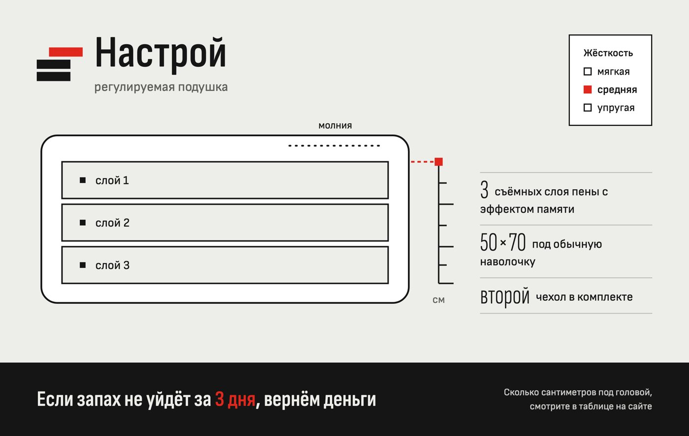
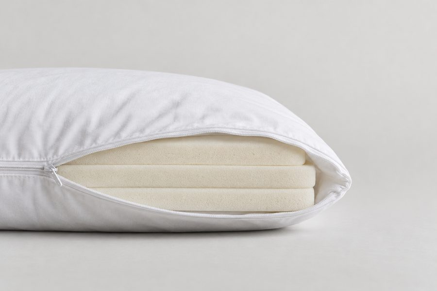
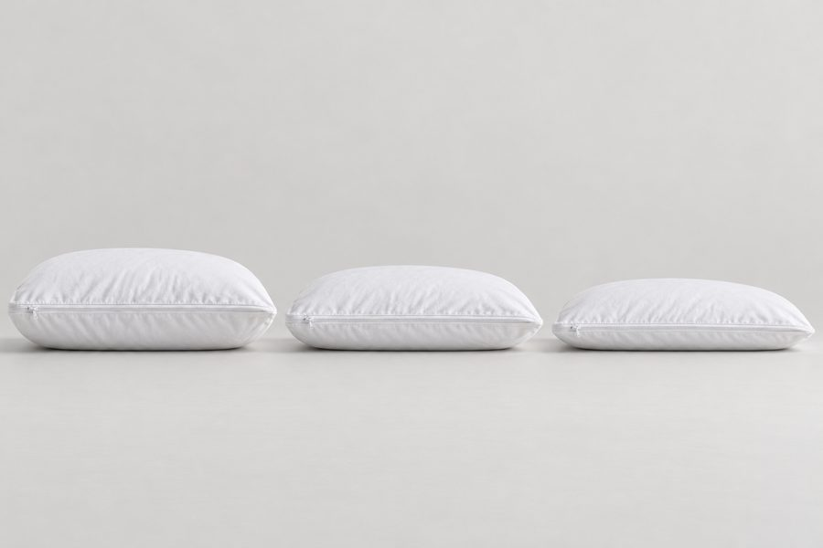
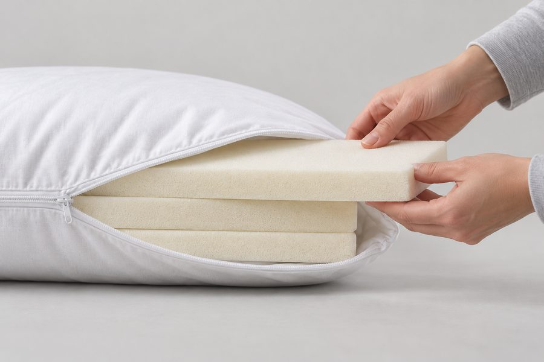
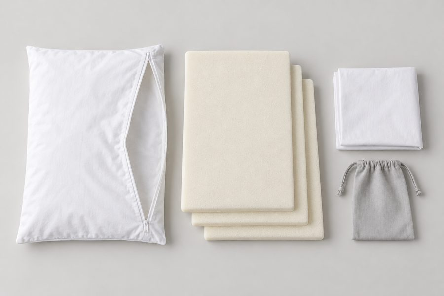
Product packaging photo: a matte uncoated light concrete-grey cardboard box (#EDEDEA) for a bed pillow, front view, centered on a seamless light grey background, soft even studio light. Print in two colors only: graphite (#151515) and signal red (#E0281E), plus white panels. Top left: a simple logo mark of three stacked flat rectangular bars, the top bar shifted right and red, and the Cyrillic wordmark "Настрой" in a condensed sans serif. Under it the small grey line "регулируемая подушка". Center: a minimal line drawing of a rectangular pillow cut in section showing three stacked foam layers, with a vertical graphite measuring scale on the side and one red mark at the top layer. Bottom: a graphite band with light text "Если запах не уйдёт за 3 дня, вернём деньги", the words "3 дня" in red. Photorealistic, clean, no other text, no other brands, no people.
Photorealistic studio product shot, three-quarter view of a matte light concrete-grey cardboard box with the Cyrillic wordmark "Настрой" in graphite (#151515) and a small red (#E0281E) bar in the logo, next to a plain white rectangular bed pillow (50x70 cm) with an open zipper showing three flat off-white memory foam slabs, on a seamless light grey backdrop, large soft light from the left, neutral color, no interior, no other text, no logos except "Настрой", no blue or purple tones.
Flat front-facing packaging artwork for a pillow box, rectangular, light concrete-grey background (#EDEDEA), graphite (#151515) and red (#E0281E) print, logo mark of three stacked flat bars with the top one shifted and red, large condensed wordmark "Настрой", line drawing of a pillow with three foam layers and a graphite scale with one red mark, empty graphite band at the bottom for text, generous margins, vector style, no other text.
Photorealistic studio product photo, landscape 3:2. One classic rectangular bed pillow in 50x70 cm proportions with a plain matte white cotton cover and a white zipper along one long side; inside are exactly three identical flat rectangular slabs of off-white memory foam stacked on top of each other (not shredded fill, not a contoured shape). The pillow lies flat on a seamless light grey paper backdrop (#E8E7E4), shot exactly side-on at pillow height so its thickness reads clearly; the zipper is open and the cover edge is folded back so the three foam slabs show as three clean horizontal bands. Large soft light from the left, gentle fill from the right, soft contact shadow, neutral 5200K color, crisp cotton and open-cell foam texture. Pillow in the left two thirds, empty grey space on the right. No props, no people. No text, letters, numbers, labels, tags or logos anywhere.
Same studio, same seamless light grey backdrop (#E8E7E4), same soft light and the same pillow design as the previous image. Three identical classic rectangular white bed pillows in 50x70 cm proportions with white zip covers, lined up side by side with equal gaps and shot side-on at pillow height: the left pillow contains three flat off-white memory foam slabs, the middle one two, the right one one, so the three pillows clearly step down in height. Covers zipped closed, identical light, soft contact shadows, landscape 3:2, generous empty grey space above. No people, no rulers. No text, letters, numbers, labels or logos anywhere.
Same studio, same seamless light grey backdrop, same soft light and the same pillow as the first image. Photorealistic close-up, landscape 3:2, three-quarter view at table height. Two hands (only hands and wrists visible, no jewelry, plain light grey sleeves) slide the top slab of off-white memory foam out through the open zipper of the white pillow that holds three identical flat foam slabs; the other two slabs stay inside. Large soft key light from the left, shallow depth of field, slab edge in sharp focus. No faces. No text, letters, numbers, labels or logos anywhere.
Same studio, same seamless light grey paper, same soft light and the same pillow as the first image. Photorealistic top-down flat lay, landscape 3:2. On the left, the empty plain matte white cotton pillow cover lies flat with its white zipper open along the long side; the cover is a rectangle in true 50x70 cm proportions (only 1.4 times longer than wide). In the middle, three identical flat slabs of off-white memory foam, each the same 50x70 rectangle as the cover and about 3 cm thick, stacked and slightly fanned like a staircase so the edges of all three are visible. On the right, a second folded white pillow cover and a small plain light grey cotton drawstring bag. Even soft light from above, very soft shadows, neutral color, even grey margins. No people, no other props. No text, letters, numbers, labels or logos anywhere.
Same studio, same seamless light grey backdrop, same soft light and the same pillow as the first image. Photorealistic studio product photo, landscape 3:2. The pillow is fully zipped closed and lies flat on the grey surface (not floating), seen from a low three-quarter front angle; the white zipper runs along the long side facing the camera; plain matte white cotton cover, soft contact shadow under the pillow, large soft light from the left, neutral color. The pillow fills the middle of the frame with even grey margins. No props, no people. No text, letters, numbers, labels or logos anywhere.
Бриф упаковки целиком
Упаковка и изображения «Настрой» (шаг 05, промпты 5 и 5Б)
Версия 2 от 20.10.2026: упаковка перекрашена в систему «Протокол замера» вместе с сайтом (см. 03_visual.md). Первая версия в цветах льна, терракоты и охры лежит в _before_protocol/05_packaging.md, её картинки в pack/pack_front.before_protocol.png и pack/pack_3d.before_protocol.png.
Бриф упаковки (промпт 5)
Факты, которые нельзя менять. Подушка классической прямоугольной формы 50×70, белый чехол на молнии. Внутри три съёмных слоя пены с эффектом памяти. В комплекте второй чехол, мешок для хранения вынутых слоёв и инструкция. Размер коробки команда не задавала, поэтому в генерации описываем пропорции без цифр.
Архетип: Славный малый + Мудрец. Палитра и роли на коробке: бетон #EDEDEA (цвет картона, фон), графит #151515 (название, текст, рисунок, нижняя полоса и бок), серый #5F5F5B (подпись «регулируемая подушка», «см»), белый #FFFFFF (рисунок подушки и бирка жёсткости), красный #E0281E (метка на шкале, выбранная жёсткость, «3 дня» на полосе, выдвинутый пласт знака). Голос: просто, по делу, цифрами.
Текст на упаковке.
- Название: «Настрой», под ним «регулируемая подушка».
- УТП одной строкой: «Если запах не уйдёт за 3 дня, вернём деньги».
- Три характеристики на лицевой стороне: «3 съёмных слоя пены с эффектом памяти»; «50×70 под обычную наволочку»; «второй чехол в комплекте». Бирка «Жёсткость: мягкая / средняя / упругая» с отмеченной жёсткостью.
- На полосе рядом с УТП мелко: «Сколько сантиметров под головой, смотрите в таблице на сайте».
- На боковой стороне: «Сколько сантиметров будет под головой с 3, 2 и 1 слоем, смотрите в таблице на сайте. Чехол стирается при 30 °C. Пену не стирать.»
Композиция лицевой стороны. Слева сверху знак (три пласта, верхний выдвинут и красный) и слово «Настрой». В центре линейный рисунок подушки в разрезе: три слоя и шкала сбоку графитом, красная метка на уровне верхнего слоя. Справа сверху белая бирка в графитовой рамке, выбранная жёсткость отмечена красным квадратом. Справа три характеристики с крупными узкими цифрами. Внизу графитовая полоса с УТП светлыми буквами, «3 дня» красным.
Материал и печать. Матовый светло-серый немелованный картон, печать в два цвета: графит и красный, белые поля под рисунок и бирку. Без фактуры бумаги, глянца и тиснения. Крафт не берём: он у Pappus.
Ограничения. Без чужих брендов и лишних надписей, без слов «ортопедическая» и «лечит», форма товара не меняется, кириллица без ошибок.
Три промпта для генератора (Ideogram или Nano Banana)
- Фронт, нейтральный фон.
Product packaging photo: a matte uncoated light concrete-grey cardboard box (#EDEDEA) for a bed pillow, front view, centered on a seamless light grey background, soft even studio light. Print in two colors only: graphite (#151515) and signal red (#E0281E), plus white panels. Top left: a simple logo mark of three stacked flat rectangular bars, the top bar shifted right and red, and the Cyrillic wordmark "Настрой" in a condensed sans serif. Under it the small grey line "регулируемая подушка". Center: a minimal line drawing of a rectangular pillow cut in section showing three stacked foam layers, with a vertical graphite measuring scale on the side and one red mark at the top layer. Bottom: a graphite band with light text "Если запах не уйдёт за 3 дня, вернём деньги", the words "3 дня" in red. Photorealistic, clean, no other text, no other brands, no people.
- Ракурс три четверти, рядом подушка.
Photorealistic studio product shot, three-quarter view of a matte light concrete-grey cardboard box with the Cyrillic wordmark "Настрой" in graphite (#151515) and a small red (#E0281E) bar in the logo, next to a plain white rectangular bed pillow (50x70 cm) with an open zipper showing three flat off-white memory foam slabs, on a seamless light grey backdrop, large soft light from the left, neutral color, no interior, no other text, no logos except "Настрой", no blue or purple tones.
- Плоский макет для правки надписей в Canva.
Flat front-facing packaging artwork for a pillow box, rectangular, light concrete-grey background (#EDEDEA), graphite (#151515) and red (#E0281E) print, logo mark of three stacked flat bars with the top one shifted and red, large condensed wordmark "Настрой", line drawing of a pillow with three foam layers and a graphite scale with one red mark, empty graphite band at the bottom for text, generous margins, vector style, no other text.
Как генерировать. Сначала 3–4 варианта, выбрать один. Мелкие русские надписи генераторы часто портят: их проще поставить поверх картинки в Canva. Макеты pack/pack_front.png и pack/pack_3d.png свёрстаны в HTML (pack/front.html, pack/box3d.html), поэтому надписи в них точные. Проверка по слайду 19: кириллица без ошибок, факты не искажены, соответствует архетипу и палитре, нет чужих брендов, есть вариант на нейтральном фоне.
Кадры товара для сайта (промпт 5Б)
Факты, которые нельзя менять: белая прямоугольная подушка 50×70 на молнии, три слоя пены с эффектом памяти, второй чехол, мешок для слоёв. Архетип: Славный малый + Мудрец. Стиль: одна студийная серия на бесшовном светло-сером фоне, большой мягкий свет слева, нейтральная температура, без интерьера; из людей только руки.
Кадры сгенерированы в ChatGPT 20.10.2026 в одном чате, чтобы фон, свет и подушка совпадали. Первый промпт задаёт серию, следующие начинаются со слов «Same studio… as the first image».
| Кадр | Где на сайте | Формат |
|---|---|---|
| 1. Подушка в профиль, молния открыта, видны три слоя | первый экран с линейкой высоты | 3:2 |
| 2. Три подушки в ряд: три, два и один слой | блок 3, под каждой подушкой её поза | 3:2 |
| 3. Руки вынимают верхний слой | блок 1, рядом с описанием | 3:2 |
| 4. Комплект сверху: чехол, три слоя, второй чехол, мешок | блок 4, рядом с ценой | 3:2 |
| 5. Подушка лежит на сером, молния вдоль длинной стороны | форма заявки | 3:2 |
Промпты кадров 1–5 целиком, по порядку в одном чате ChatGPT (режим «Create image»). Кадры 4 и 5 переделаны после проверки дизайна: в первой раскладке чехол был вытянут примерно 2,3:1, а первый пэкшот парил в воздухе и выбивался из серии.
Photorealistic studio product photo, landscape 3:2. One classic rectangular bed pillow in 50x70 cm proportions with a plain matte white cotton cover and a white zipper along one long side; inside are exactly three identical flat rectangular slabs of off-white memory foam stacked on top of each other (not shredded fill, not a contoured shape). The pillow lies flat on a seamless light grey paper backdrop (#E8E7E4), shot exactly side-on at pillow height so its thickness reads clearly; the zipper is open and the cover edge is folded back so the three foam slabs show as three clean horizontal bands. Large soft light from the left, gentle fill from the right, soft contact shadow, neutral 5200K color, crisp cotton and open-cell foam texture. Pillow in the left two thirds, empty grey space on the right. No props, no people. No text, letters, numbers, labels, tags or logos anywhere.Same studio, same seamless light grey backdrop (#E8E7E4), same soft light and the same pillow design as the previous image. Three identical classic rectangular white bed pillows in 50x70 cm proportions with white zip covers, lined up side by side with equal gaps and shot side-on at pillow height: the left pillow contains three flat off-white memory foam slabs, the middle one two, the right one one, so the three pillows clearly step down in height. Covers zipped closed, identical light, soft contact shadows, landscape 3:2, generous empty grey space above. No people, no rulers. No text, letters, numbers, labels or logos anywhere.Same studio, same seamless light grey backdrop, same soft light and the same pillow as the first image. Photorealistic close-up, landscape 3:2, three-quarter view at table height. Two hands (only hands and wrists visible, no jewelry, plain light grey sleeves) slide the top slab of off-white memory foam out through the open zipper of the white pillow that holds three identical flat foam slabs; the other two slabs stay inside. Large soft key light from the left, shallow depth of field, slab edge in sharp focus. No faces. No text, letters, numbers, labels or logos anywhere.Same studio, same seamless light grey paper, same soft light and the same pillow as the first image. Photorealistic top-down flat lay, landscape 3:2. On the left, the empty plain matte white cotton pillow cover lies flat with its white zipper open along the long side; the cover is a rectangle in true 50x70 cm proportions (only 1.4 times longer than wide). In the middle, three identical flat slabs of off-white memory foam, each the same 50x70 rectangle as the cover and about 3 cm thick, stacked and slightly fanned like a staircase so the edges of all three are visible. On the right, a second folded white pillow cover and a small plain light grey cotton drawstring bag. Even soft light from above, very soft shadows, neutral color, even grey margins. No people, no other props. No text, letters, numbers, labels or logos anywhere.Same studio, same seamless light grey backdrop, same soft light and the same pillow as the first image. Photorealistic studio product photo, landscape 3:2. The pillow is fully zipped closed and lies flat on the grey surface (not floating), seen from a low three-quarter front angle; the white zipper runs along the long side facing the camera; plain matte white cotton cover, soft contact shadow under the pillow, large soft light from the left, neutral color. The pillow fills the middle of the frame with even grey margins. No props, no people. No text, letters, numbers, labels or logos anywhere.
Проверка по слайду 21: форма и комплектация не изменены, лишних надписей нет, на сайте подпись «Фото: визуализация, товар учебный.». Первая серия (спальня в утреннем свете) на сайте больше не стоит: тёплая спальня из генератора сильнее всего выдаёт ИИ и спорит с серым студийным фоном.
Шаг 06 · промпты 6 и 7 · Вордстат, Россия, 08.09–07.10.2026
Семантическое ядро
Название и тип товара
- регулируемая подушка979
- подушка с регулировкой высоты147
- анатомическая подушка21 713
- ортопедическая подушка119 474
- подушка с эффектом памяти7 621
- подушка без запаха178
Для чего и когда
- подушка для сна на боку1 631
- подушка для сна на спине1 001
- подушка для шеи15 602
- подушка при остеохондрозе7 016
Проблемы и возражения
- запах подушки2 926
- подушка пахнет1 219
- жесткая подушка7 492
- высокая подушка7 072
- болит шея после сна4 358
Выбор и сравнение
- какая подушка лучше37 298
- как выбрать подушку15 103
- как выбрать ортопедическую подушку5 791
- ортопедическая подушка отзывы2 888
Здесь примеры затравочных фраз из 32. У них стоит общее число запросов по фразе в Вордстате. В группах ядра и в брифе стоят строки выгрузки, поэтому там числа меньше.
Сезонность: «ортопедическая подушка» по месяцам
октябрь 2024 – сентябрь 2026Максимум: август 2026, 163 210Минимум: май 2026, 79 925
Пик в августе 2026 года и в декабре, провал в мае; в 2025 году августовский пик слабее, чем в 2026. Регулируемых подушек ищут мало (979 в месяц по всем фразам со словами «регулируемая подушка»), поэтому трафик дают общие запросы, а «регулируемая» отличает нас уже на странице.
| Группа | Намерение | Главный запрос | Сумма без вложенных | Блок сайта |
|---|---|---|---|---|
| Подушка для сна: покупка | коммерческий | ортопедическая подушка 100 571 в месяц | 121 314 | Блок 4. Как устроена и сколько стоит |
| Лучшие, рейтинги и отзывы | информационный | какие подушки лучше 30 883 в месяц | 44 479 | Блок 6. Почему «Настрой»; Блок 5. Отзывы |
| Как выбрать подушку | информационный | как выбрать подушку 12 802 в месяц | 25 917 | Блок 3. Мой случай: позы сна |
| Выбор наполнителя | информационный | какой наполнитель лучше для подушки 8 773 в месяц | 12 717 | Блок 7. Вопросы |
| Пена с памятью: покупка | коммерческий | подушка с эффектом памяти 6 552 в месяц | 10 500 | Блок 4. Как устроена и сколько стоит |
| Выбор варианта жёсткости | коммерческий | подушка жесткая 7 010 в месяц | 7 468 | Блок 2. Проблема; Блок 4. Как устроена и сколько стоит |
| Высокая подушка и габариты | коммерческий | высокая подушка 6 563 в месяц | 6 906 | Блок 2. Проблема |
| Как выбрать высоту и размер | информационный | высота ортопедической подушки 2 509 в месяц | 6 489 | Блок 4. Как устроена и сколько стоит |
| Подбор при заболеваниях шеи | проблемный | подушка при остеохондрозе 5 847 в месяц | 5 862 | Блок 7. Вопросы |
| Что купить: сравнение | коммерческий | какие подушки лучше купить 3 716 в месяц | 5 063 | Блок 6. Почему «Настрой» |
| Боль и дискомфорт после сна | проблемный | болит шея после сна 4 298 в месяц | 4 769 | Блок 2. Проблема |
| Типы, отличия и устройство | информационный | анатомическая подушка эффект 861 в месяц | 3 440 | Блок 7. Вопросы |
| Подушка под позу сна | коммерческий | подушка для сна на боку 1 394 в месяц | 2 975 | Блок 3. Мой случай: позы сна |
| Как пользоваться | информационный | как спать на ортопедической подушке 2 223 в месяц | 2 920 | Блок 7. Вопросы |
| Цена | коммерческий | ортопедическая подушка цена 1 376 в месяц | 1 919 | Блок 4. Как устроена и сколько стоит |
| Стирка и срок службы | информационный | можно стирать ортопедическую подушку 924 в месяц | 1 525 | Блок 7. Вопросы |
| Размер 50×70: покупка | коммерческий | подушка ортопедическая 50х70 703 в месяц | 1 384 | Блок 4. Как устроена и сколько стоит |
| Как выбрать жёсткость | информационный | какие подушки жесткие 612 в месяц | 912 | Блок 4. Как устроена и сколько стоит |
| Покупка при заболеваниях шеи | коммерческий | ортопедическая подушка при шейном остеохондрозе купить 352 в месяц | 490 | Блок 7. Вопросы |
| Сомнения и возврат | проблемный | нужна ли ортопедическая подушка 332 в месяц | 480 | Блок 7. Вопросы |
| Запах новой подушки | проблемный | как убрать запах с подушки 187 в месяц | 451 | Блок 1. Первый экран (H1); Блок 2. Проблема; Блок 7. Вопросы |
| Пена с памятью: выбор и свойства | информационный | лучшие подушки с эффектом памяти 182 в месяц | 431 | Блок 4. Как устроена и сколько стоит |
| Материал чехла | информационный | какая ткань лучше для подушки 245 в месяц | 379 | Не на главной: ткань чехла не задана |
| Как подобрать под позу сна | информационный | лучшие подушки для сна на боку 98 в месяц | 369 | Блок 3. Мой случай: позы сна |
| Регулировка высоты | коммерческий | подушка с регулировкой высоты 134 в месяц | 262 | Блок 1. Первый экран (H1) |
| Слишком высокая или низкая | проблемный | как сделать подушку повыше 54 в месяц | 163 | Блок 2. Проблема |
| Сомнения об аллергенности | проблемный | какая подушка лучше для аллергиков 83 в месяц | 139 | Не на главной: «гипоаллергенная» подтвердить нечем |
| Запах при эксплуатации | проблемный | подушка пахнет сыростью что делать 27 в месяц | 51 | Не на главной: запах сырости, гарантия касается запаха новой пены |
| Наполнитель комкуется | проблемный | как выбрать подушку чтобы не комковалась 22 в месяц | 22 | Блок 3. Мой случай: позы сна |
«Сумма без вложенных»: Вордстат считает длинные запросы внутри коротких, поэтому вложенные в сумму не идут. «Подушка для шеи» (13 171) и 20 её вариантов вынесены отдельно: по самой фразе выдача Яндекса смешанная (подушки для сна вперемешку с дорожными и автомобильными), варианты без «для сна» по выдаче не проверяли.
Сверка с ядром команды (файл «Семантическое_ядро_подушки.xlsx»): за 08.09–07.10.2026 частоты совпали во всех 233 общих фразах. Часть ключей из этого ядра добавлена в бриф с пометкой «ядро команды».
Ядро и выгрузку Вордстата в xlsx можно скачать в списке файлов шага 08.
Почему удалены 840 запросов
- 276 Бренд
- 100 Дорога
- 89 Назначение
- 85 Конструкция
- 68 Гео
- 68 Постороннее
- 57 Аудитория
- 32 Аксессуар
- 22 Устройство
- 14 Размер
- 14 Омоним
- 8 Иная задача
- 7 Ассортимент
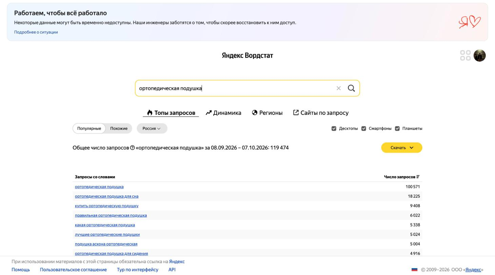
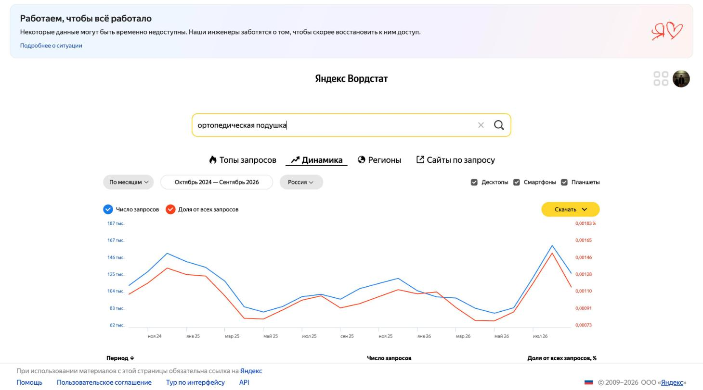
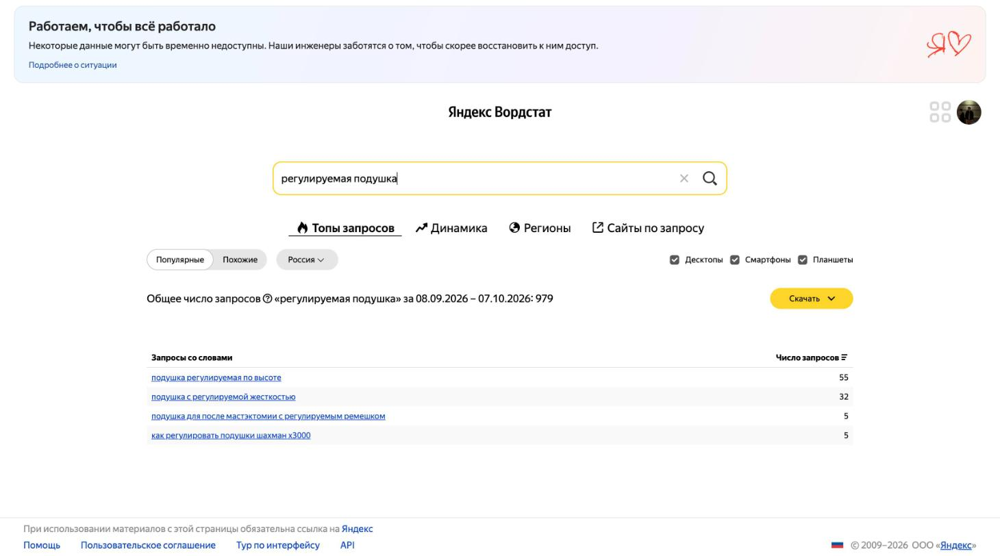
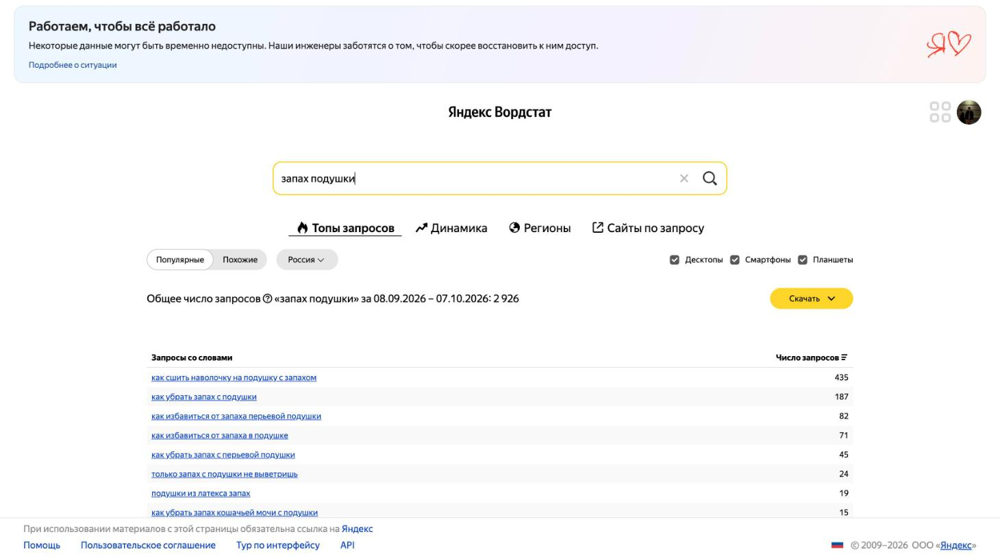
Остальные скриншоты: регион и дата на каждом
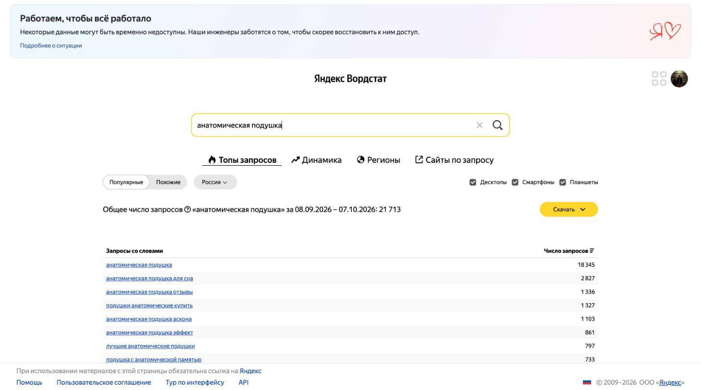
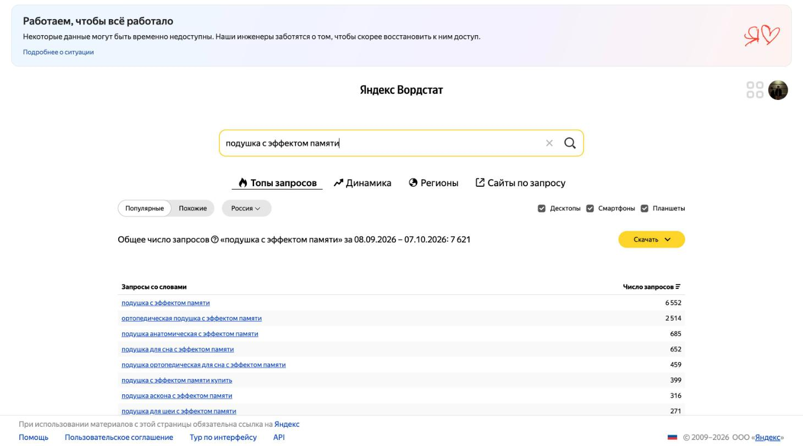
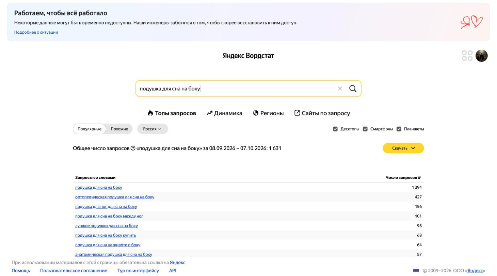
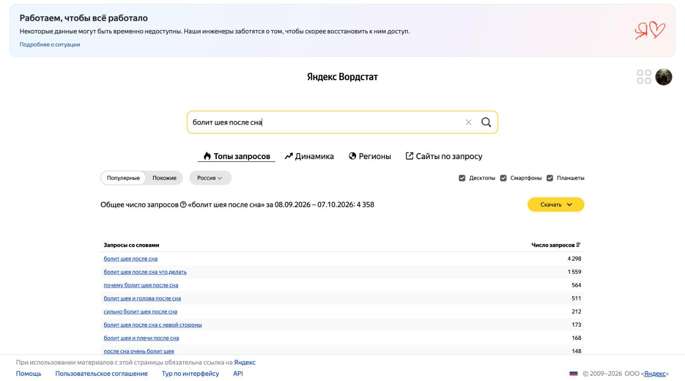
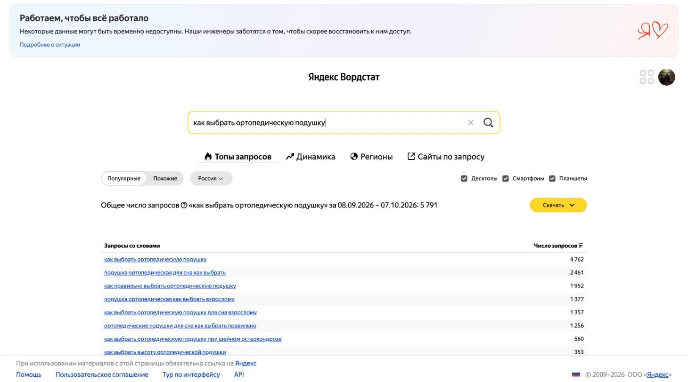
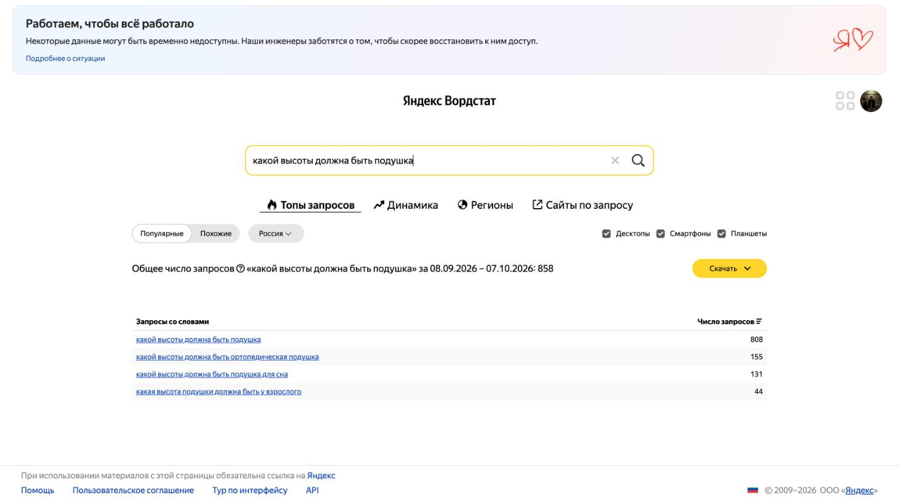
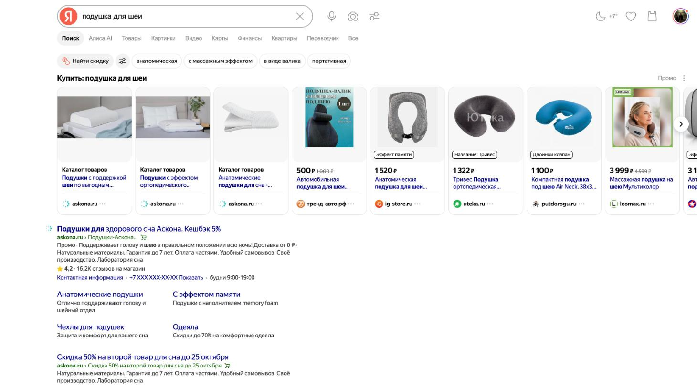
Шаг 07 · промпт 8
Структура главной страницы
Структура по SEO-файлам команды: 7 блоков по вопросам покупателя, один H1, 7 H2 и 21 H3. Что поменяли относительно них и почему, в таблице внутри «Структура целиком».
Анатомическая подушка с регулировкой высоты | Настрой
Анатомическая подушка с регулировкой высоты. Если запах не уйдёт за 3 дня, вернём деньги. Три съёмных слоя пены с эффектом памяти, таблица высот после замера.
- H1 · Анатомическая подушка с регулировкой высоты: знайте высоту под головойКуда я попал? Первый экран: подзаголовок с гарантией, кнопка заказа, три доказательства
- H2 · Подушка с регулировкой высоты: что это за товарКуда я попал? H3: «Высота, которую можно изменить», «Фактическая высота под головой», «Гарантия, если химический запах не исчезнет за 3 дня»
- H2 · Как выбрать высоту анатомической подушкиЭто про мою проблему? H3: «Если подушка слишком высокая или низкая», «Высота под головой с одним, двумя и тремя слоями», «Что уточнить при неудобстве и дискомфорте»
- H2 · Как выбрать анатомическую подушку под свой случайВы работаете с моим случаем? H3: «Для сна на боку и на спине», «Привычная подушка и новая настройка», «Если выбираете подушку для другого человека»
- H2 · Сколько стоит анатомическая подушка и как настроить высотуКак вы решите проблему и сколько это стоит? H3: «Как изменить высоту подушки», «Наполнитель и жёсткость: что выбрать», «Цена, комплектация и условия заказа»
- H2 · Отзывы об анатомической подушке и опыт использованияВы с этим сталкивались? H3: «Поза сна и выбранная настройка в отзыве», «Как спать на анатомической подушке», «Что действительно подтверждено опытом покупателей»
- H2 · Какая анатомическая подушка лучше: что можно сравнитьПочему именно вы? H3: «Возврат денег при сохраняющемся химическом запахе», «Фактическая высота под головой», «Сравнение на одинаковых основаниях»
- H2 · Вопросы об анатомической подушке: высота, запах и уходДополнительные вопросы перед покупкой. H3: «Высота и регулировка», «Запах, возврат и привыкание», «Уход и характеристики»
- H2 · Заявка на подушку «Настрой»Форма: имя, телефон или почта, жёсткость, сколько подушек; после отправки честное сообщение об учебном проекте
Структура целиком: ключевые слова, цитируемые фрагменты 136–143 слов, вопросы
Структура главной страницы «Настрой» (шаг 07, промпт 8)
Структура взята из файлов команды «SEO_структура_главной_подушки.xlsx» и «SEO_структура_и_тексты_подушки.docx»: 7 блоков по вопросам покупателя, один H1, 7 H2 и 21 H3. Кластеры ядра, главные запросы блоков и сегменты тоже оттуда. Заголовки, ключи, тексты и вопросы ниже взяты из брифа для Manus (08), поэтому сайт, бриф и этот файл совпадают.
Частоты: запросов в месяц, Вордстат, Россия. У ключей без пометки период 08.09–07.10.2026, строка нашей выгрузки. «Ядро команды»: строка таблицы ядра команды за тот же период. «Общее число по затравке»: общий показатель запроса, а не строка таблицы. «19.09–19.10»: второй период ядра команды. Частоты разных периодов не складываем. Длина фрагментов посчитана программой: слово это подряд идущие буквы или цифры.
SEO
- Title (знаков: 53): Анатомическая подушка с регулировкой высоты | Настрой
- Description (знаков: 158): Анатомическая подушка с регулировкой высоты. Если запах не уйдёт за 3 дня, вернём деньги. Три съёмных слоя пены с эффектом памяти, таблица высот после замера.
- H1: Анатомическая подушка с регулировкой высоты: знайте высоту под головой. Главный запрос первого блока по файлу команды: «анатомическая подушка с регулировкой высоты» (11, общее число запросов по затравке, 19.09.2026–19.10.2026), в H1 он стоит целиком. Рядом с H1 подзаголовок с обоими обещаниями УТП: возврат денег, если химический запах не исчезнет за 3 дня (Г1) и фактическая высота под головой (Г3).
- Вопросы и ответы: 13 (в файле команды 11) под тремя H3 блока 7.
- Разметка schema.org: Organization; Product без Offer, рейтинга и отзывов (продажи не ведутся, отзывов нет); FAQPage по блоку 7 дословно.
Что поменяли относительно файла команды
| Где | В файле команды | У нас | Почему |
|---|---|---|---|
| H1 | Анатомическая подушка с регулировкой высоты — знайте высоту под головой | Анатомическая подушка с регулировкой высоты: знайте высоту под головой | Правило текстов брифа: без длинных тире. |
| Title | Анатомическая подушка с регулировкой высоты — под себя | Анатомическая подушка с регулировкой высоты | Настрой | Без тире; название бренда в конце. |
| Description | Анатомическая подушка с регулировкой высоты. Высота под головой для двух уровней наполнения. Возврат денег, если химический запах не исчезнет за 3 дня. | Анатомическая подушка с регулировкой высоты. Если запах не уйдёт за 3 дня, вернём деньги. Три съёмных слоя пены с эффектом памяти, таблица высот после замера. | Гарантия в начале, чтобы не обрезалась в мобильной выдаче; решения команды: три съёмных слоя, таблица высот после замера. |
| Главная кнопка | Посмотреть высоту и характеристики | Заказать за 2 960 ₽ | Цена решена (2 960 ₽), форма учебная и ничего не отправляет; к высоте ведёт вторая ссылка «Посмотреть таблицу высот». |
| Блок 2, H3 2 | Полное и уменьшенное наполнение под головой | Высота под головой с одним, двумя и тремя слоями | Команда решила три слоя, поэтому высот три, а не два уровня наполнения. |
| Блок 4, H3 2 | Наполнитель и жесткость: какие данные нужны | Наполнитель и жёсткость: что выбрать | Наполнитель и жёсткость решены, поэтому вопрос покупателя «что выбрать». |
| FAQ | 11 вопросов | добавлены: «Нужно ли возвращать подушку, чтобы получить деньги за запах?», «Ортопедическая или анатомическая: в чём разница?» | Были в прошлой версии брифа: отвечают на возражения про возврат и слово «ортопедическая». |
Все H2 совпадают с файлом команды. Тексты фрагментов и ответов переписаны простыми фразами: в файле команды слои, жёсткость, чехол и цена стояли как неподтверждённые, теперь это решения команды. Служебные строки («Нужны данные», «Статус») на сайт не идут.
Таблица по слайду 40
| Блок | H1 или H2 | H3 | Кластеры ядра команды | Главный запрос (частота, период) |
|---|---|---|---|---|
| Блок 1 | H1: Анатомическая подушка с регулировкой высоты: знайте высоту под головой; H2: Подушка с регулировкой высоты: что это за товар | «Высота, которую можно изменить», «Фактическая высота под головой», «Гарантия, если химический запах не исчезнет за 3 дня» | C05 «Категория и характеристики»; C11 «Высота и посадка» | анатомическая подушка с регулировкой высоты (11, 19.09.2026–19.10.2026) |
| Блок 2 | H2: Как выбрать высоту анатомической подушки | «Если подушка слишком высокая или низкая», «Высота под головой с одним, двумя и тремя слоями», «Что уточнить при неудобстве и дискомфорте» | C01 «Высота и посадка»; C18 «Высота и посадка»; C16 «Адаптация и дискомфорт» | как выбрать высоту анатомической подушки (38, 08.09.2026–07.10.2026) |
| Блок 3 | H2: Как выбрать анатомическую подушку под свой случай | «Для сна на боку и на спине», «Привычная подушка и новая настройка», «Если выбираете подушку для другого человека» | C04 «Как выбрать»; C07 «Поза сна и поддержка»; C13 «Поза сна и поддержка» | как выбрать анатомическую подушку (347, 08.09.2026–07.10.2026) |
| Блок 4 | H2: Сколько стоит анатомическая подушка и как настроить высоту | «Как изменить высоту подушки», «Наполнитель и жёсткость: что выбрать», «Цена, комплектация и условия заказа» | C02 «Жесткость»; C08 «Регулировка и наполнитель»; C12 «Категория и характеристики»; C14 «Регулировка и наполнитель» | сколько стоит анатомическая подушка (40, 08.09.2026–07.10.2026) |
| Блок 5 | H2: Отзывы об анатомической подушке и опыт использования | «Поза сна и выбранная настройка в отзыве», «Как спать на анатомической подушке», «Что действительно подтверждено опытом покупателей» | C03 «Использование»; C06 «Отзывы» | анатомическая подушка отзывы (1 336, 08.09.2026–07.10.2026) |
| Блок 6 | H2: Какая анатомическая подушка лучше: что можно сравнить | «Возврат денег при сохраняющемся химическом запахе», «Фактическая высота под головой», «Сравнение на одинаковых основаниях» | C09 «Сравнение альтернатив»; C15 «Сравнение альтернатив»; C17 «Возврат»; C19 «Запах» | анатомическая подушка какая лучше (329, 08.09.2026–07.10.2026) |
| Блок 7 | H2: Вопросы об анатомической подушке: высота, запах и уход | «Высота и регулировка», «Запах, возврат и привыкание», «Уход и характеристики» | C10 «Уход»; C01 «Высота и посадка»; C08 «Регулировка и наполнитель»; C16 «Адаптация и дискомфорт»; C17 «Возврат»; C19 «Запах» | можно ли стирать анатомическую подушку (102, 08.09.2026–07.10.2026) |
| Форма | H2: Заявка на подушку «Настрой» | нет |
Блок 1. «Куда я попал?»
- H1: Анатомическая подушка с регулировкой высоты: знайте высоту под головой
- H2: Подушка с регулировкой высоты: что это за товар
- H3: «Высота, которую можно изменить», «Фактическая высота под головой», «Гарантия, если химический запах не исчезнет за 3 дня»
- Ключевые слова: подушка с регулировкой высоты (134), что значит анатомическая подушка (117), подушка анатомическая для сна что это значит (42), анатомическая подушка с регулировкой высоты (11, ядро команды, общее число по затравке, 19.09–19.10), подушка с регулируемой высотой (128), подушка регулируемая по высоте (55).
- Сегменты (файл команды): Рациональные сравнивающие; Настраивающие под себя
- Обещание УТП: Г1 возврат денег, если химический запах не исчезнет за 3 дня; Г3 фактическая высота под головой
- Что показать:
- Строка над заголовком: «Для тех, кто перепробовал не одну подушку и хочет просыпаться без боли в шее»
- Подзаголовок: «Если запах не уйдёт за 3 дня, вернём деньги. Пишем, сколько сантиметров будет под головой с одним, двумя и тремя слоями.»
- Строка о товаре: «Три съёмных слоя пены с эффектом памяти: вынули слой, и подушка ниже. Жёсткость на выбор: мягкая, средняя или упругая. Размер 50×70 см под обычную наволочку, второй чехол в комплекте.»
- Кнопка: «Заказать за 2 960 ₽» (ведёт к форме заявки, высота от 48 px). Вторая кнопка-ссылка: «Посмотреть таблицу высот» (ведёт к таблице).
- Три доказательства под кнопками, жирными подписями без тегов заголовков (для экранных дикторов только у подписи гарантии role heading с aria-level 2):
- 1) Блок гарантии на графитовой полосе (якорь «Гарантия»), подпись «Как вернуть деньги за запах»: «Пена может пахнуть: на запах жалуются в 500 из 850 плохих отзывов о регулируемых подушках. 1. На 4-й день после получения понюхайте подушку. 2. Если химический запах остался, напишите нам [канал связи и срок обращения: решает команда]. 3. Вернём 2 960 ₽ [способ и срок возврата: решает команда]. Подушку и коробку возвращать не нужно.»
- 2) Плашка, подпись «Сантиметры под нагрузкой»: «19 октября 2026 года мы проверили 17 карточек конкурентов. Ни в одной не указана высота под нагрузкой. У нас она будет для одного, двух и трёх слоёв.»
- 3) Плашка, подпись «Высота меняется слоями»: «Вынули слой, и подушка ниже. Крошку пересыпать не нужно.»
- Изображение: подушка в профиль с открытой молнией и тремя слоями.
- Цитируемый фрагмент (142 слова): Это анатомическая подушка «Настрой» 50×70 см с регулировкой высоты и эффектом памяти. Анатомической называют подушку, которая подстраивается под положение головы и шеи: так работает пена с эффектом памяти. Внутри три съёмных слоя этой пены. Чтобы подушка стала ниже, расстегните верхний чехол и молнию внутреннего, затем выньте слой: пересыпать ничего не нужно. Вынутые слои хранятся в мешке из комплекта. Жёсткость выбираете при заказе: мягкая, средняя или упругая. Чехол снимается и стирается при 30 °C, второй чехол лежит в коробке. Подушка подходит в обычную наволочку 50×70 см. Главное обещание про запах. Если запах не уйдёт за 3 дня, вернём деньги. Подушку и коробку возвращать не нужно. Второе обещание про высоту. Для одного, двух и трёх слоёв мы пишем, сколько сантиметров будет под головой. Значения появятся в таблице после замера образца. Ортопедической мы подушку не называем и лечения не обещаем. Цена 2 960 ₽.
Блок 2. «Это про мою проблему?»
- H2: Как выбрать высоту анатомической подушки
- H3: «Если подушка слишком высокая или низкая», «Высота под головой с одним, двумя и тремя слоями», «Что уточнить при неудобстве и дискомфорте»
- Ключевые слова: как выбрать высоту анатомической подушки (38), как измерить высоту подушки для себя (22, ядро команды), подушка слишком низкая (48, ядро команды, общее число по затравке, 19.09–19.10), подушка слишком высокая что делать (12, ядро команды, общее число по затравке, 19.09–19.10), неудобно спать на анатомической подушке (1, ядро команды, общее число по затравке, 19.09–19.10), какой высоты должна быть подушка (808), высокая подушка (6 563).
- Сегменты (файл команды): Рациональные сравнивающие; Ищущие высоту и поддержку; Осторожные адаптирующиеся
- Обещание УТП: Г3 фактическая высота под головой
- Что показать:
- Изображение: общий кадр трёх подушек с тремя, двумя и одним слоем; под каждой подушкой подпись без тега заголовка: «3 слоя», «2 слоя», «1 слой».
- Цитируемый фрагмент (141 слово): Высота подушки зависит от позы сна и ширины плеч. Если прошлая подушка казалась слишком высокой или слишком низкой, сначала подберите высоту под головой. У «Настроя» она меняется слоями. Три съёмных слоя пены с эффектом памяти дают три высоты: вынули слой, и подушка ниже. На боку между головой и матрасом остаётся ширина плеча, поэтому слоёв нужно больше. Для сна на боку оставьте все три слоя, на спине два, на животе один. Это отправная точка, дальше подгоняете высоту под себя за несколько ночей. Сколько сантиметров будет под головой, мы напишем для каждого варианта. В таблице будут два значения: под нагрузкой и без неё. Высота без нагрузки нужна, чтобы сравнить её с высотой в карточках других продавцов. Под головой пена сжимается, поэтому важнее значение под нагрузкой. Значения появятся после замера образца. Если по утрам неудобно, попробуйте другую высоту: верните слой или выньте ещё один.
Блок 3. «Вы работаете с моим случаем?»
- H2: Как выбрать анатомическую подушку под свой случай
- H3: «Для сна на боку и на спине», «Привычная подушка и новая настройка», «Если выбираете подушку для другого человека»
- Ключевые слова: как выбрать анатомическую подушку (347), подушка для поддержки шеи (173), анатомическая подушка для сна на боку (57), анатомическая подушка для сна на спине (27), как выбрать подушку для сна на боку (51), как выбрать подушку для пожилого человека (4, ядро команды, общее число по затравке, 19.09–19.10), подушка для сна на боку (1 394), подушка для сна на спине (839), подушка для сна на животе (742).
- Сегменты (файл команды): Рациональные сравнивающие; Ищущие высоту и поддержку; Покупатели для другого
- Обещание УТП: Г3 фактическая высота под головой
- Что показать:
- Три карточки с жирной подписью (не заголовком):
- «Для тех, кто устал пересыпать крошку»: «Высота меняется слоями: вынули слой, и подушка ниже. Слои вынимаются целиком.»
- «Для тех, кому подушка то „кирпич“, то „как блин“»: «Жёсткость выбираете при заказе: мягкая, средняя или упругая. Мягкая, если подушки обычно кажутся вам жёсткими, упругая, если голова проваливается.»
- «Для тех, у кого чехол всегда в стирке»: «Второй чехол в комплекте: один на подушке, другой в стирке. Чехол снимается и стирается при 30 °C.»
- Цитируемый фрагмент (143 слова): Анатомическую подушку выбирают по позе сна, привычкам и нужной жёсткости. На боку между головой и матрасом остаётся ширина плеча, поэтому оставьте все три слоя. На спине подушка нужна ниже: выньте один слой. На животе голова почти лежит на матрасе, поэтому оставьте один слой. Если спите то на боку, то на спине, начните с двух слоёв. Если подушки обычно кажутся вам жёсткими, выбирайте мягкую. Если голова проваливается, выбирайте упругую. Если не знаете, берите среднюю. Жёсткость выбирают один раз, при заказе, а высоту можно менять дома сколько угодно. Размер у всех вариантов один: 50×70 см. Если покупаете для семьи или в подарок, каждый настроит высоту под себя. Вынутые слои хранятся в мешке из комплекта и не теряются. Если чехол часто в стирке, второй чехол уже в коробке. Сколько сантиметров будет под головой с одним, двумя и тремя слоями, покажет таблица высот после замера образца.
Блок 4. «Как вы решите проблему и сколько это стоит?»
- H2: Сколько стоит анатомическая подушка и как настроить высоту
- H3: «Как изменить высоту подушки», «Наполнитель и жёсткость: что выбрать», «Цена, комплектация и условия заказа»
- Ключевые слова: сколько стоит анатомическая подушка (40), купить анатомическую подушку для сна (258), какой наполнитель лучше для анатомической подушки (14), как выбрать жесткость подушки (69, ядро команды, общее число по затравке), как регулировать высоту подушки (13, ядро команды, общее число по затравке, 19.09–19.10), регулируемая подушка для сна (52, ядро команды, общее число по затравке, 19.09–19.10), подушка с эффектом памяти (6 552), анатомическая подушка (18 345), анатомическая подушка 50х70 (547).
- Сегменты (файл команды): Рациональные сравнивающие; Настраивающие под себя; Практичные пользователи
- Обещание УТП: Г3 фактическая высота под головой
- Что показать:
- Под «Как изменить высоту подушки»: переключатель «3 слоя, 2 слоя, 1 слой», схема слоёв в разрезе (линии, цвета палитры) и таблица высот (якорь «Таблица высот»): настоящая таблица HTML с подписью «Сколько сантиметров под головой», заголовками строк «3 слоя», «2 слоя», «1 слой» и столбцов «Высота под головой, см» и «Высота без нагрузки, см». Во всех ячейках со значениями «–» (короткое тире: значения ещё нет), под таблицей пометка: «Значения появятся после замера образца.» и строка «[способ замера и фото замера: решает команда]». Цифры не придумывай.
- Под «Наполнитель и жёсткость: что выбрать»: настоящие радиокнопки в группе с подписью «Жёсткость» (мягкая, средняя, упругая) с подсказкой под каждой: «если подушки обычно кажутся жёсткими», «если не знаете, какую выбрать», «если голова проваливается»; выбранный вариант отмечен радиокнопкой, красной меткой и словом «выбрано».
- Под «Цена, комплектация и условия заказа»: цена крупно, кадр комплекта сверху, комплект списком: подушка, три слоя, второй чехол, мешок для слоёв, инструкция; кнопка «Заказать за 2 960 ₽».
- Цитируемый фрагмент (138 слов): Подушка «Настрой» стоит 2 960 ₽. Зачёркнутой цены рядом нет. В комплекте регулируемая подушка 50×70 см с тремя съёмными слоями пены с эффектом памяти. Ещё в коробке второй чехол, мешок для вынутых слоёв и инструкция. Чехол снимается и стирается при 30 °C. Жёсткость выбираете при заказе: мягкая, средняя или упругая. Высоту настраиваете дома без инструментов. Расстегните верхний чехол и молнию внутреннего, выньте слой и застегните обе молнии. Чтобы подушка стала выше, верните слой на место. Пересыпать наполнитель не нужно: слои вынимаются целиком. В таблице высот будут два значения для одного, двух и трёх слоёв. Первое покажет высоту под головой, то есть под нагрузкой. Второе покажет высоту подушки на столе: её можно сравнить с высотой в карточках других продавцов. Значения появятся после замера образца. Если запах не уйдёт за 3 дня, вернём деньги. Подушку и коробку возвращать не нужно.
Блок 5. «Вы с этим сталкивались?»
- H2: Отзывы об анатомической подушке и опыт использования
- H3: «Поза сна и выбранная настройка в отзыве», «Как спать на анатомической подушке», «Что действительно подтверждено опытом покупателей»
- Ключевые слова: анатомическая подушка отзывы (1 336), анатомическая подушка для сна отзывы (160), как спать на анатомической подушке (136), анатомическая подушка отзывы покупателей (80, ядро команды, общее число по затравке, 19.09–19.10), регулируемая подушка отзывы (12, ядро команды, общее число по затравке, 19.09–19.10), ортопедическая подушка отзывы (2 328), подушка с эффектом памяти отзывы (257).
- Сегменты (файл команды): Рациональные сравнивающие; Осторожные адаптирующиеся
- Обещание УТП: Г1 возврат денег, если химический запах не исчезнет за 3 дня; Г3 фактическая высота под головой
- Что показать:
- Под «Что действительно подтверждено опытом покупателей» таблица из двух колонок без стрелок: «Жалоба в отзывах» (химический запах; высота не та, что в описании; жёсткость не подошла) и «Ответ „Настроя“» (гарантия по запаху; таблица сантиметров под головой после замера; выбор жёсткости при заказе).
- Крупно «500 из 850» с полосой доли и подписью «В 500 из 850 плохих отзывов о регулируемых подушках жалуются на запах».
- Можно добавить 1–2 цитаты покупателей с подписью мелким шрифтом «из отзывов о регулируемых подушках на Ozon и Wildberries, не о нашей подушке»: «Сказки, никакого проветривания за 2 недели»; «Это уже 150-я (условно) моя подушка».
- Не выдумывай отзывы, звёзды и рейтинги.
- Цитируемый фрагмент (137 слов): Отзывов о «Настрое» пока нет: подушка ещё не продаётся, поэтому звёзд и рейтингов на сайте нет. Когда мы придумывали подушку, мы собрали 7 065 отзывов о регулируемых подушках на Ozon и Wildberries. Ещё мы проверили 17 карточек конкурентов. Из отзывов взяли три жалобы, на которые отвечает «Настрой». Это химический запах, высота не та, что в описании, и жёсткость, которая не подошла. На запах жалуются в 500 из 850 плохих отзывов с оценкой от 1 до 3. На запах отвечает гарантия, на высоту таблица сантиметров под головой, на жёсткость выбор при заказе. Покупатели в отзывах пишут как испытатели: сколько дней проветривали, сколько наполнителя убрали, сколько сантиметров осталось. Поэтому и мы говорим цифрами. Слов «идеальная» и «уникальная» у нас нет. Когда появятся отзывы о «Настрое», попросим рассказать о позе сна, о выбранных слоях и о том, пахла ли подушка.
Блок 6. «Почему именно вы?»
- H2: Какая анатомическая подушка лучше: что можно сравнить
- H3: «Возврат денег при сохраняющемся химическом запахе», «Фактическая высота под головой», «Сравнение на одинаковых основаниях»
- Ключевые слова: анатомическая подушка какая лучше (329), анатомическая или ортопедическая подушка (351), возврат анатомической подушки (29), какую анатомическую подушку лучше купить для сна (7, ядро команды), анатомическая подушка пахнет (22, ядро команды, общее число по затравке, 19.09–19.10), какие подушки лучше (30 883), какую подушку лучше выбрать (3 473), на какой подушке лучше спать (1 088).
- Сегменты (файл команды): Рациональные сравнивающие; Осторожные адаптирующиеся
- Обещание УТП: Г1 возврат денег, если химический запах не исчезнет за 3 дня; Г3 фактическая высота под головой
- Что показать:
- Под «Возврат денег при сохраняющемся химическом запахе»: те же три шага, что в блоке гарантии первого экрана, с теми же заглушками, только в шаге 3 без фразы «Подушку и коробку возвращать не нужно.»: она уже стоит в тексте под H3.
- Под «Сравнение на одинаковых основаниях»: таблица из двух строк без названий конкурентов: «Гарантия возврата денег из-за запаха»: «Настрой» есть, 3 дня; в 17 проверенных карточках нет ни в одной. «Высота под головой в сантиметрах»: «Настрой» таблица для 1, 2 и 3 слоёв (значения после замера образца); в 17 проверенных карточках нет ни в одной. Подпись: «Проверка 19.10.2026».
- Названия брендов конкурентов на сайте не пиши.
- Цитируемый фрагмент (143 слова): Сравнивать подушки удобно по тому, что можно проверить: по высоте под головой, условиям возврата и цене. 19 октября 2026 года мы открыли полные карточки 17 регулируемых и анатомических подушек известных брендов и продавцов маркетплейсов. Ни в одной нет гарантии возврата денег из-за запаха. Ни в одной не указана высота под нагрузкой, то есть под головой. Где высота указана, она для подушки на столе, а под головой пена сжимается. В «Настрое» будут и гарантия по запаху, и высота под головой. Если запах не уйдёт за 3 дня, вернём деньги. Подушку и коробку возвращать не нужно. Сантиметры под головой для одного, двух и трёх слоёв появятся в таблице после замера образца. Остальное у нас похоже на других: съёмные слои, выбор жёсткости и второй чехол встречаются и у конкурентов. Ортопедической мы подушку не называем и лечения не обещаем. Цена 2 960 ₽, зачёркнутой цены рядом нет.
Блок 7. «Дополнительные вопросы перед покупкой»
- H2: Вопросы об анатомической подушке: высота, запах и уход
- H3: «Высота и регулировка», «Запах, возврат и привыкание», «Уход и характеристики»
- Ключевые слова: можно ли стирать анатомическую подушку (102), после ортопедической подушки болит шея (145, ядро команды), как уменьшить высоту ортопедической подушки (20, ядро команды), как привыкнуть к анатомической подушке (1, ядро команды, общее число по затравке, 19.09–19.10), как убрать запах с подушки (187), можно ли стирать подушку с эффектом памяти (178), чем отличается анатомическая подушка от ортопедической (511).
- Сегменты (файл команды): Рациональные сравнивающие; Осторожные адаптирующиеся; Практичные пользователи
- Обещание УТП: Г1 возврат денег, если химический запах не исчезнет за 3 дня; Г3 фактическая высота под головой
- Что показать:
- Вопросы внутри групп не заголовки, а раскрывающиеся кнопки (details и summary или button с aria-expanded).
- Цитируемый фрагмент (136 слов): Перед покупкой анатомической подушки чаще всего спрашивают про высоту, запах и уход. Ответы ниже собраны по этим трём темам. Высоту у «Настроя» меняют слоями. Внутри три съёмных слоя пены с эффектом памяти: на боку оставьте три, на спине два, на животе один. Если голове высоко, выньте слой, если низко, верните. Первые ночи на такой пене бывают непривычными, так пишут покупатели. Подбирайте высоту несколько ночей. Сантиметры под головой для каждого варианта будут в таблице высот после замера образца. Пена может пахнуть, поэтому у нас есть гарантия. Если запах не уйдёт за 3 дня, вернём деньги. Подушку и коробку возвращать не нужно. Чехол снимается и стирается при 30 °C, второй чехол лежит в коробке. Пену стирать нельзя. Жёсткость выбираете при заказе: мягкая, средняя или упругая. Подушка стоит 2 960 ₽. Ортопедической мы её не называем и лечения не обещаем.
| Группа (H3) | Вопрос | Ответ |
|---|---|---|
| Высота и регулировка | Как выбрать высоту анатомической подушки? | Высота зависит от позы сна и ширины плеч. На боку оставьте три слоя, на спине два, на животе один. Сколько сантиметров будет под головой в каждом случае, покажет таблица высот после замера образца. |
| Высота и регулировка | Где посмотреть фактическую высоту под головой? | В таблице высот: к ней ведёт кнопка «Посмотреть таблицу высот» на первом экране. Для одного, двух и трёх слоёв там будут два значения: под головой и без нагрузки. Значения появятся после замера образца. |
| Высота и регулировка | Как изменить высоту подушки? | Расстегните верхний чехол и молнию внутреннего, выньте слой и застегните обе молнии. Чтобы подушка стала выше, верните слой. Вынутые слои хранятся в мешке из комплекта. |
| Запах, возврат и привыкание | Что делать, если химический запах не исчезает? | Пена может пахнуть, это правда. Если запах не уйдёт за 3 дня, вернём деньги. Подушку и коробку возвращать не нужно. Как получить деньги, написано в разделе «Как вернуть деньги за запах» под первым экраном. |
| Запах, возврат и привыкание | Нужно ли возвращать подушку, чтобы получить деньги за запах? | Нет. Подушка и коробка остаются у вас, а деньги мы возвращаем. |
| Запах, возврат и привыкание | Можно ли вернуть подушку по другим причинам? | Наша гарантия касается запаха. Если запах не уйдёт за 3 дня, вернём деньги. Подушку и коробку возвращать не нужно. Про другие причины возврата: [условия возврата по другим причинам: решает команда]. |
| Запах, возврат и привыкание | Сколько времени нужно, чтобы привыкнуть к подушке? | Первые ночи на пене с эффектом памяти бывают непривычными, так пишут покупатели. Подбирайте высоту несколько ночей. Если голове низко, верните слой, если высоко, выньте ещё один. |
| Запах, возврат и привыкание | Что означает дискомфорт после смены подушки? | Подушка не лечит, и мы этого не обещаем. Если шея болит постоянно, покажитесь врачу. Если неудобно первые ночи, попробуйте другую высоту: верните слой или выньте ещё один. |
| Уход и характеристики | Можно ли стирать анатомическую подушку? | Чехол снимается и стирается при 30 °C, второй чехол в комплекте. Пену стирать нельзя. |
| Уход и характеристики | Можно ли выбрать жёсткость? | Да, при заказе: мягкая, средняя или упругая. Мягкая, если подушки обычно кажутся вам жёсткими, упругая, если голова проваливается. Если не знаете, выбирайте среднюю. |
| Уход и характеристики | Какой наполнитель и есть ли сменный чехол? | Внутри три съёмных слоя пены с эффектом памяти. Второй чехол в комплекте: один на подушке, другой в стирке. |
| Уход и характеристики | Ортопедическая или анатомическая: в чём разница? | Анатомической называют подушку, которая подстраивается под положение головы и шеи: так работает пена с эффектом памяти. Ортопедической мы свою подушку не называем, потому что подтвердить это слово нам нечем. Мы говорим о том, что можно проверить: о высоте, жёсткости и запахе. |
| Уход и характеристики | Сколько стоит подушка? | 2 960 ₽, зачёркнутой цены рядом нет. В комплекте подушка 50×70 см с тремя съёмными слоями, второй чехол, мешок для слоёв и инструкция. |
Проверка по слайду 32
- Блок 1: главный запрос «анатомическая подушка с регулировкой высоты» в заголовке дословно.
- Блок 2: главный запрос «как выбрать высоту анатомической подушки» в заголовке дословно.
- Блок 3: главный запрос «как выбрать анатомическую подушку» в заголовке дословно.
- Блок 4: главный запрос «сколько стоит анатомическая подушка» в заголовке дословно.
- Блок 5: главный запрос «анатомическая подушка отзывы» в заголовке, в другой форме или другом порядке слов.
- Блок 6: главный запрос «анатомическая подушка какая лучше» в заголовке, в другой форме или другом порядке слов.
- Блок 7: главный запрос «можно ли стирать анатомическую подушку» в вопросе FAQ «Можно ли стирать анатомическую подушку?».
- H3 в блоке: не больше 3, выполнено во всех блоках.
- Фрагмент под H2 от 130 до 170 слов: Блок 1 142; Блок 2 141; Блок 3 143; Блок 4 138; Блок 5 137; Блок 6 143; Блок 7 136. Все в диапазоне.
- Ключи между блоками не повторяются.
- Вопросы FAQ стоят внутри трёх H3 блока 7 как раскрывающиеся кнопки, а не как заголовки.
- Значений высоты нет: в ячейках «–», для экранных дикторов «значение после замера». Канал связи, срок обращения, способ и срок возврата, способ замера, условия оплаты и доставки, возврат по другим причинам помечены как решения команды.
- Чужие бренды на сайте не называем.
# Структура главной страницы «Настрой» (шаг 07, промпт 8)
Структура взята из файлов команды «SEO_структура_главной_подушки.xlsx» и «SEO_структура_и_тексты_подушки.docx»: 7 блоков по вопросам покупателя, один H1, 7 H2 и 21 H3. Кластеры ядра, главные запросы блоков и сегменты тоже оттуда. Заголовки, ключи, тексты и вопросы ниже взяты из брифа для Manus (08), поэтому сайт, бриф и этот файл совпадают.
Частоты: запросов в месяц, Вордстат, Россия. У ключей без пометки период 08.09–07.10.2026, строка нашей выгрузки. «Ядро команды»: строка таблицы ядра команды за тот же период. «Общее число по затравке»: общий показатель запроса, а не строка таблицы. «19.09–19.10»: второй период ядра команды. Частоты разных периодов не складываем. Длина фрагментов посчитана программой: слово это подряд идущие буквы или цифры.
## SEO
- **Title (знаков: 53):** Анатомическая подушка с регулировкой высоты | Настрой
- **Description (знаков: 158):** Анатомическая подушка с регулировкой высоты. Если запах не уйдёт за 3 дня, вернём деньги. Три съёмных слоя пены с эффектом памяти, таблица высот после замера.
- **H1:** Анатомическая подушка с регулировкой высоты: знайте высоту под головой. Главный запрос первого блока по файлу команды: «анатомическая подушка с регулировкой высоты» (11, общее число запросов по затравке, 19.09.2026–19.10.2026), в H1 он стоит целиком. Рядом с H1 подзаголовок с обоими обещаниями УТП: возврат денег, если химический запах не исчезнет за 3 дня (Г1) и фактическая высота под головой (Г3).
- **Вопросы и ответы:** 13 (в файле команды 11) под тремя H3 блока 7.
- **Разметка schema.org:** Organization; Product без Offer, рейтинга и отзывов (продажи не ведутся, отзывов нет); FAQPage по блоку 7 дословно.
## Что поменяли относительно файла команды
| Где | В файле команды | У нас | Почему |
|---|---|---|---|
| H1 | Анатомическая подушка с регулировкой высоты — знайте высоту под головой | Анатомическая подушка с регулировкой высоты: знайте высоту под головой | Правило текстов брифа: без длинных тире. |
| Title | Анатомическая подушка с регулировкой высоты — под себя | Анатомическая подушка с регулировкой высоты \| Настрой | Без тире; название бренда в конце. |
| Description | Анатомическая подушка с регулировкой высоты. Высота под головой для двух уровней наполнения. Возврат денег, если химический запах не исчезнет за 3 дня. | Анатомическая подушка с регулировкой высоты. Если запах не уйдёт за 3 дня, вернём деньги. Три съёмных слоя пены с эффектом памяти, таблица высот после замера. | Гарантия в начале, чтобы не обрезалась в мобильной выдаче; решения команды: три съёмных слоя, таблица высот после замера. |
| Главная кнопка | Посмотреть высоту и характеристики | Заказать за 2 960 ₽ | Цена решена (2 960 ₽), форма учебная и ничего не отправляет; к высоте ведёт вторая ссылка «Посмотреть таблицу высот». |
| Блок 2, H3 2 | Полное и уменьшенное наполнение под головой | Высота под головой с одним, двумя и тремя слоями | Команда решила три слоя, поэтому высот три, а не два уровня наполнения. |
| Блок 4, H3 2 | Наполнитель и жесткость: какие данные нужны | Наполнитель и жёсткость: что выбрать | Наполнитель и жёсткость решены, поэтому вопрос покупателя «что выбрать». |
| FAQ | 11 вопросов | добавлены: «Нужно ли возвращать подушку, чтобы получить деньги за запах?», «Ортопедическая или анатомическая: в чём разница?» | Были в прошлой версии брифа: отвечают на возражения про возврат и слово «ортопедическая». |
Все H2 совпадают с файлом команды. Тексты фрагментов и ответов переписаны простыми фразами: в файле команды слои, жёсткость, чехол и цена стояли как неподтверждённые, теперь это решения команды. Служебные строки («Нужны данные», «Статус») на сайт не идут.
## Таблица по слайду 40
| Блок | H1 или H2 | H3 | Кластеры ядра команды | Главный запрос (частота, период) |
|---|---|---|---|---|
| Блок 1 | H1: Анатомическая подушка с регулировкой высоты: знайте высоту под головой; H2: Подушка с регулировкой высоты: что это за товар | «Высота, которую можно изменить», «Фактическая высота под головой», «Гарантия, если химический запах не исчезнет за 3 дня» | C05 «Категория и характеристики»; C11 «Высота и посадка» | анатомическая подушка с регулировкой высоты (11, 19.09.2026–19.10.2026) |
| Блок 2 | H2: Как выбрать высоту анатомической подушки | «Если подушка слишком высокая или низкая», «Высота под головой с одним, двумя и тремя слоями», «Что уточнить при неудобстве и дискомфорте» | C01 «Высота и посадка»; C18 «Высота и посадка»; C16 «Адаптация и дискомфорт» | как выбрать высоту анатомической подушки (38, 08.09.2026–07.10.2026) |
| Блок 3 | H2: Как выбрать анатомическую подушку под свой случай | «Для сна на боку и на спине», «Привычная подушка и новая настройка», «Если выбираете подушку для другого человека» | C04 «Как выбрать»; C07 «Поза сна и поддержка»; C13 «Поза сна и поддержка» | как выбрать анатомическую подушку (347, 08.09.2026–07.10.2026) |
| Блок 4 | H2: Сколько стоит анатомическая подушка и как настроить высоту | «Как изменить высоту подушки», «Наполнитель и жёсткость: что выбрать», «Цена, комплектация и условия заказа» | C02 «Жесткость»; C08 «Регулировка и наполнитель»; C12 «Категория и характеристики»; C14 «Регулировка и наполнитель» | сколько стоит анатомическая подушка (40, 08.09.2026–07.10.2026) |
| Блок 5 | H2: Отзывы об анатомической подушке и опыт использования | «Поза сна и выбранная настройка в отзыве», «Как спать на анатомической подушке», «Что действительно подтверждено опытом покупателей» | C03 «Использование»; C06 «Отзывы» | анатомическая подушка отзывы (1 336, 08.09.2026–07.10.2026) |
| Блок 6 | H2: Какая анатомическая подушка лучше: что можно сравнить | «Возврат денег при сохраняющемся химическом запахе», «Фактическая высота под головой», «Сравнение на одинаковых основаниях» | C09 «Сравнение альтернатив»; C15 «Сравнение альтернатив»; C17 «Возврат»; C19 «Запах» | анатомическая подушка какая лучше (329, 08.09.2026–07.10.2026) |
| Блок 7 | H2: Вопросы об анатомической подушке: высота, запах и уход | «Высота и регулировка», «Запах, возврат и привыкание», «Уход и характеристики» | C10 «Уход»; C01 «Высота и посадка»; C08 «Регулировка и наполнитель»; C16 «Адаптация и дискомфорт»; C17 «Возврат»; C19 «Запах» | можно ли стирать анатомическую подушку (102, 08.09.2026–07.10.2026) |
| Форма | H2: Заявка на подушку «Настрой» | нет | | |
## Блок 1. «Куда я попал?»
- **H1:** Анатомическая подушка с регулировкой высоты: знайте высоту под головой
- **H2:** Подушка с регулировкой высоты: что это за товар
- **H3:** «Высота, которую можно изменить», «Фактическая высота под головой», «Гарантия, если химический запах не исчезнет за 3 дня»
- **Ключевые слова:** подушка с регулировкой высоты (134), что значит анатомическая подушка (117), подушка анатомическая для сна что это значит (42), анатомическая подушка с регулировкой высоты (11, ядро команды, общее число по затравке, 19.09–19.10), подушка с регулируемой высотой (128), подушка регулируемая по высоте (55).
- **Сегменты (файл команды):** Рациональные сравнивающие; Настраивающие под себя
- **Обещание УТП:** Г1 возврат денег, если химический запах не исчезнет за 3 дня; Г3 фактическая высота под головой
- **Что показать:**
- Строка над заголовком: «Для тех, кто перепробовал не одну подушку и хочет просыпаться без боли в шее»
- Подзаголовок: «Если запах не уйдёт за 3 дня, вернём деньги. Пишем, сколько сантиметров будет под головой с одним, двумя и тремя слоями.»
- Строка о товаре: «Три съёмных слоя пены с эффектом памяти: вынули слой, и подушка ниже. Жёсткость на выбор: мягкая, средняя или упругая. Размер 50×70 см под обычную наволочку, второй чехол в комплекте.»
- Кнопка: «Заказать за 2 960 ₽» (ведёт к форме заявки, высота от 48 px). Вторая кнопка-ссылка: «Посмотреть таблицу высот» (ведёт к таблице).
- Три доказательства под кнопками, жирными подписями без тегов заголовков (для экранных дикторов только у подписи гарантии role heading с aria-level 2):
- 1) Блок гарантии на графитовой полосе (якорь «Гарантия»), подпись «Как вернуть деньги за запах»: «Пена может пахнуть: на запах жалуются в 500 из 850 плохих отзывов о регулируемых подушках. 1. На 4-й день после получения понюхайте подушку. 2. Если химический запах остался, напишите нам [канал связи и срок обращения: решает команда]. 3. Вернём 2 960 ₽ [способ и срок возврата: решает команда]. Подушку и коробку возвращать не нужно.»
- 2) Плашка, подпись «Сантиметры под нагрузкой»: «19 октября 2026 года мы проверили 17 карточек конкурентов. Ни в одной не указана высота под нагрузкой. У нас она будет для одного, двух и трёх слоёв.»
- 3) Плашка, подпись «Высота меняется слоями»: «Вынули слой, и подушка ниже. Крошку пересыпать не нужно.»
- Изображение: подушка в профиль с открытой молнией и тремя слоями.
- **Цитируемый фрагмент (142 слова):** Это анатомическая подушка «Настрой» 50×70 см с регулировкой высоты и эффектом памяти. Анатомической называют подушку, которая подстраивается под положение головы и шеи: так работает пена с эффектом памяти. Внутри три съёмных слоя этой пены. Чтобы подушка стала ниже, расстегните верхний чехол и молнию внутреннего, затем выньте слой: пересыпать ничего не нужно. Вынутые слои хранятся в мешке из комплекта. Жёсткость выбираете при заказе: мягкая, средняя или упругая. Чехол снимается и стирается при 30 °C, второй чехол лежит в коробке. Подушка подходит в обычную наволочку 50×70 см. Главное обещание про запах. Если запах не уйдёт за 3 дня, вернём деньги. Подушку и коробку возвращать не нужно. Второе обещание про высоту. Для одного, двух и трёх слоёв мы пишем, сколько сантиметров будет под головой. Значения появятся в таблице после замера образца. Ортопедической мы подушку не называем и лечения не обещаем. Цена 2 960 ₽.
## Блок 2. «Это про мою проблему?»
- **H2:** Как выбрать высоту анатомической подушки
- **H3:** «Если подушка слишком высокая или низкая», «Высота под головой с одним, двумя и тремя слоями», «Что уточнить при неудобстве и дискомфорте»
- **Ключевые слова:** как выбрать высоту анатомической подушки (38), как измерить высоту подушки для себя (22, ядро команды), подушка слишком низкая (48, ядро команды, общее число по затравке, 19.09–19.10), подушка слишком высокая что делать (12, ядро команды, общее число по затравке, 19.09–19.10), неудобно спать на анатомической подушке (1, ядро команды, общее число по затравке, 19.09–19.10), какой высоты должна быть подушка (808), высокая подушка (6 563).
- **Сегменты (файл команды):** Рациональные сравнивающие; Ищущие высоту и поддержку; Осторожные адаптирующиеся
- **Обещание УТП:** Г3 фактическая высота под головой
- **Что показать:**
- Изображение: общий кадр трёх подушек с тремя, двумя и одним слоем; под каждой подушкой подпись без тега заголовка: «3 слоя», «2 слоя», «1 слой».
- **Цитируемый фрагмент (141 слово):** Высота подушки зависит от позы сна и ширины плеч. Если прошлая подушка казалась слишком высокой или слишком низкой, сначала подберите высоту под головой. У «Настроя» она меняется слоями. Три съёмных слоя пены с эффектом памяти дают три высоты: вынули слой, и подушка ниже. На боку между головой и матрасом остаётся ширина плеча, поэтому слоёв нужно больше. Для сна на боку оставьте все три слоя, на спине два, на животе один. Это отправная точка, дальше подгоняете высоту под себя за несколько ночей. Сколько сантиметров будет под головой, мы напишем для каждого варианта. В таблице будут два значения: под нагрузкой и без неё. Высота без нагрузки нужна, чтобы сравнить её с высотой в карточках других продавцов. Под головой пена сжимается, поэтому важнее значение под нагрузкой. Значения появятся после замера образца. Если по утрам неудобно, попробуйте другую высоту: верните слой или выньте ещё один.
## Блок 3. «Вы работаете с моим случаем?»
- **H2:** Как выбрать анатомическую подушку под свой случай
- **H3:** «Для сна на боку и на спине», «Привычная подушка и новая настройка», «Если выбираете подушку для другого человека»
- **Ключевые слова:** как выбрать анатомическую подушку (347), подушка для поддержки шеи (173), анатомическая подушка для сна на боку (57), анатомическая подушка для сна на спине (27), как выбрать подушку для сна на боку (51), как выбрать подушку для пожилого человека (4, ядро команды, общее число по затравке, 19.09–19.10), подушка для сна на боку (1 394), подушка для сна на спине (839), подушка для сна на животе (742).
- **Сегменты (файл команды):** Рациональные сравнивающие; Ищущие высоту и поддержку; Покупатели для другого
- **Обещание УТП:** Г3 фактическая высота под головой
- **Что показать:**
- Три карточки с жирной подписью (не заголовком):
- «Для тех, кто устал пересыпать крошку»: «Высота меняется слоями: вынули слой, и подушка ниже. Слои вынимаются целиком.»
- «Для тех, кому подушка то „кирпич“, то „как блин“»: «Жёсткость выбираете при заказе: мягкая, средняя или упругая. Мягкая, если подушки обычно кажутся вам жёсткими, упругая, если голова проваливается.»
- «Для тех, у кого чехол всегда в стирке»: «Второй чехол в комплекте: один на подушке, другой в стирке. Чехол снимается и стирается при 30 °C.»
- **Цитируемый фрагмент (143 слова):** Анатомическую подушку выбирают по позе сна, привычкам и нужной жёсткости. На боку между головой и матрасом остаётся ширина плеча, поэтому оставьте все три слоя. На спине подушка нужна ниже: выньте один слой. На животе голова почти лежит на матрасе, поэтому оставьте один слой. Если спите то на боку, то на спине, начните с двух слоёв. Если подушки обычно кажутся вам жёсткими, выбирайте мягкую. Если голова проваливается, выбирайте упругую. Если не знаете, берите среднюю. Жёсткость выбирают один раз, при заказе, а высоту можно менять дома сколько угодно. Размер у всех вариантов один: 50×70 см. Если покупаете для семьи или в подарок, каждый настроит высоту под себя. Вынутые слои хранятся в мешке из комплекта и не теряются. Если чехол часто в стирке, второй чехол уже в коробке. Сколько сантиметров будет под головой с одним, двумя и тремя слоями, покажет таблица высот после замера образца.
## Блок 4. «Как вы решите проблему и сколько это стоит?»
- **H2:** Сколько стоит анатомическая подушка и как настроить высоту
- **H3:** «Как изменить высоту подушки», «Наполнитель и жёсткость: что выбрать», «Цена, комплектация и условия заказа»
- **Ключевые слова:** сколько стоит анатомическая подушка (40), купить анатомическую подушку для сна (258), какой наполнитель лучше для анатомической подушки (14), как выбрать жесткость подушки (69, ядро команды, общее число по затравке), как регулировать высоту подушки (13, ядро команды, общее число по затравке, 19.09–19.10), регулируемая подушка для сна (52, ядро команды, общее число по затравке, 19.09–19.10), подушка с эффектом памяти (6 552), анатомическая подушка (18 345), анатомическая подушка 50х70 (547).
- **Сегменты (файл команды):** Рациональные сравнивающие; Настраивающие под себя; Практичные пользователи
- **Обещание УТП:** Г3 фактическая высота под головой
- **Что показать:**
- Под «Как изменить высоту подушки»: переключатель «3 слоя, 2 слоя, 1 слой», схема слоёв в разрезе (линии, цвета палитры) и таблица высот (якорь «Таблица высот»): настоящая таблица HTML с подписью «Сколько сантиметров под головой», заголовками строк «3 слоя», «2 слоя», «1 слой» и столбцов «Высота под головой, см» и «Высота без нагрузки, см». Во всех ячейках со значениями «–» (короткое тире: значения ещё нет), под таблицей пометка: «Значения появятся после замера образца.» и строка «[способ замера и фото замера: решает команда]». Цифры не придумывай.
- Под «Наполнитель и жёсткость: что выбрать»: настоящие радиокнопки в группе с подписью «Жёсткость» (мягкая, средняя, упругая) с подсказкой под каждой: «если подушки обычно кажутся жёсткими», «если не знаете, какую выбрать», «если голова проваливается»; выбранный вариант отмечен радиокнопкой, красной меткой и словом «выбрано».
- Под «Цена, комплектация и условия заказа»: цена крупно, кадр комплекта сверху, комплект списком: подушка, три слоя, второй чехол, мешок для слоёв, инструкция; кнопка «Заказать за 2 960 ₽».
- **Цитируемый фрагмент (138 слов):** Подушка «Настрой» стоит 2 960 ₽. Зачёркнутой цены рядом нет. В комплекте регулируемая подушка 50×70 см с тремя съёмными слоями пены с эффектом памяти. Ещё в коробке второй чехол, мешок для вынутых слоёв и инструкция. Чехол снимается и стирается при 30 °C. Жёсткость выбираете при заказе: мягкая, средняя или упругая. Высоту настраиваете дома без инструментов. Расстегните верхний чехол и молнию внутреннего, выньте слой и застегните обе молнии. Чтобы подушка стала выше, верните слой на место. Пересыпать наполнитель не нужно: слои вынимаются целиком. В таблице высот будут два значения для одного, двух и трёх слоёв. Первое покажет высоту под головой, то есть под нагрузкой. Второе покажет высоту подушки на столе: её можно сравнить с высотой в карточках других продавцов. Значения появятся после замера образца. Если запах не уйдёт за 3 дня, вернём деньги. Подушку и коробку возвращать не нужно.
## Блок 5. «Вы с этим сталкивались?»
- **H2:** Отзывы об анатомической подушке и опыт использования
- **H3:** «Поза сна и выбранная настройка в отзыве», «Как спать на анатомической подушке», «Что действительно подтверждено опытом покупателей»
- **Ключевые слова:** анатомическая подушка отзывы (1 336), анатомическая подушка для сна отзывы (160), как спать на анатомической подушке (136), анатомическая подушка отзывы покупателей (80, ядро команды, общее число по затравке, 19.09–19.10), регулируемая подушка отзывы (12, ядро команды, общее число по затравке, 19.09–19.10), ортопедическая подушка отзывы (2 328), подушка с эффектом памяти отзывы (257).
- **Сегменты (файл команды):** Рациональные сравнивающие; Осторожные адаптирующиеся
- **Обещание УТП:** Г1 возврат денег, если химический запах не исчезнет за 3 дня; Г3 фактическая высота под головой
- **Что показать:**
- Под «Что действительно подтверждено опытом покупателей» таблица из двух колонок без стрелок: «Жалоба в отзывах» (химический запах; высота не та, что в описании; жёсткость не подошла) и «Ответ „Настроя“» (гарантия по запаху; таблица сантиметров под головой после замера; выбор жёсткости при заказе).
- Крупно «500 из 850» с полосой доли и подписью «В 500 из 850 плохих отзывов о регулируемых подушках жалуются на запах».
- Можно добавить 1–2 цитаты покупателей с подписью мелким шрифтом «из отзывов о регулируемых подушках на Ozon и Wildberries, не о нашей подушке»: «Сказки, никакого проветривания за 2 недели»; «Это уже 150-я (условно) моя подушка».
- Не выдумывай отзывы, звёзды и рейтинги.
- **Цитируемый фрагмент (137 слов):** Отзывов о «Настрое» пока нет: подушка ещё не продаётся, поэтому звёзд и рейтингов на сайте нет. Когда мы придумывали подушку, мы собрали 7 065 отзывов о регулируемых подушках на Ozon и Wildberries. Ещё мы проверили 17 карточек конкурентов. Из отзывов взяли три жалобы, на которые отвечает «Настрой». Это химический запах, высота не та, что в описании, и жёсткость, которая не подошла. На запах жалуются в 500 из 850 плохих отзывов с оценкой от 1 до 3. На запах отвечает гарантия, на высоту таблица сантиметров под головой, на жёсткость выбор при заказе. Покупатели в отзывах пишут как испытатели: сколько дней проветривали, сколько наполнителя убрали, сколько сантиметров осталось. Поэтому и мы говорим цифрами. Слов «идеальная» и «уникальная» у нас нет. Когда появятся отзывы о «Настрое», попросим рассказать о позе сна, о выбранных слоях и о том, пахла ли подушка.
## Блок 6. «Почему именно вы?»
- **H2:** Какая анатомическая подушка лучше: что можно сравнить
- **H3:** «Возврат денег при сохраняющемся химическом запахе», «Фактическая высота под головой», «Сравнение на одинаковых основаниях»
- **Ключевые слова:** анатомическая подушка какая лучше (329), анатомическая или ортопедическая подушка (351), возврат анатомической подушки (29), какую анатомическую подушку лучше купить для сна (7, ядро команды), анатомическая подушка пахнет (22, ядро команды, общее число по затравке, 19.09–19.10), какие подушки лучше (30 883), какую подушку лучше выбрать (3 473), на какой подушке лучше спать (1 088).
- **Сегменты (файл команды):** Рациональные сравнивающие; Осторожные адаптирующиеся
- **Обещание УТП:** Г1 возврат денег, если химический запах не исчезнет за 3 дня; Г3 фактическая высота под головой
- **Что показать:**
- Под «Возврат денег при сохраняющемся химическом запахе»: те же три шага, что в блоке гарантии первого экрана, с теми же заглушками, только в шаге 3 без фразы «Подушку и коробку возвращать не нужно.»: она уже стоит в тексте под H3.
- Под «Сравнение на одинаковых основаниях»: таблица из двух строк без названий конкурентов: «Гарантия возврата денег из-за запаха»: «Настрой» есть, 3 дня; в 17 проверенных карточках нет ни в одной. «Высота под головой в сантиметрах»: «Настрой» таблица для 1, 2 и 3 слоёв (значения после замера образца); в 17 проверенных карточках нет ни в одной. Подпись: «Проверка 19.10.2026».
- Названия брендов конкурентов на сайте не пиши.
- **Цитируемый фрагмент (143 слова):** Сравнивать подушки удобно по тому, что можно проверить: по высоте под головой, условиям возврата и цене. 19 октября 2026 года мы открыли полные карточки 17 регулируемых и анатомических подушек известных брендов и продавцов маркетплейсов. Ни в одной нет гарантии возврата денег из-за запаха. Ни в одной не указана высота под нагрузкой, то есть под головой. Где высота указана, она для подушки на столе, а под головой пена сжимается. В «Настрое» будут и гарантия по запаху, и высота под головой. Если запах не уйдёт за 3 дня, вернём деньги. Подушку и коробку возвращать не нужно. Сантиметры под головой для одного, двух и трёх слоёв появятся в таблице после замера образца. Остальное у нас похоже на других: съёмные слои, выбор жёсткости и второй чехол встречаются и у конкурентов. Ортопедической мы подушку не называем и лечения не обещаем. Цена 2 960 ₽, зачёркнутой цены рядом нет.
## Блок 7. «Дополнительные вопросы перед покупкой»
- **H2:** Вопросы об анатомической подушке: высота, запах и уход
- **H3:** «Высота и регулировка», «Запах, возврат и привыкание», «Уход и характеристики»
- **Ключевые слова:** можно ли стирать анатомическую подушку (102), после ортопедической подушки болит шея (145, ядро команды), как уменьшить высоту ортопедической подушки (20, ядро команды), как привыкнуть к анатомической подушке (1, ядро команды, общее число по затравке, 19.09–19.10), как убрать запах с подушки (187), можно ли стирать подушку с эффектом памяти (178), чем отличается анатомическая подушка от ортопедической (511).
- **Сегменты (файл команды):** Рациональные сравнивающие; Осторожные адаптирующиеся; Практичные пользователи
- **Обещание УТП:** Г1 возврат денег, если химический запах не исчезнет за 3 дня; Г3 фактическая высота под головой
- **Что показать:**
- Вопросы внутри групп не заголовки, а раскрывающиеся кнопки (details и summary или button с aria-expanded).
- **Цитируемый фрагмент (136 слов):** Перед покупкой анатомической подушки чаще всего спрашивают про высоту, запах и уход. Ответы ниже собраны по этим трём темам. Высоту у «Настроя» меняют слоями. Внутри три съёмных слоя пены с эффектом памяти: на боку оставьте три, на спине два, на животе один. Если голове высоко, выньте слой, если низко, верните. Первые ночи на такой пене бывают непривычными, так пишут покупатели. Подбирайте высоту несколько ночей. Сантиметры под головой для каждого варианта будут в таблице высот после замера образца. Пена может пахнуть, поэтому у нас есть гарантия. Если запах не уйдёт за 3 дня, вернём деньги. Подушку и коробку возвращать не нужно. Чехол снимается и стирается при 30 °C, второй чехол лежит в коробке. Пену стирать нельзя. Жёсткость выбираете при заказе: мягкая, средняя или упругая. Подушка стоит 2 960 ₽. Ортопедической мы её не называем и лечения не обещаем.
| Группа (H3) | Вопрос | Ответ |
|---|---|---|
| Высота и регулировка | Как выбрать высоту анатомической подушки? | Высота зависит от позы сна и ширины плеч. На боку оставьте три слоя, на спине два, на животе один. Сколько сантиметров будет под головой в каждом случае, покажет таблица высот после замера образца. |
| Высота и регулировка | Где посмотреть фактическую высоту под головой? | В таблице высот: к ней ведёт кнопка «Посмотреть таблицу высот» на первом экране. Для одного, двух и трёх слоёв там будут два значения: под головой и без нагрузки. Значения появятся после замера образца. |
| Высота и регулировка | Как изменить высоту подушки? | Расстегните верхний чехол и молнию внутреннего, выньте слой и застегните обе молнии. Чтобы подушка стала выше, верните слой. Вынутые слои хранятся в мешке из комплекта. |
| Запах, возврат и привыкание | Что делать, если химический запах не исчезает? | Пена может пахнуть, это правда. Если запах не уйдёт за 3 дня, вернём деньги. Подушку и коробку возвращать не нужно. Как получить деньги, написано в разделе «Как вернуть деньги за запах» под первым экраном. |
| Запах, возврат и привыкание | Нужно ли возвращать подушку, чтобы получить деньги за запах? | Нет. Подушка и коробка остаются у вас, а деньги мы возвращаем. |
| Запах, возврат и привыкание | Можно ли вернуть подушку по другим причинам? | Наша гарантия касается запаха. Если запах не уйдёт за 3 дня, вернём деньги. Подушку и коробку возвращать не нужно. Про другие причины возврата: [условия возврата по другим причинам: решает команда]. |
| Запах, возврат и привыкание | Сколько времени нужно, чтобы привыкнуть к подушке? | Первые ночи на пене с эффектом памяти бывают непривычными, так пишут покупатели. Подбирайте высоту несколько ночей. Если голове низко, верните слой, если высоко, выньте ещё один. |
| Запах, возврат и привыкание | Что означает дискомфорт после смены подушки? | Подушка не лечит, и мы этого не обещаем. Если шея болит постоянно, покажитесь врачу. Если неудобно первые ночи, попробуйте другую высоту: верните слой или выньте ещё один. |
| Уход и характеристики | Можно ли стирать анатомическую подушку? | Чехол снимается и стирается при 30 °C, второй чехол в комплекте. Пену стирать нельзя. |
| Уход и характеристики | Можно ли выбрать жёсткость? | Да, при заказе: мягкая, средняя или упругая. Мягкая, если подушки обычно кажутся вам жёсткими, упругая, если голова проваливается. Если не знаете, выбирайте среднюю. |
| Уход и характеристики | Какой наполнитель и есть ли сменный чехол? | Внутри три съёмных слоя пены с эффектом памяти. Второй чехол в комплекте: один на подушке, другой в стирке. |
| Уход и характеристики | Ортопедическая или анатомическая: в чём разница? | Анатомической называют подушку, которая подстраивается под положение головы и шеи: так работает пена с эффектом памяти. Ортопедической мы свою подушку не называем, потому что подтвердить это слово нам нечем. Мы говорим о том, что можно проверить: о высоте, жёсткости и запахе. |
| Уход и характеристики | Сколько стоит подушка? | 2 960 ₽, зачёркнутой цены рядом нет. В комплекте подушка 50×70 см с тремя съёмными слоями, второй чехол, мешок для слоёв и инструкция. |
## Проверка по слайду 32
- Блок 1: главный запрос «анатомическая подушка с регулировкой высоты» в заголовке дословно.
- Блок 2: главный запрос «как выбрать высоту анатомической подушки» в заголовке дословно.
- Блок 3: главный запрос «как выбрать анатомическую подушку» в заголовке дословно.
- Блок 4: главный запрос «сколько стоит анатомическая подушка» в заголовке дословно.
- Блок 5: главный запрос «анатомическая подушка отзывы» в заголовке, в другой форме или другом порядке слов.
- Блок 6: главный запрос «анатомическая подушка какая лучше» в заголовке, в другой форме или другом порядке слов.
- Блок 7: главный запрос «можно ли стирать анатомическую подушку» в вопросе FAQ «Можно ли стирать анатомическую подушку?».
- H3 в блоке: не больше 3, выполнено во всех блоках.
- Фрагмент под H2 от 130 до 170 слов: Блок 1 142; Блок 2 141; Блок 3 143; Блок 4 138; Блок 5 137; Блок 6 143; Блок 7 136. Все в диапазоне.
- Ключи между блоками не повторяются.
- Вопросы FAQ стоят внутри трёх H3 блока 7 как раскрывающиеся кнопки, а не как заголовки.
- Значений высоты нет: в ячейках «–», для экранных дикторов «значение после замера». Канал связи, срок обращения, способ и срок возврата, способ замера, условия оплаты и доставки, возврат по другим причинам помечены как решения команды.
- Чужие бренды на сайте не называем.
Шаг 08 · промпт 9
Бриф и сборка в Manus
Как запускать
- Откройте manus.im и запустите задачу в режиме агента: в текущем интерфейсе это Build, затем Website. Сначала дайте маленькую пробную задачу и посмотрите, сколько кредитов она списала.
- Вставьте бриф целиком (кнопка ниже, 36 450 знаков: в нём ключевые слова и тексты по каждому блоку) и коротко попросите сначала показать структуру. На бесплатном тарифе длинная вставка сама становится файлом, а файл в сообщении может быть только один.
- Manus покажет структуру заголовков. Сверьте с шагом 07 и ответьте «подтверждаю», приложив архив nastroy_site.zip из списка ниже: в нём готовый сайт в направлении «Протокол замера» (index.html, styles.css, app.js и папка img). Попросите поставить файлы как есть, без перерисовки.
- Правьте по одному блоку за раз: заголовок, текст, цвет, порядок блоков. Один запускает, второй проверяет.
- Перед публикацией пусть Manus пришлёт отчёт по чек-листу. Сами откройте сайт, прочитайте тексты и проверьте факты: агент может отчитаться раньше, чем всё проверил.
- Покажите первый экран персоне сегмента 6 и спросите, понятно ли, куда она попала и чему не поверила бы (слайд 37).
Новый дизайн сайта: «Протокол замера»
Первый экран на компьютере и на телефоне. Линейка у фото и переключатель «3 слоя, 2 слоя, 1 слой» двигают красную метку и подсвечивают строку таблицы высот. Заголовки и тексты по SEO-структуре команды (шаг 07).
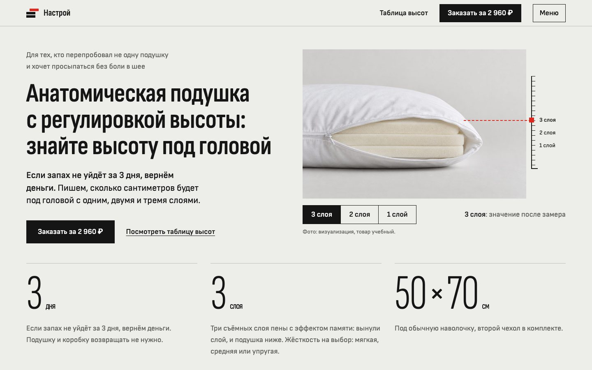
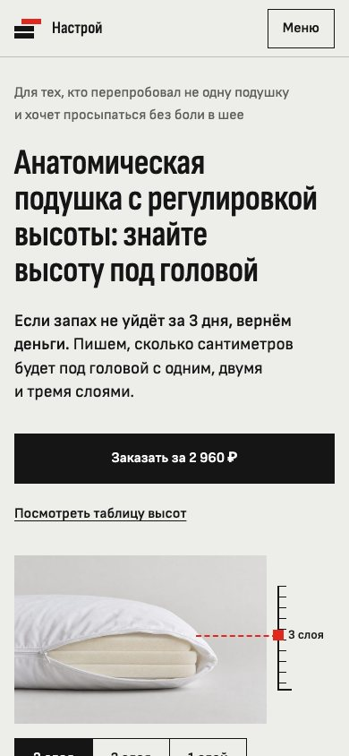
Файлы для Manus и команды
- Настрой, бриф для Manus.txtбриф целиком, вставить в Manus, 63 КБ
- mark.svgзнак A «Вынутый слой» в цветах сайта, вектор, 0 КБ
- pack_front.pngупаковка, лицевая сторона, 124 КБ
- pack_3d.pngупаковка в объёме, 1,4 МБ
- Настрой, семантическое ядро.xlsxгруппы, запросы и удалённые с причинами, 128 КБ
- Вордстат, выгрузка.xlsxвсе запросы выгрузки без дублей, 68 КБ
- nastroy_site.zipархив для Manus: готовый сайт (index.html, styles.css, app.js, img), прикладывать вместе с «подтверждаю», 619 КБ


Создай одностраничный сайт (лендинг) для бренда «Настрой», товар: регулируемая подушка «Настрой» 50×70 см. Цель сайта: заявка на покупку. Режим: Agent Mode. Язык сайта: русский. ПОРЯДОК РАБОТЫ 1. Сначала покажи структуру заголовков (H1, все H2 и H3 по блокам) и дождись моего «подтверждаю». До этого сайт не собирай. 2. Собери сайт по брифу. Тексты в кавычках «…» после двоеточия бери дословно; внутренние кавычки в них „такие“, на сайте замени их на «ёлочки». Длинные тексты дели на абзацы по 2–3 предложения. Текст блока ставь сразу под H2 одним куском: это цитируемый фрагмент на 130–170 слов, его не дели и не сокращай. Под H3 ставь то, что для них указано в брифе. Где текста нет, пиши коротко в голосе бренда из раздела 2 и без новых фактов. В числах и перед ₽, см и °C ставь неразрывный пробел. 3. Перед публикацией пройди чек-лист в конце брифа и пришли отчёт по каждому пункту: выполнено или нет и почему. 4. После отчёта дождись моего «публикуй». Только тогда опубликуй сайт и пришли ссылку. 1. КОНТЕКСТ Бренд «Настрой». Архетип: основной Славный малый (свой, честный, без сказок), дополнительный Мудрец (показывает замеры, объясняет). Позиционирование: для тех, кто перепробовал не одну подушку и хочет просыпаться без боли в шее, «Настрой» делает регулируемую подушку без химического запаха. Если запах не уйдёт за 3 дня, вернём деньги. Подушку и коробку возвращать не нужно. Под обещанием стоит доказательство: мы пишем, сколько сантиметров будет под головой с одним, двумя и тремя слоями. Товар, факты (менять нельзя): подушка классической прямоугольной формы 50×70 см, белый чехол на молнии; внутри три съёмных слоя пены с эффектом памяти; высоту меняют, вынимая слои через молнию внутреннего чехла; для сна на боку оставляют все три слоя, на спине два, на животе один; жёсткость выбирают при заказе: мягкая, средняя или упругая; в комплекте второй чехол, мешок для вынутых слоёв и инструкция; чехол стирается при 30 °C, пену стирать нельзя; подходит в обычную наволочку 50×70; цена 2 960 ₽; гарантия: «Если запах не уйдёт за 3 дня, вернём деньги. Подушку и коробку возвращать не нужно.» Значений высоты пока нет: в ячейках таблицы короткая черта «–» и скрытый для экранных дикторов текст «значение после замера», под таблицей пояснение. Приоритетный покупатель: перепробовал много подушек, сравнивает цифры, отзывы и цену, не верит рекламе («Не ведитесь на хвалебные отзывы», «Сказки, никакого проветривания за 2 недели»). Это учебный проект команды 234-6 (ВШБ ВШЭ, курс «Современные инструменты маркетинга и ИИ», 2026). Товар разработан в рамках курса, продажи не ведутся. Это нужно честно написать в подвале и в сообщении после отправки формы. 2. ГОЛОС БРЕНДА (кратко из документа Tone of Voice) Суть: говорим как покупатель, который всё проверил: просто, по делу и цифрами. Шкалы от 1 до 5: серьёзный или шутливый 2; официальный или разговорный 4 (как в отзывах, без канцелярита); уважительный или дерзкий 2 (на «вы», без поучений); сдержанный или восторженный 1 (ни одного восклицательного знака). Обращение на «вы» со строчной. Фразы в основном 6–14 слов, не длиннее 20; в абзаце до трёх предложений. Числа цифрами и с единицами: 3 дня, 4-й день, 2 960 ₽, 50×70 см; между числом и «₽» или «см» неразрывный пробел. Приёмы: признаём проблему первыми; цифра вместо прилагательного; условие вместо голого обещания («если… вернём»); показываем, как проверить самому; условия гарантии всегда рядом с обещанием. Свои слова: запах, выветрился, высота под головой, сантиметры, вынуть слой, подогнать под себя, удобно спать, держит форму, чехол, вернём деньги, подушку и коробку возвращать не нужно. Гарантия везде полной фразой: «Если запах не уйдёт за 3 дня, вернём деньги. Подушку и коробку возвращать не нужно.» Короткая форма без второго предложения только в подзаголовке первого экрана (это УТП) и в meta description. Образцы фраз: «Пена может пахнуть, это правда.»; «Вынули слой, и подушка ниже.»; «Если запах не уйдёт за 3 дня, вернём деньги. Подушку и коробку возвращать не нужно.»; «Зачёркнутой цены рядом нет.» Запрещено: «уникальный», «инновационный», «лидер рынка», «премиальное качество», «идеальный сон», «подушка мечты», «ортопедический эффект», «лечит», «от остеохондроза», «врачи рекомендуют», «гипоаллергенная», «аромат новой вещи», восклицательные знаки, длинные тире и стрелки. Исключение: эти слова можно в отрицании, как в готовых текстах ниже («Подушка не лечит»). Свою подушку не называем ортопедической. Слово «анатомическая» только как слово покупателя в поисковых текстах и в ответе «Ортопедическая или анатомическая». Боль в шее упоминаем только как желание покупателя, без обещания лечения. 3. ВИЗУАЛЬНАЯ СИСТЕМА Направление «Протокол замера»: страница как паспорт бытовой вещи. Светло, точно, спокойно, главное на странице сантиметры под головой. Фирменная деталь: линейка высоты с красной меткой у кадра подушки в профиль; переключатель «3 слоя, 2 слоя, 1 слой» двигает метку и подсвечивает строку таблицы высот. Цвета (HEX и роль), других цветов и серых не добавляй, тёмную тему не включай: - Бетон #EDEDEA: фон страницы. - Белый #FFFFFF: лист блока 4 (таблица высот), форма, поля. - Панель #DCDAD6: фон под фото и полоса заявки (цвет студийного фона кадров; серый текст на ней 4,6:1). - Графит #151515: текст, заголовки, кнопки, графитовые полосы (гарантия, блок 6, подвал); на бетоне 15,6:1, белый текст на графите 18,3:1. - Серый #5F5F5B: подписи и второстепенный текст (5,5:1 на бетоне). - Линия #BDBDB8: разделители и рамки вариантов. - Красная метка #E0281E: метка линейки и пунктир от неё к кадру, выбранный слой, номера шагов гарантии, маркеры в таблицах; деления линейки графитовые. Не больше 2 % экрана; текстом только от 24 px (4,0:1 на бетоне). - Тёмно-красный #C41E14: мелкий красный текст (заглушки «решает команда», ошибки формы), 5,05:1 на бетоне. - На графитовых полосах текст #EDEDEA и #A6A6A0 (7,5:1), линии #3A3A38. Кольцо фокуса: outline 2 px сплошной графит с отступом 3 px; на графите кольцо цвета бетона. Шрифты Google Fonts с кириллицей, одна гарнитура в трёх ширинах: Sofia Sans 400 и 600 (текст, кнопки, таблицы), Sofia Sans Condensed 600 (H1, H2, подписи групп вопросов и таблиц, цитаты покупателей, номера шагов гарантии в размере H2, слово «Настрой»; 400 у единиц рядом с крупными числами), Sofia Sans Extra Condensed 300 (крупные числа: 3 дня, 3 слоя, 50×70 см, 500 из 850, 2 960 ₽, 7 065). Размеры, компьютер / телефон: H1 64 / 40 px, H2 48 / 32 px, H3 22 / 19 px, текст 18 / 16 px с межстрочным 1,55, подписи 14 px, крупные числа 120 / 64 px. Цифры в таблицах с font-variant-numeric: tabular-nums. Знака ₽ в Sofia Sans нет: подключи его отдельной ссылкой из Roboto и Roboto Condensed с параметром text=₽ и поставь эти шрифты вторыми в стеке. Изображения: файлы сайта (index.html, styles.css, app.js, папка img) пришлю архивом. Фото сгенерированы в ChatGPT одной студийной серией: подушка на бесшовном светло-сером фоне, мягкий свет слева, без интерьера и без людей, кроме рук. На странице подпись «Фото: визуализация, товар учебный.». Новые изображения не генерируй, текст поверх фото не ставь. Ошибки в форме: текст тёмно-красным #C41E14 под полем, начинается со слова «Ошибка:», поле получает рамку того же цвета. 3А. ДИЗАЙН (дополняет раздел 3; файлы сайта в архиве собраны по этим правилам) - Сетка: контейнер до 1312 px, поля 16 px на телефоне и до 64 px на компьютере, отступы кратны 4 px; колонки равные: две по половине или три по трети, промежуток до 32 px. Углы прямые у всего: кнопок, фото, полей, листов. Без теней, градиентов, значков в кружках, подписей капсом, моноширинного шрифта, нумерации 01/02/03 и разделителей «·». - Шапка липкая, на бетоне с линией снизу: знак (три пласта, верхний выдвинут, красный) и слово «Настрой», ссылка «Таблица высот», графитовая кнопка «Заказать за 2 960 ₽», кнопка «Меню» со ссылками на блоки. На телефоне знак и «Меню». - Первый экран: слева строка для кого, H1 в три строки, подзаголовок (первое предложение жирным), кнопка и ссылка «Посмотреть таблицу высот»; справа кадр подушки в профиль с открытой молнией, рядом с кадром полоса с линейкой высоты и подписями слоёв (подписи не на фото); под кадром переключатель слоёв и строка «3 слоя: значение после замера». Ниже три крупных числа через тонкие линии: «3 дня» с полной гарантией, «3 слоя» с описанием слоёв и жёсткости, «50×70 см» с комплектом. При 1440×900 подушка, H1 и кнопка видны без прокрутки. - Графитовая полоса гарантии: «Как вернуть деньги за запах», три шага с красными номерами, справа две плашки доказательств с линией сверху. - Блок 1 (продолжение): кадр с руками слева, справа H2 и текст абзацами по 2–3 предложения, под ними три H3 колонками. Блок 2: текст, кадр трёх подушек разной высоты на всю ширину с подписями «3 слоя», «2 слоя», «1 слой» под подушками, затем три H3 колонками. Блок 3: текст, три H3 колонками, затем три «Для тех, кто…» колонками. - Блок 4 на белом листе: слева H3 про изменение высоты (переключатель, схема слоёв в разрезе, таблица высот) и под ним H3 про наполнитель и жёсткость (варианты строками); справа H3 про цену: цена крупно, кадр комплекта сверху, комплект списком и кнопка. Пустые ячейки таблицы с короткой чертой «–», под таблицей «Значения появятся после замера образца под нагрузкой.» и заглушка тёмно-красным. - Блок 5: три H3 колонками, в третьей «7 065» крупно и таблица «Жалоба в отзывах» и «Ответ „Настроя“»; ниже «500 из 850» крупно с красной полосой доли и две цитаты покупателей. Блок 6 на графите: две H3 колонками (шаги гарантии с красными номерами и высота под головой), ниже H3 со сравнением и таблица с красной меткой у «Настроя». Блок 7: вопросы строками с плюсом, раскрываются по нажатию на всю строку. Форма на сером фоне предметной съёмки: слева H2 и кадр подушки, справа белый лист с полями. Подвал на графите. - Движение: только переход метки линейки и слоёв схемы за 350 мс; при prefers-reduced-motion без переходов. Без параллакса, каруселей и прелоадера. - Телефон: один столбец, кнопка первого экрана на всю ширину, числа и плашки столбиком, таблицы во всю ширину без горизонтальной прокрутки. Проверь ширины 320, 390, 768 и 1440 px. 4. СТРУКТУРА СТРАНИЦЫ ПО ПОРЯДКУ Тексты по блокам даны внутри структуры. Шапка: первая ссылка «Перейти к содержимому» (видна при фокусе); логотип-ссылка с именем «Настрой, на главную»; ссылка «Таблица высот» и кнопка «Заказать за 2 960 ₽»; остальные ссылки на блоки («Как устроена», «Гарантия», «Вопросы») в меню по кнопке «Меню» и в подвале. Блок 1. Первый экран и H2 «Подушка с регулировкой высоты: что это за товар» - Ключевые слова: подушка с регулировкой высоты (134), что значит анатомическая подушка (117), подушка анатомическая для сна что это значит (42), анатомическая подушка с регулировкой высоты (11, ядро команды, общее число по затравке, 19.09–19.10), подушка с регулируемой высотой (128), подушка регулируемая по высоте (55). - Строка над заголовком: «Для тех, кто перепробовал не одну подушку и хочет просыпаться без боли в шее» - H1: «Анатомическая подушка с регулировкой высоты: знайте высоту под головой» - Подзаголовок: «Если запах не уйдёт за 3 дня, вернём деньги. Пишем, сколько сантиметров будет под головой с одним, двумя и тремя слоями.» - Строка о товаре: «Три съёмных слоя пены с эффектом памяти: вынули слой, и подушка ниже. Жёсткость на выбор: мягкая, средняя или упругая. Размер 50×70 см под обычную наволочку, второй чехол в комплекте.» - Кнопка: «Заказать за 2 960 ₽» (ведёт к форме заявки, высота от 48 px). Вторая кнопка-ссылка: «Посмотреть таблицу высот» (ведёт к таблице). - Три доказательства под кнопками, жирными подписями без тегов заголовков (для экранных дикторов только у подписи гарантии role heading с aria-level 2): 1) Блок гарантии на графитовой полосе (якорь «Гарантия»), подпись «Как вернуть деньги за запах»: «Пена может пахнуть: на запах жалуются в 500 из 850 плохих отзывов о регулируемых подушках. 1. На 4-й день после получения понюхайте подушку. 2. Если химический запах остался, напишите нам [канал связи и срок обращения: решает команда]. 3. Вернём 2 960 ₽ [способ и срок возврата: решает команда]. Подушку и коробку возвращать не нужно.» 2) Плашка, подпись «Сантиметры под нагрузкой»: «19 октября 2026 года мы проверили 17 карточек конкурентов. Ни в одной не указана высота под нагрузкой. У нас она будет для одного, двух и трёх слоёв.» 3) Плашка, подпись «Высота меняется слоями»: «Вынули слой, и подушка ниже. Крошку пересыпать не нужно.» - Изображение: подушка в профиль с открытой молнией и тремя слоями. - После первого экрана H2 «Подушка с регулировкой высоты: что это за товар» и под ним текст. - Текст под первым экраном: «Это анатомическая подушка „Настрой“ 50×70 см с регулировкой высоты и эффектом памяти. Анатомической называют подушку, которая подстраивается под положение головы и шеи: так работает пена с эффектом памяти. Внутри три съёмных слоя этой пены. Чтобы подушка стала ниже, расстегните верхний чехол и молнию внутреннего, затем выньте слой: пересыпать ничего не нужно. Вынутые слои хранятся в мешке из комплекта. Жёсткость выбираете при заказе: мягкая, средняя или упругая. Чехол снимается и стирается при 30 °C, второй чехол лежит в коробке. Подушка подходит в обычную наволочку 50×70 см. Главное обещание про запах. Если запах не уйдёт за 3 дня, вернём деньги. Подушку и коробку возвращать не нужно. Второе обещание про высоту. Для одного, двух и трёх слоёв мы пишем, сколько сантиметров будет под головой. Значения появятся в таблице после замера образца. Ортопедической мы подушку не называем и лечения не обещаем. Цена 2 960 ₽.» - H3 и короткий текст под каждым: «Высота, которую можно изменить»: «Внутри три съёмных слоя пены с эффектом памяти. Вынули слой, и подушка ниже. Вернули, и она снова выше.» «Фактическая высота под головой»: «Для одного, двух и трёх слоёв пишем два значения: под головой и без нагрузки.» «Гарантия, если химический запах не исчезнет за 3 дня»: «Если запах не уйдёт за 3 дня, вернём деньги. Подушку и коробку возвращать не нужно.» Блок 2. H2 «Как выбрать высоту анатомической подушки» - Ключевые слова: как выбрать высоту анатомической подушки (38), как измерить высоту подушки для себя (22, ядро команды), подушка слишком низкая (48, ядро команды, общее число по затравке, 19.09–19.10), подушка слишком высокая что делать (12, ядро команды, общее число по затравке, 19.09–19.10), неудобно спать на анатомической подушке (1, ядро команды, общее число по затравке, 19.09–19.10), какой высоты должна быть подушка (808), высокая подушка (6 563). - H3 и короткий текст под каждым: «Если подушка слишком высокая или низкая»: «Если голове высоко, выньте слой. Если низко, верните его на место. Крошку пересыпать не нужно.» «Высота под головой с одним, двумя и тремя слоями»: «Чем меньше слоёв, тем ниже подушка. Для каждого варианта пишем два значения: под головой и без нагрузки.» «Что уточнить при неудобстве и дискомфорте»: «Подушка не лечит, и мы этого не обещаем. Если шея болит постоянно, покажитесь врачу. Если неудобно первые ночи, попробуйте другую высоту.» - Изображение: общий кадр трёх подушек с тремя, двумя и одним слоем; под каждой подушкой подпись без тега заголовка: «3 слоя», «2 слоя», «1 слой». - Текст: «Высота подушки зависит от позы сна и ширины плеч. Если прошлая подушка казалась слишком высокой или слишком низкой, сначала подберите высоту под головой. У „Настроя“ она меняется слоями. Три съёмных слоя пены с эффектом памяти дают три высоты: вынули слой, и подушка ниже. На боку между головой и матрасом остаётся ширина плеча, поэтому слоёв нужно больше. Для сна на боку оставьте все три слоя, на спине два, на животе один. Это отправная точка, дальше подгоняете высоту под себя за несколько ночей. Сколько сантиметров будет под головой, мы напишем для каждого варианта. В таблице будут два значения: под нагрузкой и без неё. Высота без нагрузки нужна, чтобы сравнить её с высотой в карточках других продавцов. Под головой пена сжимается, поэтому важнее значение под нагрузкой. Значения появятся после замера образца. Если по утрам неудобно, попробуйте другую высоту: верните слой или выньте ещё один.» Блок 3. H2 «Как выбрать анатомическую подушку под свой случай» - Ключевые слова: как выбрать анатомическую подушку (347), подушка для поддержки шеи (173), анатомическая подушка для сна на боку (57), анатомическая подушка для сна на спине (27), как выбрать подушку для сна на боку (51), как выбрать подушку для пожилого человека (4, ядро команды, общее число по затравке, 19.09–19.10), подушка для сна на боку (1 394), подушка для сна на спине (839), подушка для сна на животе (742). - H3 и короткий текст под каждым: «Для сна на боку и на спине»: «На боку оставьте три слоя, на спине два. Если спите то так, то так, начните с двух и добавьте третий, если голове низко.» «Привычная подушка и новая настройка»: «Начните с числа слоёв для своей позы сна, даже если прошлая подушка была выше или ниже. Если первые ночи неудобно, выньте или верните слой.» «Если выбираете подушку для другого человека»: «Тот, кому дарите, сам подгонит высоту: вынет один слой или два. Если запах не уйдёт за 3 дня, вернём деньги. Подушку и коробку возвращать не нужно.» - Текст: «Анатомическую подушку выбирают по позе сна, привычкам и нужной жёсткости. На боку между головой и матрасом остаётся ширина плеча, поэтому оставьте все три слоя. На спине подушка нужна ниже: выньте один слой. На животе голова почти лежит на матрасе, поэтому оставьте один слой. Если спите то на боку, то на спине, начните с двух слоёв. Если подушки обычно кажутся вам жёсткими, выбирайте мягкую. Если голова проваливается, выбирайте упругую. Если не знаете, берите среднюю. Жёсткость выбирают один раз, при заказе, а высоту можно менять дома сколько угодно. Размер у всех вариантов один: 50×70 см. Если покупаете для семьи или в подарок, каждый настроит высоту под себя. Вынутые слои хранятся в мешке из комплекта и не теряются. Если чехол часто в стирке, второй чехол уже в коробке. Сколько сантиметров будет под головой с одним, двумя и тремя слоями, покажет таблица высот после замера образца.» - Три карточки с жирной подписью (не заголовком): «Для тех, кто устал пересыпать крошку»: «Высота меняется слоями: вынули слой, и подушка ниже. Слои вынимаются целиком.» «Для тех, кому подушка то „кирпич“, то „как блин“»: «Жёсткость выбираете при заказе: мягкая, средняя или упругая. Мягкая, если подушки обычно кажутся вам жёсткими, упругая, если голова проваливается.» «Для тех, у кого чехол всегда в стирке»: «Второй чехол в комплекте: один на подушке, другой в стирке. Чехол снимается и стирается при 30 °C.» Блок 4. H2 «Сколько стоит анатомическая подушка и как настроить высоту» (якорь «Как устроена») - Ключевые слова: сколько стоит анатомическая подушка (40), купить анатомическую подушку для сна (258), какой наполнитель лучше для анатомической подушки (14), как выбрать жесткость подушки (69, ядро команды, общее число по затравке), как регулировать высоту подушки (13, ядро команды, общее число по затравке, 19.09–19.10), регулируемая подушка для сна (52, ядро команды, общее число по затравке, 19.09–19.10), подушка с эффектом памяти (6 552), анатомическая подушка (18 345), анатомическая подушка 50х70 (547). - H3 и что под ними: «Как изменить высоту подушки»: «Выньте слой или верните его на место, инструменты не нужны. Переключатель ниже покажет схему и строку таблицы для каждого варианта.» «Наполнитель и жёсткость: что выбрать»: «Наполнитель: три слоя пены с эффектом памяти. Жёсткость выбираете при заказе.» «Цена, комплектация и условия заказа»: «Зачёркнутой цены рядом нет. [условия оплаты и доставки: решает команда]» - Под «Как изменить высоту подушки»: переключатель «3 слоя, 2 слоя, 1 слой», схема слоёв в разрезе (линии, цвета палитры) и таблица высот (якорь «Таблица высот»): настоящая таблица HTML с подписью «Сколько сантиметров под головой», заголовками строк «3 слоя», «2 слоя», «1 слой» и столбцов «Высота под головой, см» и «Высота без нагрузки, см». Во всех ячейках со значениями «–» (короткое тире: значения ещё нет), под таблицей пометка: «Значения появятся после замера образца.» и строка «[способ замера и фото замера: решает команда]». Цифры не придумывай. - Под «Наполнитель и жёсткость: что выбрать»: настоящие радиокнопки в группе с подписью «Жёсткость» (мягкая, средняя, упругая) с подсказкой под каждой: «если подушки обычно кажутся жёсткими», «если не знаете, какую выбрать», «если голова проваливается»; выбранный вариант отмечен радиокнопкой, красной меткой и словом «выбрано». - Под «Цена, комплектация и условия заказа»: цена крупно, кадр комплекта сверху, комплект списком: подушка, три слоя, второй чехол, мешок для слоёв, инструкция; кнопка «Заказать за 2 960 ₽». - Текст: «Подушка „Настрой“ стоит 2 960 ₽. Зачёркнутой цены рядом нет. В комплекте регулируемая подушка 50×70 см с тремя съёмными слоями пены с эффектом памяти. Ещё в коробке второй чехол, мешок для вынутых слоёв и инструкция. Чехол снимается и стирается при 30 °C. Жёсткость выбираете при заказе: мягкая, средняя или упругая. Высоту настраиваете дома без инструментов. Расстегните верхний чехол и молнию внутреннего, выньте слой и застегните обе молнии. Чтобы подушка стала выше, верните слой на место. Пересыпать наполнитель не нужно: слои вынимаются целиком. В таблице высот будут два значения для одного, двух и трёх слоёв. Первое покажет высоту под головой, то есть под нагрузкой. Второе покажет высоту подушки на столе: её можно сравнить с высотой в карточках других продавцов. Значения появятся после замера образца. Если запах не уйдёт за 3 дня, вернём деньги. Подушку и коробку возвращать не нужно.» Блок 5. H2 «Отзывы об анатомической подушке и опыт использования» - Ключевые слова: анатомическая подушка отзывы (1 336), анатомическая подушка для сна отзывы (160), как спать на анатомической подушке (136), анатомическая подушка отзывы покупателей (80, ядро команды, общее число по затравке, 19.09–19.10), регулируемая подушка отзывы (12, ядро команды, общее число по затравке, 19.09–19.10), ортопедическая подушка отзывы (2 328), подушка с эффектом памяти отзывы (257). - H3 и что под ними: «Поза сна и выбранная настройка в отзыве»: «Высота зависит от позы сна. Поэтому в отзыве попросим написать, в какой позе вы спите, сколько слоёв оставили и сколько ночей спали.» «Как спать на анатомической подушке»: «Подбирайте высоту несколько ночей: на боку три слоя, на спине два, на животе один. Если голове низко, верните слой, если высоко, выньте ещё один.» «Что действительно подтверждено опытом покупателей»: крупно «7 065» и текст «Отзывы о регулируемых подушках на Ozon и Wildberries: чаще всего в плохих отзывах жалуются на запах, высоту и жёсткость.» - Под «Что действительно подтверждено опытом покупателей» таблица из двух колонок без стрелок: «Жалоба в отзывах» (химический запах; высота не та, что в описании; жёсткость не подошла) и «Ответ „Настроя“» (гарантия по запаху; таблица сантиметров под головой после замера; выбор жёсткости при заказе). - Крупно «500 из 850» с полосой доли и подписью «В 500 из 850 плохих отзывов о регулируемых подушках жалуются на запах». - Можно добавить 1–2 цитаты покупателей с подписью мелким шрифтом «из отзывов о регулируемых подушках на Ozon и Wildberries, не о нашей подушке»: «Сказки, никакого проветривания за 2 недели»; «Это уже 150-я (условно) моя подушка». - Текст: «Отзывов о „Настрое“ пока нет: подушка ещё не продаётся, поэтому звёзд и рейтингов на сайте нет. Когда мы придумывали подушку, мы собрали 7 065 отзывов о регулируемых подушках на Ozon и Wildberries. Ещё мы проверили 17 карточек конкурентов. Из отзывов взяли три жалобы, на которые отвечает „Настрой“. Это химический запах, высота не та, что в описании, и жёсткость, которая не подошла. На запах жалуются в 500 из 850 плохих отзывов с оценкой от 1 до 3. На запах отвечает гарантия, на высоту таблица сантиметров под головой, на жёсткость выбор при заказе. Покупатели в отзывах пишут как испытатели: сколько дней проветривали, сколько наполнителя убрали, сколько сантиметров осталось. Поэтому и мы говорим цифрами. Слов „идеальная“ и „уникальная“ у нас нет. Когда появятся отзывы о „Настрое“, попросим рассказать о позе сна, о выбранных слоях и о том, пахла ли подушка.» - Не выдумывай отзывы, звёзды и рейтинги. Блок 6. H2 «Какая анатомическая подушка лучше: что можно сравнить» - Ключевые слова: анатомическая подушка какая лучше (329), анатомическая или ортопедическая подушка (351), возврат анатомической подушки (29), какую анатомическую подушку лучше купить для сна (7, ядро команды), анатомическая подушка пахнет (22, ядро команды, общее число по затравке, 19.09–19.10), какие подушки лучше (30 883), какую подушку лучше выбрать (3 473), на какой подушке лучше спать (1 088). - H3 и что под ними: «Возврат денег при сохраняющемся химическом запахе»: «Если запах не уйдёт за 3 дня, вернём деньги. Подушку и коробку возвращать не нужно.» «Фактическая высота под головой»: «В 17 проверенных карточках высоты под головой нет. У „Настроя“ будут два значения для каждого числа слоёв: под головой и без нагрузки.» «Сравнение на одинаковых основаниях»: «Два признака, которые можно проверить в любой карточке: гарантия по запаху и высота под головой.» - Под «Возврат денег при сохраняющемся химическом запахе»: те же три шага, что в блоке гарантии первого экрана, с теми же заглушками, только в шаге 3 без фразы «Подушку и коробку возвращать не нужно.»: она уже стоит в тексте под H3. - Под «Сравнение на одинаковых основаниях»: таблица из двух строк без названий конкурентов: «Гарантия возврата денег из-за запаха»: «Настрой» есть, 3 дня; в 17 проверенных карточках нет ни в одной. «Высота под головой в сантиметрах»: «Настрой» таблица для 1, 2 и 3 слоёв (значения после замера образца); в 17 проверенных карточках нет ни в одной. Подпись: «Проверка 19.10.2026». - Текст: «Сравнивать подушки удобно по тому, что можно проверить: по высоте под головой, условиям возврата и цене. 19 октября 2026 года мы открыли полные карточки 17 регулируемых и анатомических подушек известных брендов и продавцов маркетплейсов. Ни в одной нет гарантии возврата денег из-за запаха. Ни в одной не указана высота под нагрузкой, то есть под головой. Где высота указана, она для подушки на столе, а под головой пена сжимается. В „Настрое“ будут и гарантия по запаху, и высота под головой. Если запах не уйдёт за 3 дня, вернём деньги. Подушку и коробку возвращать не нужно. Сантиметры под головой для одного, двух и трёх слоёв появятся в таблице после замера образца. Остальное у нас похоже на других: съёмные слои, выбор жёсткости и второй чехол встречаются и у конкурентов. Ортопедической мы подушку не называем и лечения не обещаем. Цена 2 960 ₽, зачёркнутой цены рядом нет.» - Названия брендов конкурентов на сайте не пиши. Блок 7. H2 «Вопросы об анатомической подушке: высота, запах и уход» (якорь «Вопросы») - Ключевые слова: можно ли стирать анатомическую подушку (102), после ортопедической подушки болит шея (145, ядро команды), как уменьшить высоту ортопедической подушки (20, ядро команды), как привыкнуть к анатомической подушке (1, ядро команды, общее число по затравке, 19.09–19.10), как убрать запах с подушки (187), можно ли стирать подушку с эффектом памяти (178), чем отличается анатомическая подушка от ортопедической (511). - H3: «Высота и регулировка», «Запах, возврат и привыкание», «Уход и характеристики» - Вопросы внутри групп не заголовки, а раскрывающиеся кнопки (details и summary или button с aria-expanded). - Текст: «Перед покупкой анатомической подушки чаще всего спрашивают про высоту, запах и уход. Ответы ниже собраны по этим трём темам. Высоту у „Настроя“ меняют слоями. Внутри три съёмных слоя пены с эффектом памяти: на боку оставьте три, на спине два, на животе один. Если голове высоко, выньте слой, если низко, верните. Первые ночи на такой пене бывают непривычными, так пишут покупатели. Подбирайте высоту несколько ночей. Сантиметры под головой для каждого варианта будут в таблице высот после замера образца. Пена может пахнуть, поэтому у нас есть гарантия. Если запах не уйдёт за 3 дня, вернём деньги. Подушку и коробку возвращать не нужно. Чехол снимается и стирается при 30 °C, второй чехол лежит в коробке. Пену стирать нельзя. Жёсткость выбираете при заказе: мягкая, средняя или упругая. Подушка стоит 2 960 ₽. Ортопедической мы её не называем и лечения не обещаем.» Группа «Высота и регулировка»: - «Как выбрать высоту анатомической подушки?»: «Высота зависит от позы сна и ширины плеч. На боку оставьте три слоя, на спине два, на животе один. Сколько сантиметров будет под головой в каждом случае, покажет таблица высот после замера образца.» - «Где посмотреть фактическую высоту под головой?»: «В таблице высот: к ней ведёт кнопка „Посмотреть таблицу высот“ на первом экране. Для одного, двух и трёх слоёв там будут два значения: под головой и без нагрузки. Значения появятся после замера образца.» - «Как изменить высоту подушки?»: «Расстегните верхний чехол и молнию внутреннего, выньте слой и застегните обе молнии. Чтобы подушка стала выше, верните слой. Вынутые слои хранятся в мешке из комплекта.» Группа «Запах, возврат и привыкание»: - «Что делать, если химический запах не исчезает?»: «Пена может пахнуть, это правда. Если запах не уйдёт за 3 дня, вернём деньги. Подушку и коробку возвращать не нужно. Как получить деньги, написано в разделе „Как вернуть деньги за запах“ под первым экраном.» - «Нужно ли возвращать подушку, чтобы получить деньги за запах?»: «Нет. Подушка и коробка остаются у вас, а деньги мы возвращаем.» - «Можно ли вернуть подушку по другим причинам?»: «Наша гарантия касается запаха. Если запах не уйдёт за 3 дня, вернём деньги. Подушку и коробку возвращать не нужно. Про другие причины возврата: [условия возврата по другим причинам: решает команда].» - «Сколько времени нужно, чтобы привыкнуть к подушке?»: «Первые ночи на пене с эффектом памяти бывают непривычными, так пишут покупатели. Подбирайте высоту несколько ночей. Если голове низко, верните слой, если высоко, выньте ещё один.» - «Что означает дискомфорт после смены подушки?»: «Подушка не лечит, и мы этого не обещаем. Если шея болит постоянно, покажитесь врачу. Если неудобно первые ночи, попробуйте другую высоту: верните слой или выньте ещё один.» Группа «Уход и характеристики»: - «Можно ли стирать анатомическую подушку?»: «Чехол снимается и стирается при 30 °C, второй чехол в комплекте. Пену стирать нельзя.» - «Можно ли выбрать жёсткость?»: «Да, при заказе: мягкая, средняя или упругая. Мягкая, если подушки обычно кажутся вам жёсткими, упругая, если голова проваливается. Если не знаете, выбирайте среднюю.» - «Какой наполнитель и есть ли сменный чехол?»: «Внутри три съёмных слоя пены с эффектом памяти. Второй чехол в комплекте: один на подушке, другой в стирке.» - «Ортопедическая или анатомическая: в чём разница?»: «Анатомической называют подушку, которая подстраивается под положение головы и шеи: так работает пена с эффектом памяти. Ортопедической мы свою подушку не называем, потому что подтвердить это слово нам нечем. Мы говорим о том, что можно проверить: о высоте, жёсткости и запахе.» - «Сколько стоит подушка?»: «2 960 ₽, зачёркнутой цены рядом нет. В комплекте подушка 50×70 см с тремя съёмными слоями, второй чехол, мешок для слоёв и инструкция.» Форма заявки (H2 «Заявка на подушку „Настрой“», якорь кнопок «Заказать»): поля «Имя», «Телефон или почта», «Жёсткость» (радиокнопки: мягкая, средняя, упругая), «Сколько подушек» (по умолчанию 1); над полями строка «Все поля обязательные.»; у каждого поля видимая подпись над полем, под подписью «Телефон или почта» подсказка «Телефон из 10–11 цифр или почта»; autocomplete для имени и контакта, ошибка текстом рядом с полем. Кнопка «Отправить заявку». После отправки показать: «Спасибо. Это учебный проект команды 234-6: заявки никуда не отправляются и не хранятся.» Данные никуда не передавай и не сохраняй. Подвал: логотип; «Учебный проект команды 234-6, ВШБ ВШЭ, курс „Современные инструменты маркетинга и ИИ“, 2026. Товар разработан в рамках курса, продажи не ведутся.»; ссылки на блоки. 5. SEO И ТЕХНИЧЕСКИЕ ТРЕБОВАНИЯ - title: «Анатомическая подушка с регулировкой высоты | Настрой» - description: «Анатомическая подушка с регулировкой высоты. Если запах не уйдёт за 3 дня, вернём деньги. Три съёмных слоя пены с эффектом памяти, таблица высот после замера.» - Один H1, дальше H2 и H3 строго по структуре, уровни не перепрыгивают: в блоке 1 под H1 первый экран без подзаголовков (подписи доказательств сделаны жирным текстом), затем H2 блока 1 и три его H3. Ориентиры header, nav, main, footer. - Разметка schema.org в JSON-LD: Organization (name «Настрой», logo); Product (name «Регулируемая подушка „Настрой“ 50×70», brand «Настрой», description «Регулируемая подушка 50×70 с эффектом памяти: три съёмных слоя, жёсткость на выбор. Если запах не уйдёт за 3 дня, вернём деньги. Подушку и коробку возвращать не нужно.», material «пена с эффектом памяти»; без Offer, aggregateRating и review: продажи не ведутся, отзывов нет); FAQPage с вопросами и ответами блока 7 дословно. - alt-тексты до 125 знаков, по содержанию, без слов «фото» и «картинка»: profile «Подушка „Настрой“ в профиль: чехол расстёгнут, внутри три слоя пены с эффектом памяти»; hands «Руки вынимают верхний слой пены из подушки, два слоя остаются внутри»; three_heights «Три подушки в ряд: с тремя, двумя и одним слоем, каждая следующая ниже»; flatlay «Комплект сверху: чехол, три слоя пены, второй чехол и мешок для слоёв»; packshot «Белая регулируемая подушка 50×70 на светлом фоне»; знак рядом со словом «Настрой» в шапке скрыт от экранных дикторов (alt=""), декоративные текстуры и линии тоже alt="". - Адаптивная вёрстка: от 320 px до компьютера, без горизонтальной прокрутки при масштабе до 400%; плашки и таблица высот на узком экране встают в столбец; кнопка «Заказать за 2 960 ₽» видна на первом экране телефона. Не запрещай масштабирование в meta viewport. - Доступность WCAG 2.2 AA: <html lang="ru">; размеры текста в rem; зона нажатия кнопок, радиокнопок и ссылок не меньше 44×44 px, между соседними от 8 px (кнопки переключателя слоёв, строки вариантов жёсткости и строки вопросов стоят вплотную, у каждой зона нажатия от 44 px); видимое кольцо фокуса из раздела 3 у всех интерактивных элементов, без outline: none; липкая шапка не закрывает элемент в фокусе; смысл не передаётся только цветом; анимации отключаются при prefers-reduced-motion, без каруселей с автопрокруткой и автозапуска видео. - Изображения сжатые, с заданными размерами, чтобы страница не прыгала при загрузке. 6. ОГРАНИЧЕНИЯ Используй только факты из этого брифа. Не выдумывай отзывы, рейтинги, звёзды, цены, скидки, сроки, гарантии, сертификаты, кейсы, «одобрено врачами», числа замеров и названия материалов. Если данных нет, оставь заглушку в квадратных скобках с пометкой, как в брифе. Не называй подушку ортопедической, не обещай лечения, не пиши названия брендов конкурентов. Не придумывай контакты, реквизиты, адрес, политику конфиденциальности, доставку, оплату, срок службы и характеристики, которых нет в брифе (толщину слоёв, плотность, вес, страну производства). Ключевые слова со словом «ортопедическая» только ориентир: в тексты, заголовки, alt и мета-теги о «Настрое» их не вставляй, кроме ответа «Ортопедическая или анатомическая». Не используй восклицательные знаки, длинные тире и стрелки. Не добавляй блоки, которых нет в структуре, кроме шапки, формы и подвала. 7. РЕЗУЛЬТАТ Опубликованный одностраничный сайт и ссылка. Перед сборкой покажи структуру заголовков и дождись подтверждения. Перед публикацией пришли отчёт по чек-листу и дождись моего «публикуй». ЧЕК-ЛИСТ ПЕРЕД ПУБЛИКАЦИЕЙ Содержание: голос соответствует разделу 2; УТП и доказательства совпадают с брифом; цены и условия только из брифа; гарантия везде одной формулировкой; нет выдуманных отзывов, кейсов, гарантий, сертификатов и значений высоты; заглушки на месте и помечены. Структура и SEO: один H1, дальше H2 и H3 по структуре, в каждом блоке не больше трёх H3; заголовки содержат запросы и читаются естественно; есть title, description, блок вопросов и ответов, JSON-LD трёх типов; у всех изображений alt. Внешний вид и работа: цвета и шрифты из раздела 3; текст на кнопках белый; на первом экране кадр подушки с линейкой высоты, переключатель слоёв двигает метку и подсвечивает строку таблицы; кнопки и якорные ссылки работают; форма показывает сообщение после отправки; страница проходится клавишей Tab с видимым фокусом; сайт открывается без регистрации; проверен на телефоне и компьютере, в двух браузерах.
Для сдачи · слайд 40
Журнал работы с ИИ
| № | Что поручили ИИ | Что оказалось неверным | Что исправили вручную |
|---|---|---|---|
| 1 | Codex (GPT-6-Astra, отдельный чат без памяти): придумать 60 названий бренда в шести направлениях, выбрать топ-10 и оценить по пяти критериям. | Оценки поставлены без проверки, не занято ли название; рекомендация «Мерно» звучит скорее как наречие, чем как название вещи. | Свели варианты Codex с 50 своими, разобрали 60 названий брендов рынка (72% латиницей, 23% со словом «сон»), проверили шорт-лист на Яндекс Маркете и в поиске. Название выбрали из шорт-листа: «Настрой». |
| 2 | Claude (промпт 2): собрать документ Tone of Voice по цитатам сегментов и УТП. | Тест «вслух» (отдельный агент-редактор) нашёл 23 фразы из 43 с проблемами: «отвечаем деньгами» трижды, «жёсткость выбираете сами» (звучит так, будто её меняют дома), «на животе два» (двусмысленно), «перемерить линейкой» (линейка покажет высоту без нагрузки, а мы обещаем высоту под головой). | Переписали ответы на возражения и образцы, гарантию свели к одной формулировке: «Если запах не уйдёт за 3 дня, вернём деньги. Подушку и коробку возвращать не нужно.» |
| 3 | Синтетические клиенты семинара 4 (GPT-6-Luna, 12 чатов): выбрать из пар «наша фраза / штамп категории», что звучит чужим, чему не верится, что читать дальше. | Наш скрипт подсчёта сначала не узнал жирный шрифт в таблице одной персоны и показал 11 из 12 вместо 12 из 12. По существу: в 8 из 12 ответов персоны не поверили гарантии: в 4 хотели знать условия и порядок возврата, в 2 сомневались, что гарантия исключает запах, в 2 смутил срок 3 дня, а одной персоне возврат денег без возврата подушки показался подозрительным. Проверка шла на первой редакции фраз, до теста «вслух». | Исправили разбор ответов. Под обещанием на первом экране добавили блок «Как вернуть деньги за запах» с тремя шагами, в вопросах объяснили, почему подушку не нужно возвращать. |
| 4 | Codex (GPT-6-Astra, промпт 7): очистить и сгруппировать 1 393 запроса из Вордстата. | Суммы и полнота верны, но «подушка для шеи» (13 171 в месяц) отнесена к подушкам для сна, хотя выдача Яндекса смешанная: подушки для сна вперемешку с дорожными и автомобильными; удалён запрос «подушка с регулируемой жёсткостью», хотя жёсткость на выбор это наш модуль; суммы не учитывают, что Вордстат считает длинные запросы внутри коротких. | Проверили выдачу и сохранили скриншот, вынесли «подушку для шеи» и все её варианты без «для сна» (21 запрос) в неоднозначные, вернули запрос про жёсткость, удалили 9 сомнительных запросов (модели продавцов, «как в отеле», «маленькая», «разъемная»), добавили столбец «сумма без вложенных запросов». Сверили наш сбор с ядром команды: за 08.09–07.10.2026 частоты совпали во всех 233 общих фразах. Наша сверка правилами по корням слов ошиблась сама («производители» попали в «водитель», «подойдёт» в «детские»), поэтому основой взяли группы ИИ. |
| 5 | Claude (промпт 8 и ECC seo): структура страницы с цитируемыми фрагментами по 130–170 слов. | Заявленная длина фрагментов (139–150 слов) не совпала с подсчётом программы (114–135). | Дописали фрагменты фактами из наших данных, длину теперь считает программа: 136–150 слов. |
| 6 | ECC marketing-agent: проверить тексты первого экрана как конверсионщик. | Строка «Чтобы просыпаться без боли в шее» читается как обещание лечить (то же отметил тест «вслух»); условия гарантии стояли ниже кнопки; бирка про запах дублировала подзаголовок. | Строка стала «Для тех, кто перепробовал не одну подушку и хочет просыпаться без боли в шее»; блок условий поднят выше бирок; бирку про запах убрали, цена стоит в кнопке, бирки теперь «Сантиметры под нагрузкой» и «Высота меняется слоями». |
| 7 | Синтетические клиенты (промпт Ж, 30 чатов): выбрать между И3 и правкой «с одним, двумя и тремя слоями» вместо «при полном и уменьшенном наполнении». | Правило, записанное до запуска, выполнено (приоритетный сегмент 3 из 5, всего 15 из 30), но первый по порядку заголовок выбрали 25 раз из 30: персоны выбирают по месту в списке. | Правку приняли как равноценную по доводам текста (слово «слой» из словаря бренда), оговорку записали в материалы. |
| 8 | ECC a11y-architect: проверить палитру и шрифты по WCAG 2.2 AA. | Наши контрасты верны (расхождение не больше 0,005), но нашлись ловушки: льняной текст на кнопке дал бы 4,32:1, ссылки одним цветом отличаются от текста на 2,46:1, шалфей на графите 2,56:1. | Добавили в бриф белый текст кнопок, подчёркнутые ссылки, запрещённые пары на тёмных полосах, кольцо фокуса и типографскую шкалу. |
| 9 | Claude (HTML и CSS): нарисовать упаковку; Canva AI: кадры товара по промпту 5Б. | В первой версии крышка коробки в 3D вышла зеркальной, а знак из трёх полосок читался как кнопка меню. Canva через подключение отдаёт только превью 200 px. | Перестроили геометрию коробки, знак сделали разрезом подушки с выдвинутым слоем. На 3D-коробке три слоя под острым ракурсом читались как четыре полосы: ракурс сделали положе. Кадры Canva через подключение остались превью 200 px; фото товара для сайта сгенерировали в ChatGPT (7 кадров в одном свете), на сайте подпись «визуализация». |
| 10 | Два круга santa по два проверяющих (Claude, отдельные чаты с одной рубрикой): сверить бриф, тексты, ToV, структуру, ядро и страницу с источниками и методичкой. | Первый круг нашёл ошибки в подписях и выводах: «вторая частая жалоба на высоту» (по разметке высота шестая из 532), гарантия в шести формулировках, бриф без ключевых слов по блокам, по 5–6 H3 в блоке, таблица высот подана как готовая, причины недоверия персон пересказаны неточно. Второй круг: частоты «на спине» и «на животе» взяты итогом затравки (1 001 и 878 вместо строк выгрузки 839 и 742), шесть ключей с общим числом по фразе включали удалённый спрос, «302 из 532» стояло рядом с «7 065» (по всей выборке 500 из 850), «14 из 31» взято из выборки с перевесом плохих отзывов, у блока 3 в 07 потерялись две H3 из-за ошибки скрипта. Третий круг: «289 общих фраз» на деле 233 разные фразы, правило про «подушку для шеи» применено не ко всем вариантам, фрагмент блока резался на куски под H3, в H3 не было запросов ядра, описание проверки модуля Г2 неточное. | Переписали бриф и ToV, структуру теперь собирает скрипт из брифа, гарантия везде одной фразой, в текстах «значения появятся после замера образца», перепроверили новыми проверяющими. После второго круга в ключах только строки выгрузки, запах по всей выборке, гарантия в полной форме, кроме подзаголовка и description, в 07 таблица по слайду 40. После третьего: фрагмент целиком под H2, в H3 дополнительные запросы групп ядра, правило «для шеи» без исключений, пересказ Г2 по записям чатов. Четвёртый круг не запускали: регламент до трёх. |
| 11 | Claude, параллельные агенты: найти свежие скиллы дизайна на GitHub (frontend-design, hallmark, huashu-design, oil-ui), снять и разобрать 14 сайтов-референсов (Purple, Coop, Emma, Eight Sleep, Teenage Engineering, Apple, Bellroy, Vitsœ и другие), предложить три направления. | Первый сайт из Manus по брифу вышел в гамме «кремовый фон, терракота, антиква»: руководство Anthropic по переходу на Opus 4.7 называет её стилем модели по умолчанию, линтер скилла huashu-design помечает как палитру самого Claude. Тёплая спальня из генератора тоже выдаёт ИИ. | Выбрали направление «Протокол замера»: бетон, графит, одна красная метка, Sofia Sans в трёх ширинах, линейка высоты у фото с переключателем слоёв. Сайт свёрстан заново файлами, тексты, заголовки и SEO из брифа не менялись; разделы 3 и 3А брифа переписаны под новый дизайн. Упаковку перекрасили в те же цвета и заодно исправили на 3D-коробке «смотрите в таблице внутри» на «на сайте», как на лицевой стороне. |
| 12 | ChatGPT (Create image, один чат): студийная серия из четырёх кадров: подушка в профиль, три подушки по высоте, руки вынимают слой, комплект сверху. | Фон кадров неровный (виньетка примерно от #CCCBC9 до #DBDBDA), поэтому слить фото с фоном страницы нельзя; пена кремовая, а не белая; на кадре с тремя подушками разница высот небольшая. | Фото стоят отдельными панелями; метки линейки на кадре в профиль выставили по верхним краям слоёв (47,5%, 56% и 64,5% высоты кадра), сантиметров на линейке нет до замера; на сайте подпись «Фото: визуализация, товар учебный.». |
| 13 | Santa по дизайну, круг 1: два проверяющих (Claude, отдельные чаты, одна рубрика из восьми пунктов: первый экран, признаки шаблона ИИ, типографика, контраст, бриф, доступность, цельность, русская типографика). | Оба вернули FAIL. Текст под H3 в графитовом блоке сравнения имел контраст 2,85:1; H3 блока 4 стояли в коде не в порядке структуры; 16 размеров шрифта вместо шести; в Sofia Sans нет знака ₽, и он рисовался чужим засечным шрифтом; подписи линейки лежали текстом на фото вопреки брифу; outline: none у полей; зоны нажатия меньше 44 px; висячие «чем», «на что», «за»; двойные отступы до 240 px; пэкшот парил в воздухе, чехол на раскладке был вытянут. | Исправили все критичные пункты: цвет текста на графите, порядок H3 через grid-areas, шесть размеров, ₽ из Roboto, линейка в отдельной полосе рядом с кадром, кольцо фокуса, зоны 44 px, проход неразрывных пробелов по всем текстам, одна сетка из половин и третей, новый пэкшот и раскладка в ChatGPT. Бриф (разделы 3, 3А, 4 и чек-лист), 04 и 07 приведены к сайту. |
| 14 | Santa по дизайну, круг 2 (два новых проверяющих) и автоматический аудит вёрстки на пяти ширинах. | Оба снова вернули FAIL, замечания мельче: одиночные слова в H2 на 320 и 1440, висячее «после», красные номера шагов 22 px на графите (3,91:1), строки до 78–85 знаков, лишние анимации против правила брифа, поля 17,5 px на телефоне, плашки в четверть ширины, абзацы по 5–6 предложений. Глеб сам нашёл на сайте поломку: заглушка в шаге гарантии вылезала в колонку номера, потому что в сетке строки стала отдельной ячейкой; аудит нашёл, что на 320 px заголовок блока 5 выходил за край из-за цепочки неразрывных пробелов. | Исправили всё: склейка последнего слова заголовка не длиннее 22 знаков, номера шагов 32 px, строки до 71 знака, оставлены только переходы метки и слоёв, поля 16 px, плашки в правой половине, абзацы по 2–3 предложения, у шага одна ячейка текста. Аудит (наложения текста, выход за край, длина строки) теперь гоняем перед каждой выкладкой: на 1440, 1024, 768, 390 и 320 px ноль наложений. |
| 15 | Santa по дизайну, круг 3 (два новых проверяющих) на снимках 1440 и 390 px. | Остались мелочи вёрстки: колонки текстовых фрагментов стояли не на общей оси половин, «см» отрывалось от числа, у полей с ошибкой при фокусе пропадала красная рамка, ячейки таблицы сравнения на телефоне не помещались в 320 px. | Фрагменты выровнены по оси половин, неразрывный пробел перед «см» и «°C», рамка ошибки держится и при фокусе, на телефоне таблица сравнения складывается в карточки с подписями колонок. Третий круг был последним по правилу «не больше трёх». |
| 16 | Claude: перевести сайт и бриф на SEO-структуру команды (файлы «SEO_структура_главной_подушки.xlsx» и «SEO_структура_и_тексты_подушки.docx»): семь блоков по вопросам покупателя, H1, семь H2, двадцать один H3, ключи с частотами. | В текстах файла команды слои, жёсткость, чехол и цена стояли как неподтверждённые, хотя команда их уже решила; в H1 и title было длинное тире; одна H3 про «полное и уменьшенное наполнение»; первый разбор брифа скриптом захватил карточки блока 3 как H3; фрагмент блока 4 вышел на 128 слов при норме команды 130–170; description 162 знака. | Заголовки и ключи взяты из файла команды; тексты переписаны простыми фразами с решёнными фактами; тире заменены; две H3 поменяли, два вопроса FAQ добавили, причины записаны в таблице отличий шага 07; скрипт берёт H3 только под строкой «H3 и…»; в блок 4 добавили фразу о стирке чехла (135 слов); description сокращён до 157 знаков. Файл 07 теперь собирается из файла команды и сам считает отличия. |
До публикации сайта
Решить команде
- Канал связи и срок обращения, способ и срок возврата денегВ брифе стоят заглушки. Порядок уже задан: 3 дня считаются с получения, на 4-й день покупатель сам решает, остался ли запах.
- Подтвердить «без химического запаха»Сейчас обещание держится на гарантии. До запуска нужен протокол поставщика пены.
- Цена 2 960 ₽Взята из базовой карточки тестов семинара 4 (Sleepico Memory Base на WB), решение команды 20.10.2026.
- Значения в таблице высот и способ замераНужен замер образца под нагрузкой с фото замера; до этого в таблице «значение после замера». Цифры не придумываем.
- Ссылка на сайт и скриншоты итерацийСлайд 40: после сборки в Manus сохранить ссылку на сайт и скриншоты каждой итерации правок.
- Можно ли обменять жёсткостьВопрос есть у персон («можно ли потом изменить выбор»), ответа в материалах нет.
- Кадры товараСделаны: студийная серия из четырёх кадров в ChatGPT (шаг 05), на сайте подпись «визуализация». Настоящие фото заменят их после образца.
- Какое ядро сдаёмЯдро команды (19 кластеров, два периода) и наш сбор (группы на этой странице) сверены: за 08.09–07.10.2026 совпали все 233 общие фразы. Решить, какое идёт преподавателю, второе приложить как сверку.
- Знак логотипаПо скиллу logo-design-skill текущий знак не читается в 16 px и в одном цвете (14 из 25). Варианты A, B и C лежат в папке «Упаковка и логотип/Варианты знака на выбор». На сайте и коробке сейчас стоит A «Вынутый слой» в новых цветах: три пласта, верхний красный. Выбор за командой.
- Цвет главной кнопкиРешено в новом дизайне: кнопка графитовая, красный только в метках.
- Пожелания команды к архетипуПромпт 1 просит учесть пожелания команды. Мы их не собирали, архетип выбран по данным сегментов.